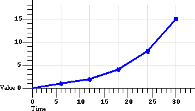
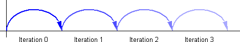

この文書は XML 文書におけるアニメーション機能の仕様を与える W3C 勧告であり、XML 文書への統合に適する基本的な XML アニメーション要素のセットとともに，アニメーションの枠組みを述べるものである。
これは SMIL 1.0 タイミングモデルを基に，いくつかの拡張を加えたものであり、 SMIL 2.0 の厳密なサブセットである。
これは SMIL 互換アニメーションを必要とするが，時間コンテナは必要としないアプリケーションのために、実装の複雑さの面で足がかりになるものを提供する。
This is a W3C Recommendation of a specification of animation functionality for XML documents.
It describes an animation framework as well as a set of base XML animation elements suitable for integration with XML documents.
It is based upon the SMIL 1.0 timing model, with some extensions, and is a true subset of SMIL 2.0.
This provides an intermediate stepping stone in terms of implementation complexity, for applications that wish to have SMIL-compatible animation but do not need or want time containers.
この文書の位置付け
この節では発行された時点におけるこの文書の位置付けについて述べます。他の文書がこの文書に取って代わる可能性があります。
この文書シリーズの最新の状態は、 W3C により維持管理されています。
This section describes the status of this document at the time of its publication.
Other documents may supersede this document.
The latest status of this document series is maintained at the W3C.
この文書は W3C のメンバ, および関心を持つ他の団体により評価され、ディレクターにより W3C 勧告として承認されたものです。
これは安定的な文書であり、規範として利用したり，他の文書に引用することができます。
勧告の発行における W3C の役割は、仕様に対する注目を集め，広範囲への普及を促す所にあります。
これはウェブの相互運用性と機能性を向上させるものです。
This document has been reviewed by W3C Members and other interested parties and has been endorsed by the Director as a W3C Recommendation.
It is a stable document and may be used as reference material or cited as a normative reference from another document.
W3C's role in making the Recommendation is to draw attention to the specification and to promote its widespread deployment.
This enhances the functionality and interoperability of the Web.
SMIL アニメーション仕様は
W3C Synchronized Multimedia Activity
の一環として制作されたものであり、W3C Interaction Domain の
SYMM Working Group
（会員のみ）
と W3C Document Formats Domain の
SVG Working Group
（会員のみ）
の協同作業による著作です。
SYMM Working Group の目的は
SYMM Working Group charter
（会員のみ）
にて議論されています（元々の charter バージョンから 2000年 7月 に改訂済み）。
The SMIL Animation specification has been produced as part of the W3C Synchronized Multimedia Activity and was written by the SYMM Working Group ( members only) of the W3C Interaction Domain, working with the SVG Working Group ( members only) of the W3C Document Formats Domain.
The goals of the SYMM Working Group are discussed in the SYMM Working Group charter ( members only), (revised July 2000 from original charter version).
SYMM Working Group
（会員のみ）
は、 SMIL 2.0 仕様のすべての特色機能が，少なくとも２度に渡り相互運用性を備えて実装されているものと見なしています。
SYMM Working Group Charter
（会員のみ）
によるその定義は、実装が別々の組織により独立に開発され、かつ，
SMIL 2.0 テストスイート
における各試験を少なくとも２つ以上の実装が合格したものとされています。
実装結果
は公開されており、もっぱら SMIL 2.0 の実装の実現を立証するための利用が意図されています。
それは，ある時点における現実の実装のふるまいを垣間見たものであり、これらの実装がただちに公に利用可能になるわけではありません。
相互運用性データは、個々の実装へのアクセスやそれらの性能評価のための利用が意図されているものではありません。
The SYMM Working Group ( members only) considers that all features in the SMIL 2.0 specification have been implemented at least twice in an interoperable way.
The SYMM Working Group Charter ( members only) defines this as the implementations having been developed independently by different organizations and each test in the SMIL 2.0 test suite has at least two passing implementations.
The Implementation results are publicly released and are intended solely to be used as proof of SMIL 2.0 implementability.
It is only a snap shot of the actual implementation behaviors at one moment of time, as these implementations may not be immediately available to the public.
The interoperability data is not intended to be used for assessing or grading the performance of any individual implementation.
SMIL 2.0 仕様には（したがって SMIL アニメーション仕様にも）特許開示（ patent disclosures ）と実施許諾条項（ license commitments ）が存在します。
これらは
W3C policy
に従って
SYMM Patent Statement page
から閲覧できます。
There are patent disclosures and license commitments associated with the SMIL 2.0 specification (and thus with the SMIL Animation specification also), these may be found on the SYMM Patent Statement page in conformance with W3C policy.
この文書に誤りを見つけられた方は www-smil@w3.org までご報告願います。
この仕様に見つかった誤りの一覧は
http://www.w3.org/2001/09/REC-smil-animation-20010904-errata
から閲覧できます。
Please report errors in this document to www-smil@w3.org.
The list of known errors in this specification is available at http://www.w3.org/2001/09/REC-smil-animation-20010904-errata.
現在の W3C 勧告と他の技術文書の一覧は
http://www.w3.org/TR
から閲覧できます。
A list of current W3C Recommendations and other technical documents can be found at http://www.w3.org/TR.
この文書では、アニメーションを時間軸に組み入れるための枠組み, および複数のアニメーションによる効果を組み合わせるための仕組みについて述べる。
どの
[XML]
ベース言語にも適用し得るような，一連の基本的なアニメーション要素についても述べる。
このモジュールを統合する言語のことを
ホスト言語
と呼ぶ。
アニメーション要素を含む文書のことを
ホスト文書
と呼ぶ。
This document describes a framework for incorporating animation onto a time line and a mechanism for composing the effects of multiple animations.
A set of basic animation elements are also described that can be applied to any [XML]-based language.
A language with which this module is integrated is referred to as a host language.
A document containing animation elements is referred to as a host document.
アニメーションは，本質的に時間に基づくものである。
SMIL アニメーションは SMIL タイミングモデルに基づいて定義される。
アニメーションの機能は、関連の属性と意味論が伴われた 一連の新たな要素により, 加えて SMIL タイミング属性により、記述される。
アニメーションのモデルは、特定の属性の 呈示値（ presentation value ）を，時経過に伴って変化させる関数として表現される。
Animation is inherently time-based.
SMIL Animation is defined in terms of the SMIL timing model.
The animation capabilities are described by new elements with associated attributes and semantics, as well as the SMIL timing attributes.
Animation is modeled as a function that changes the presented value of a specific attribute over time.
タイミングモデルは SMIL 1.0
[SMIL1.0]
に加えて、タイミングの特色機能をサポートするためのいくつかの変更と拡張に基づく。
SMIL アニメーションにおいては（ par や seq のような）時間コンテナは考慮されず、単純化された「平坦な」タイミングモデルが利用される。
このバージョンの SMIL アニメーションはタイミングを持たない文書では利用できない。
要素タイミングに要求される定義と制約
も見よ。
The timing model is based upon SMIL 1.0 [SMIL1.0], with some changes and extensions to support additional timing features.
SMIL Animation uses a simplified "flat" timing model, with no time containers (like <par> or <seq>).
This version of SMIL Animation may not be used with documents that otherwise contain timing.
See also Required definitions and constraints on element timing.
この文書では基本的なアニメーション能力を定義してはいるが、ホスト言語は追加の, またはより特化されたアニメーション要素を定義した上に構築されることが想定されている。
文書作成者と実装者の間で一貫性のあるモデルを確保するため、この文書ではアニメーションと SMIL タイミングモデルを統合する枠組みを導入する。
アニメーションは その対象の要素の 属性とプロパティに対する操作のみを行い、対象の要素に固有の意味論についての知識は要求しない。
While this document defines a base set of animation capabilities, it is assumed that host languages may build upon the support to define additional or more specialized animation elements.
In order to ensure a consistent model for document authors and runtime implementers, we introduce a framework for integrating animation with the SMIL timing model.
Animation only manipulates attributes and properties of the target elements, and so does not require any specific knowledge of the target element semantics.
この文書の例に含まれるホスト言語の構文には SMIL, SVG, XHTML, CSS が利用されている。
これらは、種々のホスト言語による統合の可能性を示すために与えられている。
The examples in this document that include syntax for a host language use SMIL, SVG, XHTML and CSS.
These are provided as an indication of possible integrations with various host languages.
2. 概観と用語
2.1. アニメーションの基礎
アニメーションとは、
対象要素
（ target element ）
— より厳密には、対象要素の属性，すなわち
対象属性
（ target attribute ）
— に対する時経過に基づく操作として定義される。
アニメーションは，時刻から対象属性の値への写像を定義する。
この写像の計算には、全てのタイミングの様相に加えて，アニメーション固有の意味論も織り込まれる。
Animation is defined as a time-based manipulation of a target element (or more specifically of some attribute of the target element, the target attribute).
The animation defines a mapping of time to values for the target attribute.
This mapping accounts for all aspects of timing, as well as animation-specific semantics.
アニメーションは、その始動, および反復され得る
単純持続時間
（ simple duration ）を指定する。
それぞれのアニメーションは、
アニメーション関数
（ animation function ）と呼ばれる，単純持続時間内の時刻から対象属性の値を生成するための，時間の関数を定義する。
文書作成者は、アニメーション関数が どれだけの期間, 何回反復されるべきかを指定できる。
単純持続時間と反復のふるまいにより、
活動持続時間
（ active duration ）が定義される。
Animations specify a begin, and a simple duration that can be repeated.
Each animation defines an animation function that produces a value for the target attribute, for any time within the simple duration.
The author can specify how long or how many times an animation function should repeat.
The simple duration combined with any repeating behavior defines the active duration.
対象属性は、対象要素の特色機能の名前として，ホスト言語で定義される。
これは例えば、要素の XML 属性であったり, 要素に適用される CSS プロパティの場合もある。
既定においては、アニメーションの対象要素はアニメーション要素（ animation element ）の親要素である（通常においては，対象要素はアニメーション要素の親になる）。
しかしながら， ID 参照, あるいは XLink
[XLink]
による参照を通せば、文書内のどの要素を対象にすることも可能である。
The target attribute is the name of a feature of a target element as defined in a host language document.
This may be (e.g.) an XML attribute contained in the element or a CSS property that applies to the element.
By default, the target element of an animation will be the parent of the animation element (an animation element is typically a child of the target element).
However, the target may be any element in the document, identified either by an ID reference or via an XLink [XLink] locator reference.
単純な例として、次のものは SVG 矩形のアニメーションを定義する。
矩形は，背が高くやせた状態から 低く太った状態へ変化する。
As a simple example, the following defines an animation of an SVG rectangle shape.
The rectangle will change from being tall and thin to being short and wide.
矩形は、始動からの 10 秒間で，幅が 10 画素から 100 画素に増えると同時に, 高さは 100 画素から 10 画素に減る。
The rectangle begins with a width of 10 pixels and increases to a width of 100 pixels over the course of 10 seconds.
Over the same ten seconds, the height of the rectangle changes from 100 pixels to 10 pixels.
アニメーションの実行中においても、 DOM
[DOM-Level-2]
における属性値は，実際に変化すべきではない。
アニメーションランタイムは、アニメートされる各属性に対し， DOM や CSS オブジェクトモデル（ OM ）からは独立した
呈示値
（ presentation value ）を保持すべきである。
実装がオブジェクトモデルをサポートしていない場合でも、呈示値と伴に，文書で元々定義された値も維持管理すべきである。
この呈示値が，文書の表示形に反映される。
アニメーションが操作する呈示値は， DOM や CSS OM に公開される
基底値
（ base value ）に影響を及ぼすべきではない。
詳細は
アニメーション サンドイッチ モデル
にて述べる。
When an animation is running, it should not actually change the attribute values in the DOM [DOM-Level-2].
The animation runtime should maintain a presentation value for each animated attribute, separate from the DOM or CSS Object Model (OM).
If an implementation does not support an object model, it should maintain the original value as defined by the document as well as the presentation value.
The presentation value is reflected in the display form of the document.
Animations thus manipulate the presentation value, and should not affect the base value exposed by DOM or CSS OM.
This is detailed in The animation sandwich model.
アニメーション関数は、時経過の中で必要に応じて実装により評価され，その結果は 対象属性の呈示値に適用される。
アニメーション関数は，連続的な時間の関数であり、レンダリングシステムに適するフレームレートが何であれ，それに応じて標本化することができる。
アニメーション関数の構文法表現はこのモデルとは独立であり、様々な記述が可能である。
この仕様におけるアニメーション要素は、一連の離散的な値や補間による値, SVG パスに基づくモーションのためのパス構文, キーフレームに基づくタイミング, 定速補間, これらの特色機能の変種に対する構文，をサポートする。
アニメーション関数は、純粋に, あるいは部分的にアルゴリズムにより定義し得る（例えば、乱数関数やマウス位置を追跡するモーションアニメーション）。
いずれにせよ、アニメーションはこれを時間の関数として表出する。
The animation function is evaluated as needed over time by the implementation, and the resulting values are applied to the presentation value for the target attribute.
Animation functions are continuous in time and can be sampled at whatever frame rate is appropriate for the rendering system.
The syntactic representation of the animation function is independent of this model, and may be described in a variety of ways.
The animation elements in this specification support syntax for a set of discrete or interpolated values, a path syntax for motion based upon SVG paths, keyframe based timing, evenly paced interpolation, and variants on these features.
Animation functions could be defined that were purely or partially algorithmic (e.g., a random value function or a motion animation that tracks the mouse position).
In all cases, the animation exposes this as a function of time.
呈示値は、基底値に対するアニメーションの
効果
（ effect ）を反映する。
アニメーションの効果は、与えられた時刻における対象属性の値の変化として表現される。
アニメーションが完了したなら、その効果はそれ以上適用されず，呈示値は基底値に戻されるのが既定のふるまいである。
アニメーション効果は
凍結
（ freeze ）させることにより、文書持続時間の最後まで延長させることも可能である。
The presentation value reflects the effect of the animation upon the base value.
The effect is the change to the value of the target attribute at any given time.
When an animation completes, the effect of the animation is no longer applied, and the presentation value reverts to the base value by default.
The animation effect can also be extended to freeze the last value for the remainder of the document duration.
アニメーションは、対象属性の基底値を上書きするか, 基底値に加算するか のいずれに定義することもできる。
この文脈においては、基底値は DOM 値でも，同じ対象属性に対する他のアニメーションによる結果でもよい。
この，より一般化された基底値の概念は、
下層値
（ underlying value ）と呼ばれる。
下層値に対し「加算」を行うアニメーションのことを
加法的
（ additive ）アニメーションと呼ぶ。
下層値を「上書き」するアニメーションのことを
非加法的
（ non-additive ）アニメーションと呼ぶ。
Animations can be defined to either override or add to the base value of an attribute.
In this context, the base value may be the DOM value, or the result of other animations that also target the same attribute.
This more general concept of a base value is termed the underlying value.
Animations that add to the underlying value are described as additive animations.
Animations that override the underlying value are referred to as non-additive animations.
2.2. アニメーション関数の値
多くのアニメーションは、アニメーション関数 f(t) を時経過に伴って適用される一連の値として指定する。
一部の型の属性（例えば数）に対しては、飛び飛びの値の間の補間関数として記述することができる。
Many animations specify the animation function f(t) as a sequence of values to be applied over time.
For some types of attributes (e.g. numbers), it is also possible to describe an interpolation function between values.
アニメーション要素では、簡単な形式による値の記述として， from 値と to 値を指定することができる。
属性が補間可能な値（例えば数値）をとれるならば、アニメーション関数は，単純持続時間を通して from と to で定義される範囲において値を補間できるようになる。
これには、 to 値の代わりに by 値を用いて，属性に対する加法的変化を指示する，変種がある。
As a simple form of describing the values, animation elements can specify a from value and a to value.
If the attribute takes values that support interpolation (e.g. a number), the animation function can interpolate values in the range defined by from and to, over the course of the simple duration.
A variant on this uses a by value in place of the to value, to indicate an additive change to the attribute.
より複雑な形式では、値の配列の指定やモーションパスによる記述も利用される。
更には、値を設定するタイミングを制御する「キーフレーム」アニメーションと呼ばれるものや，更に複雑な関数も利用できる。
More complex forms specify a list of values, or even a path description for motion.
Authors can also control the timing of the values, to describe "keyframe" animations, and even more complex functions.
2.3. 意味論の説明に用いられるシンボル
f(t)
単純アニメーション関数。
すなわち、単純持続時間内の時刻を，対象属性に対する値に写像する関数を表す（ 0 ≤ t ≤ 単純持続時間）。
F(t) がアニメーション全体に渡る写像を定義するのに対し、 f(t) は単純持続時間に単純化されたモデルにおける写像を定義する。
The simple animation function that maps times within the simple duration to values for the target attribute (0 <= t <= simple duration).
Note that while F(t) defines the mapping for the entire animation, f(t) has a simplified model that just handles the simple duration.
F(t)
任意の時点におけるアニメーションの効果を表す。
これは、任意の負でない時刻を対象属性の値へ写像する関数を表す。
時刻 0 がアニメーションが始動される時刻に対応する。
F(t) は、アニメーション関数 f(t) と, アニメーションとタイミングの制御に関する他の全ての側面との，組み合わせを表現する。
The effect of an animation for any point in the animation.
This maps any non-negative time to a value for the target attribute.
A time value of 0 corresponds to the time at which the animation begins.
Note that F(t) combines the animation function f(t) with all the other aspects of animation and timing controls.
3. アニメーションモデル
この節では、アニメーションを記述するための属性の，構文と意味論を述べる。
特定の要素についてはここでは述べず、アニメーションモデルを構成する，共通の概念と構文を述べる。
また、文書についての論点, および要素をアニメーションの対象にする方法も述べられる。
しかる後，単純なものから複雑な概念に向けて、アニメーションモデルを構築し，定義する：
まずは単純持続時間とアニメーション関数 f(t) から始め，その後 全般的な F(t) のふるまいについて述べ，最後にアニメーションの組み合わせのモデルとアニメーションのタイミングについての追加の詳細を述べる。
This section describes the attribute syntax and semantics for describing animations.
The specific elements are not described here, but rather the common concepts and syntax that comprise the model for animation.
Document issues are described, as well as the means to target an element for animation.
The animation model is then defined by building up from the simplest to the most complex concepts: first the simple duration and animation function f(t), and then the overall behavior F(t).
Finally, the model for combining animations is presented, and additional details of animation timing are described.
時間モデルは、ホスト文書におけるいくつかの定義に依存する：
ホスト文書は 一定の時区間において呈示される。
文書が呈示される時区間の開始を
文書始動
と呼び, 時区間の終了を
文書停止
と呼ぶ。
始動から停止までの時間を
文書持続時間
と呼ぶ。
呈示, および文書始動／文書停止の正式な定義は、ホスト言語の設計者に委ねられる（
ホスト言語に要求される定義
も見よ）。
The time model depends upon several definitions for the host document: A host document is presented over a certain time interval.
The start of the interval in which the document is presented is referred to as the document begin.
The end of the interval in which the document is presented is referred to as the document end.
The difference between the end and the begin is referred to as the document duration.
The formal definitions of presentation and document begin and end are left to the host language designer (see also Required host language definitions).
3.1. アニメーション対象の指定
アニメーション対象は、特定の要素に固有の属性として定義される。
この節では、対象属性と対象要素を指定する方法についての詳細を述べる。
The animation target is defined as a specific attribute of a particular element.
The means of specifying the target attribute and the target element are detailed in this section.
対象属性
アニメーションの対象となる属性は、 attributeName により指定される。
この属性の値は、ホスト言語で定義される対象属性の，名前を指定する文字列である。
The target attribute to be animated is specified with attributeName.
The value of this attribute is a string that specifies the name of the target attribute, as defined in the host language.
アニメーションの対象となる要素の属性は、しばしば，異なる言語や別の名前空間で定義されることがある。
例えば多くの XML アプリケーションでは、要素の表示位置（対象属性として代表的なものである）は， XML 属性ではなく CSS プロパティとして定義される。
場合によっては、同じ属性名が，複数の言語や複数の名前空間の 属性やプロパティに結び付けられていることもある。
文書作成者が名前の対応における曖昧さを排せるようにするため、 attributeType 属性が用意されている。
The attributes of an element that can be animated are often defined by different languages, and/or in different namespaces.
For example, in many XML applications, the position of an element (which is a typical target attribute) is defined as a CSS property rather than as XML attributes.
In some cases, the same attribute name is associated with attributes or properties in more than one language, or namespace.
To allow the author to disambiguate the name mapping, an additional attribute attributeType is provided that specifies the intended interpretation.
attributeType 属性はオプションである。
既定では、アニメーションランタイムは次の規則に従って名前を解決する：
attributeType が指定されていない状態において名前の衝突が生じた場合、ホスト言語でサポートされる一連の CSS プロパティとの合致を最初に試みる（ CSS がホスト言語でサポートされる場合）。
CSS プロパティとの合致が見られない場合（あるいは CSS が適用されない場合）、対象要素の既定の名前空間に属する属性名との合致を試みる。
The attributeType attribute is optional.
By default, the animation runtime will resolve the names according to the following rule: If there is a name conflict and attributeType is not specified, the list of CSS properties supported by the host language is matched first (if CSS is supported in the host language); if no CSS match is made (or CSS does not apply) the default namespace for the target element will be matched.
対象属性が，対象要素の既定の名前空間でない XML 名前空間で定義されている場合、文書作成者は，アニメーション要素のスコープ
【
すなわち，要素自身とその先祖
】
にて定義され, 結び付けられた名前空間接頭辞を利用して、対象属性の名前空間を指定しなければならない。
接頭辞は
attributeName
に与える値の先頭に付加する。
If a target attribute is defined in an XML Namespace other than the default namespace for the target element, the author must specify the namespace of the target attribute using the associated namespace prefix as defined in the scope of the animation element.
The prefix is prepended to the value for attributeName.
XML 名前空間の詳細については，
[XML-NS]
を参照のこと。
For more information on XML namespaces, see [XML-NS].
attributeName = "<attributeName>"
対象属性の名前を指定する。
属性の XML 名前空間を指示する XMLNS 接頭辞を付けてもよい。
その場合の接頭辞はアニメーション要素のスコープで解釈される。
Specifies the name of the target attribute.
An XMLNS prefix may be used to indicate the XML namespace for the attribute.
The prefix will be interpreted in the scope of the animation element.
attributeType = "CSS | XML | auto"
対象属性とそれに結び付けられた値が属する名前空間を指定する。
値は次のいずれか（文字の大小は区別される）：
Specifies the namespace in which the target attribute and its associated values are defined.
The attribute value is one of the following (values are case-sensitive):
"CSS"
attributeName の値が，ホスト文書で定義された CSS プロパティ名であるものと指定する。
この値はホスト言語環境が CSS をサポートしていなければ無意味である。
This specifies that the value of "attributeName" is the name of a CSS property, as defined for the host document.
This argument value is only meaningful in host language environments that support CSS.
"XML"
attributeName の値が対象要素が属する既定の XML 名前空間で定義される XML 属性の名前であるものと指定する。
attributeName の値に XMLNS 接頭辞が付与されている場合、実装はアニメーション要素のスコープにおける定義に従って結びつけられている名前空間を利用しなければならない。
This specifies that the value of "attributeName" is the name of an XML attribute defined in the default XML namespace for the target element.
Note that if the value for attributeName has an XMLNS prefix, the implementation must use the associated namespace as defined in the scope of the animation element.
"auto"
実装は、 attributeName の値を，対象要素のための属性と照合するべきであることを指示する。
実装は CSSプロパティ名の一覧を最初に検索し，見つからない場合はその要素に対する既定の XML 名前空間内を検索する。
これが既定の値である。
The implementation should match the attributeName to an attribute for the target element.
The implementation must first search through the the list of CSS properties for a matching property name, and if none is found, search the default XML namespace for the element.
This is the default.
対象要素
アニメーション要素は、アニメーションの対象となる要素を明示的に, あるいは暗黙的に指定できる。
明示的に指定する場合は対象要素を指定するための属性が利用される。
この構文については後に述べる。
An animation element can define the target element of the animation either explicitly or implicitly.
An explicit definition uses an attribute to specify the target element.
The syntax for this is described below.
対象が明示的に指定されていない場合、文書木における アニメーション要素の親要素が，暗黙の対象要素となる。
アニメーション要素には、アニメートされる要素の子として宣言されることが，一般的な利用として想定されている。
この場合、対象を明示的に指定する必要がない。
If no explicit target is specified, the implicit target element is the parent element of the animation element in the document tree.
It is expected that the common case will be that an animation element is declared as a child of the element to be animated.
In this case, no explicit target need be specified.
対象要素への明示的な参照が解決されない場合（例えば要素が見つからない）, あるいは（暗黙的／明示的に関わらず）指定された対象属性を対象要素がサポートしていない場合、いかなるアニメーション効果ももたらされない。
構文エラーの扱い
も見よ。
If an explicit target element reference cannot be resolved (e.g. if no such element can be found), the animation has no effect.
In addition, if the target element (either implicit or explicit) does not support the specified target attribute, the animation has no effect.
See also Handling syntax errors.
明示的な対象要素の指定には，次の２つの属性を利用できる：
The following two attributes can be used to identify the target element explicitly:
targetElement = "<IDREF>"
この属性はアニメートされることになる対象要素を指定する。
属性値はホスト文書における要素の XML ID 属性の値でなければならない。
"IDREF" の正式な定義は XML 1.0
[XML]
を参照のこと。
This attribute specifies the target element to be animated.
The attribute value must be the value of an XML identifier attribute of an element within the host document.
For a formal definition of "IDREF", refer to XML 1.0 [XML].
href = "<uri-reference>"
この属性はアニメートされることになる対象要素を参照する XLink ロケータを指定する。
This attribute specifies an XLink locator, referring to the target element to be animated.
アニメーション要素をホスト言語に統合するにあたっては、言語設計者は，これら２つの属性の両方を含めることを避けるべきであるが、両方とも含められた場合，対象要素の特定に際しては XLink href 属性が targetElement 属性よりも優先されるものとする。
When integrating animation elements into the host language, the language designer should avoid including both of these attributes.
If however, the host language designer chooses to include both attributes in the host language, then when both are specified for a given animation element the XLink href attribute takes precedence over the targetElement attribute.
targetElement 属性の利点は， href 属性に比して属性値の構文が単純なことである。
href 属性の利点は，将来版の SMIL アニメーションにおいても最大限のリンクの仕組みにまで拡張でき，汎用の XLink プロセッサによるアニメーション要素の処理が可能になる所にある。
XLink 形式は、このような参照 全てに XLink を利用するように設計されたホスト言語のためにも提供されている。
この２つの手法を下の例に示す。
The advantage of using the targetElement attribute is the simpler syntax of the attribute value compared to the href attribute.
The advantage of using the XLink href attribute is that it is extensible to a full linking mechanism in future versions of SMIL Animation, and the animation element can be processed by generic XLink processors.
The XLink form is also provided for host languages that are designed to use XLink for all such references.
The following two examples illustrate the two approaches.
次の例は、より単純な targetElement の構文を利用している：
This example uses the simpler targetElement syntax:
アニメーション要素に XLink の href 属性を利用する場合、次に示す追加の XLink 属性がホスト言語で定義されている必要がある。
これらは DTD で定義されていてもよいし、汎用 XLink プロセッサをサポートするためにホスト言語の文書構文が要求していてもよい。
詳細は
"XML Linking Language (XLink)"
[XLink]
を参照のこと。
When using an XLink href attribute on an animation element, the following additional XLink attributes need to be defined in the host language。
These may be defined in a DTD, or the host language may require these in the document syntax to support generic XLink processors。
For more information, refer to the "XML Linking Language (XLink)" [XLink]。
XLink 仕様により次の XLink 属性が要求される。
値は固定されており、DTD などで定義することができる。
他の全ての XLink 属性はオプションであり、アニメーションの意味論には影響しない。
The following XLink attributes are required by the XLink specification.
The values are fixed, and so may be specified as such in a DTD.
All other XLink attributes are optional, and do not affect SMIL Animation semantics.
type = "simple"
利用される XLink のタイプを特定する。
対象要素へのリンクは単純リンクであり、属性値は "simple" でなければならない。
Identifies the type of XLink being used.
To link to the target element, a simple link is used, and thus the attribute value must be "simple".
actuate = "onLoad"
対象要素へのリンクが自動的に（すなわち利用者による行為なしに）辿られることを指示する。
Indicates that the link to the target element is followed automatically (i.e., without user action).
show = "embed"
参照がファイル内への追加の内容を含まないことを指示する。
Indicates that the reference does not include additional content in the file.
ホスト文書とホスト言語に関連する，対象要素の指定における追加の詳細は、
アニメーション対象に要求される定義と制約
にて述べる。
Additional details on the target element specification as relates to the host document and language are described in Required definitions and constraints on animation targets.
3.2. アニメーション関数 f(t) の指定
全てのアニメーション関数は特定の時区間における属性値を定義する。
関数が定義される時刻の範囲が単純持続時間となる。
アニメーション関数は，単純持続時間の範囲（ 0 〜 その時間長）を超える範囲では定義されない。
Every animation function defines the value of the attribute at a particular moment in time.
The time range for which the animation function is defined is the simple duration.
The animation function does not produce defined results for times outside the range of 0 to the simple duration.
3.2.1. アニメーション関数のタイミング
要素の基本的なタイミングは， begin 属性と dur 属性で記述される。
文書作成者は、アニメーションの始動時刻を，単純な計時時刻（ clock time ）からマウスクリックの様なイベントが生じる時刻まで、様々な方法で指定できる。
単純持続時間の長さは dur 属性で指定される。
下に属性の構文を示す。
各種属性値に対する正式な構文規則は
タイミング属性値の文法
にて述べる。
読者の便宜をはかるため、ここでは要約的な構文を与える。
The basic timing for an element is described using the begin and dur attributes.
Authors can specify the begin time of an animation in a variety of ways, ranging from simple clock times to the time that an event like a mouse-click happens.
The length of the simple duration is specified using the dur attribute.
The attribute syntax is described below.
The normative syntax rules for each attribute value variant are described in Timing attribute value grammars.
A syntax summary is provided here as an aid to the reader.
この節は規定である。
begin =
begin-value-list
要素がいつの時点で起動されるかを指示する。
属性値はセミコロンで区切られた値のリスト。
Defines when the element becomes active.
The attribute value is a semi-colon separated list of values.
セミコロンで区切られた始動値のリスト。
始動時刻リストに対する解釈の詳細は
始動／停止の時刻リストの評価
にて述べる。
A semi-colon separated list of begin values.
The interpretation of a list of begin times is detailed in the section Evaluation of begin and end time lists.
アニメーションが始動される呈示時刻を指示する。
要素始動は文書始動に相対的なものとして定義される。
Specifies the presentation time at which the animation begins.
The begin is defined relative to the document begin.
同期基点と同期基点からの時間差を指示する。
要素始動は別の要素の始動／停止に相対的なものとして定義される。
Describes a syncbase and an offset from that syncbase.
The element begin is defined relative to the begin or active end of another element.
要素始動を決定する，イベントおよび オプションの時間差を記述する。
アニメーション始動は、イベントが生じた時刻から相対的なものとして定義される。
[DOM2Events]
による，ホスト言語で定義される任意のイベントが可能である。
これらには、利用者との対話によるイベント, ネットワークにより発火されるイベント, 等々が含まれ得る。
イベント基点（ event-base ）によるタイミングについての詳細は、
イベント基点タイミングとスケジュールされたタイミングの一本化
の節にて述べる。
Describes an event and an optional offset that determine the element begin.
The animation begin is defined relative to the time that the event is raised.
Events may be any event defined for the host language in accordance with [DOM2Events].
These may include user-interface events, event-triggers transmitted via a network, etc.
Details of event-based timing are described in the section below on Unifying event-based and scheduled timing.
修飾付きの反復イベントを記述する。
要素始動は、指定された反復値により反復イベントが生じた時刻から相対的なものとして，定義される。
Describes a qualified repeat event.
The element begin is defined relative to the time that the repeat event is raised with the specified iteration value.
要素始動を決定する accessKey を記述する。
要素始動は、利用者が accessKey 文字を入力した時刻から相対的なものとして，定義される。
Describes an accessKey that determines the element begin.
The element begin is defined relative to the time that the accessKey character is input by the user.
要素始動を実世界の計時時刻として記述する。
実世界の時刻の構文は、
[ISO8601]
にて定義されている構文に基づく。
Describes the element begin as a real-world clock time.
The wallclock time syntax is based upon syntax defined in [ISO8601].
"indefinite"
アニメーションの始動は、 "beginElement()" メソッド呼び出し, またはアニメーション要素を指すハイパーリンクの起動から，決定される。
SMIL アニメーションの DOM メソッドは，
サポートされるメソッド
にて述べる。
ハイパーリンクによるタイミングは，
ハイパーリンクとタイミング
にて述べる。
The begin of the animation will be determined by a "beginElement()" method call or a hyperlink targeted to the animation element.
The SMIL Animation DOM methods are described in the Supported methods section.
Hyperlink-based timing is described in the Hyperlinks and timing section.
始動値の意味論
この節は規定である。
begin が指定されていない場合の既定のタイミングは
時間差値
"0" である。
If no begin is specified, the default timing is equivalent to an offset value of "0"。
始動値／停止値のリスト内に構文エラーが見つかった場合（すなわち，定義されているどの時刻値の構文にも適合していない）、利用者エージェントがどのように処理すべきかはホスト言語が指定しなければならない。
【
始動値／停止値： 始動／停止時の呈示値ではなく，始動／停止の時機を表す値（当訳では，この語を用いる）。
】
If there is a syntax error in any individual value in the list of begin or end values (i.e., the value does not conform to the defined syntax for any of the time values), the host language must specify how the user agent deals with this.
時刻値が、定義されている構文に適合していても，無効な場合がある（例えば
同期基点値
において ID で参照されている要素が無効なものであったときなど）。
始動値／停止値のリスト内の個々の値において，その評価に際し この種のエラーが生じた場合、値は "indefinite" （不定）が指定されたものと見なされ，リスト内の他の値は通常どおり処理される。
begin／end 属性内のどの値も無効な場合、要素の始動／停止の時刻（同順）は "indefinite" であるものと見なされる。
A time value may conform to the defined syntax but still be invalid (e.g. if an unknown element is referenced by ID in a syncbase value).
If there is such an evaluation error in an individual value in the list of begin or end values, the individual value will be will be treated as though "indefinite" were specified, and the rest of the list will not be processed normally.
If no legal value is specified for a begin or end attribute, the element assumes an "indefinite" begin or end time (respectively).
この節は参考である。
始動値には，時刻のリストを指定することができる。
これは例えば、複数種のイベントのいずれかが生じるときなど、要素の始動に複数の「方法」または「規則」を指定するために利用される。
要素を複数回にわたり再生させるために、時刻のリストに複数の始動時刻を定義することもできる（このふるまいは制御できる： 例えば，最も早い始動時刻のみが実際に利用されるように設定することもできる —
アニメーションの再始動
も見よ）。
The begin value can specify a list of times.
This can be used to specify multiple "ways" or "rules" to begin an element, e.g. if any one of several events is raised.
A list of times can also define multiple begin times, allowing the element to play more than once (this behavior can be controlled, e.g. to only allow the earliest begin to actually be used - see also Restarting animations).
一般に、要素の始動時刻は，リスト内の最も早い時刻により 決定される。
始動時刻リストの評価には追加の制約がある。
詳細は
始動／停止の時刻リストの評価
を見よ。
In general, the earliest time in the list determines the begin time of the element.
There are additional constraints upon the evaluation of the begin time list, detailed in Evaluation of begin and end time lists.
begin
に与える値のリストに "indefinite" を含めることは合法であるが、実質的にそれが有用になるのは，値が１個のときに限られる。
begin
に対する "indefinite" の指定の有無に関わらず， DOM の begin メソッドは呼び出せるので、 "indefinite" を他の値と組み合わせても，始動タイミングには影響しない。
Note that while it is legal to include "indefinite" in a list of values for begin, "indefinite" is only really useful as a single value.
Combining it with other values does not impact begin timing, as DOM begin methods can be called with or without specifying "indefinite" for begin.
負の時間差が始動に指定されたときの処理
この節は参考である。
始動時刻における負の
時間差値
は、要素の同期関係を定義するに過ぎない。
いずれにせよ、要素に課せられている時間コンテナの制約や呈示時刻の制約が上書きされることはない。
The use of negative offsets to define begin times merely defines the synchronization relationship of the element.
It does not in any way override the time container constraints upon the element, and it cannot override the constraints of presentation time.
この節は規定である。
文書始動に相対的なものとして算出された時間差は，負になってもよい。
The computed offset relative to the document begin time may be negative。
始動時刻には、初期状態においては解決されないイベントや, 同期基点に相対的に負の 時間差を，指定してもよい。
同期基点やイベントによる時刻が解決された時点で算出される時刻は，過去であってもよい。
A begin time may be specified with a negative offset relative to an event or to a syncbase that is not initially resolved.
When the syncbase or eventbase time is resolved, the computed time may be in the past.
算出された始動時刻は、たとえ その時刻に要素を始動させることが不可能であっても，要素の
スケジュールされた同期関係
を定義する。
時間モデルが利用するのは、観察された要素始動時刻ではなく，算出された始動時刻である。
The computed begin time defines the scheduled synchronization relationship of the element, even if it is not possible to begin the element at the computed time.
The time model uses the computed begin time, and not the observed time of the element begin.
この節は規定である。
始動時刻が過去のある時点（すなわち，現在の呈示時刻よりも前）として解決された場合、要素は即座に始動されるが、あたかも指定された時刻には すでに始動されていたかの様に（その時間差の分メディアで再生されたかの様に），動作する。
When a begin time is resolved to be in the past (i.e., before the current presentation time), the element begins immediately, but acts as though it had begun at the specified time (playing from an offset into the media).
要素が実際に始動される時刻は、次のアルゴリズムにより算出される：
The element will actually begin at the time computed according to the following algorithm:
REM( x, y ) を x − (y × floor( x ∕ y )) と定義する。
ただし y が不定のときは REM( x, y ) を x と定める。
mb = REM( ABS(o), d ) − rD とする。
AD が不定, または ABS(o) ≥ AD ならば要素は始動されない。
他の場合、 mb ≥ 0 ならば時刻 mb に始動される。
他の場合、時刻 mb + d に始動される。
Let o be the offset value of a given begin value,
d be the associated simple duration,
AD be the associated active duration.
Let rAt be the time when the begin time becomes resolved.
Let rTo be the resolved sync-base or event-base time without the offset
Let rD be rTo - rAt. If rD < 0 then rD is set to 0.
If AD is indefinite, it compares greater than any value of o or ABS(o).
REM( x, y ) is defined as x - (y * floor( x/y )).
If y is indefinite, REM( x, y ) is just x.
Let mb = REM( ABS(o), d ) - rD
If ABS(o) >= AD then the element does not begin.
Else if mb >= 0 then the media begins at mb.
Else the media begins at mb + d.
要素が反復される場合、 repeat イベントの
反復値
は、観測された反復回数ではなく，上記により算出された始動時刻に基づいて計算される。
If the element repeats, the iteration value of the repeat event has the calculated value based upon the above computed begin time, and not the observed number of repeats.
におけるアニメーションは、利用者が要素 "foo" をクリックしたときに始動される。
始動時刻は，実際には 8 秒前として算出されるので、単純持続時間 3 秒の反復における３回目の反復における 2 秒の時点から，再生が開始される。
その 1 秒後に４回目の反復が開始され， repeat イベントは反復値 3 を持つ（反復値は 0 を起点にするので）。
要素はクリックから 22 秒後に停止することになる。
beginEvent イベントは，要素始動のときに生じるが、記録される時刻値は，定義された始動時刻 すなわち始動の 8 秒前に設定される。
時刻に依存するすべての出来事は、観測された始動時刻ではなく，算出された始動時刻に相対的なものとして起動される。
The animation begins when the user clicks on the element "foo".
Its calculated begin time is actually 8 seconds earlier, and so it begins to play at 2 seconds into the 3 second simple duration, on the third repeat iteration.
One second later, the fourth iteration of the element will begin, and the associated repeat event will have the iteration value set to 3 (since it is zero based).
The element will end 22 seconds after the click.
The beginEvent event is raised when the element begins, but has a time stamp value that corresponds to the defined begin time, 8 seconds earlier.
Any time dependents are activated relative to the computed begin time, and not the observed begin time.
注記：スクリプトからでも、イベントハンドラで実際の repeat イベントを数えることにより，計算による反復と観測による反復を区別することができる。
Note: If script authors wish to distinguish between the computed repeat iterations and observed repeat iterations, they can count actual repeat events in the associated event handler.
dur
単純持続時間。
値は次のいずれか：
Specifies the simple duration.
The attribute value can be one of the following types of values:
呈示時間における単純持続時間の長さを指示する。
値は 0 以上でなければならない。
Specifies the length of the simple duration in presentation time.
Value must be greater than 0.
"indefinite"
単純持続時間は不定であることを指示する。
Specifies the simple duration as indefinite.
If no begin is specified, the default value is "0" - the animation begins when the document begins.
If there is any error in the argument value syntax for begin, the default value for begin will be used.
【何故か begin 属性の記述がここにあるが誤って混入したものと思われる】
アニメーションが dur 属性を持たない場合の単純持続時間は不定である。
この場合は補間が行われなくなる（それでも
set>
要素においては有用ではあるが）。
補間と不定の単純持続時間
も見よ。
If the animation does not have a dur attribute, the simple duration is indefinite.
Note that interpolation will not work if the simple duration is indefinite (although this may still be useful for <set> elements).
See also Interpolation and indefinite simple durations.
dur 値の構文に誤りがある場合、この属性は無視され（指定されなかったものとみなされる），単純持続時間は不定になる。
If there is any error in the argument value syntax for dur, the attribute will be ignored (as though it were not specified), and so the simple duration will be indefinite。
始動が "indefinite" にされている, あるいはイベント基点を指定している場合、始動時刻は実際に要素が（例えばハイパーリンク, DOM メソッド呼び出し, そのイベントにより）起動される時点まで未知である。
それまでの間は、時刻は
未解決
であるものとされる。
要素始動が起動された時点において時刻は
解決された
ものとされる。
詳細は
イベント基点タイミングとスケジュールされたタイミングの一本化
を見よ。
If the begin is specified to be "indefinite" or specifies an event-base, the time of the begin is not actually known until the element is activated (e.g., with a hyperlink, DOM method call or the referenced event).
The time is referred to as unresolved when it is not known.
At the point at which the element begin is activated, the time becomes resolved.
This is described in detail in Unifying event-based and scheduled timing.
例
次の例は、いずれも 2000 年 1 月 1 日（ UTC ）の真夜中の始動を指定する。
The following examples all specify a begin at midnight on January 1st 2000, UTC
次の例は、 Pacific US 時間帯の 1990 年 7 月 28 日 午後 3:30 の始動を指定する：
The following example specifies a begin at 3:30 in the afternoon on July 28th 1990, in the Pacific US time zone:
begin="wallclock( 1990-07-28T15:30-08:00 )"
次の例は、文書がいつ呈示されようと，午前8時の始動を指定する：
The following example specifies a begin at 8 in the morning wherever the document is presented:
begin="wallclock( 08:00 )"
3.2.2. アニメーション関数の値
対象属性とタイミングに加えて、アニメーションには，時経過に伴って値がどのように変化するかも指定されなければならない。
アニメーションは values によるリスト, あるいは単純化された from, to, by による形式として記述できる。
In addition to the target attribute and the timing, an animation must specify how to change the value over time.
An animation can be described either as a list of values, or in a simplified form using from, to and by values.
from = "<value>"
アニメーションの始値を指示する。
Specifies the starting value of the animation.
to = "<value>"
アニメーションの終値を指示する。
Specifies the ending value of the animation.
by = "<value>"
アニメーションのための相対的差分値を指示する。
Specifies a relative offset value for the animation.
values = "<list>"
セミコロンで区切られた 1 個以上の値のリスト。
ベクトル値を持つ属性も attributeType のベクトル構文を用いてサポートされる。
A semicolon-separated list of one or more values.
Vector-valued attributes are supported using the vector syntax of the attributeType domain.
値のリストが利用される場合、それらはリストに現れる順番でアニメーションに適用される（これらの値における歩調制御と補間は
次節
に述べる）。
values が指定された場合、 from, to, by 属性は無視される。
If a list of values is used, the animation will apply the values in order over the course of the animation (pacing and interpolation between these values is described in the next section).
If a list of values is specified, any from, to and by attribute values are ignored.
より単純な
from/to/by
による構文には，いくつかの変種があるが、いずれにせよ from 値はオプションであり， by か to のいずれかは指定されなければならない。
by と to の両者を指定することは，合法ではないが、指定された場合， to 属性のみが利用される（ by は無視される）。
これらの属性の組み合わせにより，次に挙げる種類のアニメーションが得られる：
The simpler from/to/by syntax provides for several variants.
To use one of these variants, one of by or to must be specified; a from value is optional.
It is not legal to specify both by and to attributes - if both are specified, only the to attribute will be used (the by will be ignored).
The combinations of attributes yield the following classes of animation:
from-to アニメーション
from と to に値を指定することは，
2 値の values リストを指定することと等価である。
アニメーション関数は from 値から始まり to 値で終わる。
Specifying a from value and a to value defines a simple animation, equivalent to a values list with 2 values.
The animation function is defined to start with the from value, and to finish with the to value.
from-by アニメーション
from と by に値を指定した場合、アニメーション関数が単純持続時間において from 値から by 属性で指定された差分だけ変化するものとして，アニメーションが定義される。
これは加法が可能な属性（大半は数的属性）においてのみ利用できる。
Specifying a from value and a by value defines a simple animation in which the animation function is defined to start with the from value, and to change this over the course of the simple duration by a delta specified with the by attribute.
This may only be used with attributes that support addition (e.g. most numeric attributes).
by アニメーション
by にのみ値を指定した場合、アニメーション関数が属性の下層値から by 属性で指定された差分だけ単純持続時間において変化するものとして，アニメーションが定義される。
これは加法が可能な属性においてのみ利用できる。
Specifying only a by value defines a simple animation in which the animation function is defined to offset the underlying value for the attribute, using a delta that varies over the course of the simple duration, starting from a delta of 0 and ending with the delta specified with the by attribute.
This may only be used with attributes that support addition.
to アニメーション
アニメーション関数が属性の下層値から始められ, to 属性で指定される値で終わるものとして，アニメーションが定義される。
この形式の利用により、属性値が何であろうと，現在の値から望ましい to 値で停止するようにアニメーションを定義することができる。
This describes an animation in which the animation function is defined to start with the underlying value for the attribute, and finish with the value specified with the to attribute.
Using this form, an author can describe an animation that will start with any current value for the attribute, and will end up at the desired to value.
最後の２つの形式 “by-アニメーション” および “to-アニメーション” には、他のアニメーションと組み合わせて利用された場合に，意味論上の制約が加えられる。
詳細は
from, to, by 属性の加法的ふるまいへの影響の仕方
を見よ。
The last two forms "by animation" and "to animation" have additional semantic constraints when combined with other animations.
The details of this are described below in the section How from, to and by attributes affect additive behavior.
アニメーション要素に指定されるアニメーション値は，対象属性に対し合法な値でなければならない。
詳細は
アニメーション関数の値の詳細
を見よ。
The animation values specified in the animation element must be legal values for the specified attribute.
See also Animation function value details.
先頭／末尾, および 区切りのセミコロンの前後にある空白は無視される。
Leading and trailing white space, and white space before and after semicolon separators, will be ignored.
値（ from, to, by, values 属性の値）に合法でないものがあった場合、何のアニメーション効果ももたらされない（
構文エラーの扱い
も見よ）。
同様に, from, to, by, values 属性のいずれも指定されていない場合も、何のアニメーション効果ももたらされない。
If any values (i.e., the argument-values for from, to, by or values attributes) are not legal, the animation will have no effect (see also Handling Syntax Errors).
Similarly, if none of the from, to, by or values attributes are specified, the animation will have no effect.
補間と不定の単純持続時間
アニメーションの単純持続時間が不定である場合（例えば dur 値が指定されていないときなど）、一般に補間は意味をなさない。
単純持続時間に基づかないアニメーション関数を定義することは可能であるが（例えば乱数によるもの）、ほとんどのアニメーション関数は単純持続時間を基に定義される。
このとき，単純持続時間が不定であったならば、アニメーション関数の最初の値（すなわち f(0) ）がアニメーション関数に利用されることになる（すなわち，事実上 定数になる）。
If the simple duration of an animation is indefinite (e.g., if no dur value is specified), interpolation is not generally meaningful.
While it is possible to define an animation function that is not based upon a defined simple duration (e.g., some random number algorithm), most animations define the function in terms of the simple duration.
If an animation function is defined in terms of the simple duration and the simple duration is indefinite, the first value of the animation function (i.e., f(0)) should be used (effectively as a constant) for the animation function.
例
次の “values-アニメーション” の例は、 SVG 図形の幅を，補間により 10 秒間で 40 から 100 へ, 更に 40 へ戻るようにアニメートさせる。
The following example using the values syntax animates the width of an SVG shape over the course of 10 seconds, interpolating from a width of 40 to a width of 100 and back to 40.
次の “from-to アニメーション” の例は、 SVG 図形の幅を， 10 秒間に 50 から 100 までアニメートさせる。
The following "from-to animation" example animates the width of an SVG shape over the course of 10 seconds from a width of 50 to a width of 100.
次の “from-by アニメーション” は、 SVG 図形の幅を， 10 秒間で 50 から 75 までアニメートさせる。
The following "from-by animation" example animates the width of an SVG shape over the course of 10 seconds from a width of 50 to a width of 75.
次の “by-アニメーション” は、 SVG 図形を， 10 秒間で元の幅 40 から幅 70 までアニメートさせる。
The following "by animation" example animates the width of an SVG shape over the course of 10 seconds from the original width of 40 to a width of 70.
次の “to-アニメーション” は、 SVG 図形を， 10 秒間で元の幅 40 から幅 100 までアニメートさせる。
The following "to animation" example animates the width of an SVG shape over the course of 10 seconds from the original width of 40 to a width of 100.
既定の動作においては、アニメーションの持続時間を等間隔に分割した上で，単純な線型補間が行われるが、補間と値のタイミングに対するよりきめ細かな制御を行うために，追加の属性が用意されている。
calcMode 属性は，対象属性への値の適用メソッドを定める。
keyTimes 属性は、アニメーション関数のタイミングの取り方，すなわち values リストで与えられた各値（あるいは animateMotion に対する path 記述で与えられる点 —
animateMotion 要素
を見よ）と時刻との結びつけを与えることにより、追加の制御を可能にする。
keySplines 属性は， values リストの 値と値の間における補間に対する，歩調の制御手段を提供する。
By default, a simple linear interpolation is performed over the values, evenly spaced over the duration of the animation.
Additional attributes can be used for finer control over the interpolation and timing of the values.
The calcMode attribute defines the method of applying values to the attribute.
The keyTimes attribute provides additional control over the timing of the animation function, associating a time with each value in the values list (or the points in a path description for animateMotion - see The animateMotion element).
Finally, the keySplines attribute provides a means of controlling the pacing of interpolation between the values in the values list.
calcMode = "discrete | linear | paced | spline"
アニメーションの補間モードを指定する。
次に挙げる値のいずれかである。
既定のモードは「線型」であるが、属性が線型補間をサポートしない場合（例えば文字列）、 calcMode 属性は無視され，「離散」的な補間が用いられる。
Specifies the interpolation mode for the animation.
This can take any of the following values.
The default mode is "linear", however if the attribute does not support linear interpolation (e.g. for strings), the calcMode attribute is ignored and discrete interpolation is used.
discrete（離散）
アニメーション関数は，一つの値から次の値へ補間無しに飛び飛びに移るものと指定する。
This specifies that the animation function will jump from one value to the next without any interpolation.
linear（線型）
アニメーション関数の算出に，単純な値と値の線型補間を利用するものと指定する。
これが calcMode の既定値。
Simple linear interpolation between values is used to calculate the animation function.
This is the default calcMode.
paced（定速）
アニメーションにおいて一定歩調の変化が生成されるように，補間を行うものと指定する。
これは、値が線型の数値範囲を持ち, かつ ２点の「距離」の概念が定義される値に対しのみ，サポートされる（例えば位置, 幅, 高さ等々）。
paced が指定された場合、keyTimes と keySplines は無視されることになる。
Defines interpolation to produce an even pace of change across the animation.
This is only supported for values that define a linear numeric range, and for which some notion of "distance" between points can be calculated (e.g. position, width, height, etc.).
If "paced" is specified, any keyTimes or keySplines will be ignored.
spline（スプライン）
三次ベジェスプラインにより定義される時間の関数に従って， values リストの値を補間する。
スプライン上の点は keyTimes 属性の値で定められ、各時区間における制御点（ control points ）は keySplines 属性で定められる。
Interpolates from one value in the values list to the next according to a time function defined by a cubic Bezier spline.
The points of the spline are defined in the keyTimes attribute, and the control points for each interval are defined in the keySplines attribute.
keyTimes = "<list>"
アニメーションの歩調を制御するために利用される，セミコロンで区切られた時刻値のリスト。
リスト内の各時刻は values 属性によるリスト内の各値に対応し、アニメーション関数において値がいつ利用されるべきかを定義する。
keyTimes リスト内の各時刻値は， 0 から 1 までの浮動小数点数 (inclusive) として指定され、アニメーション要素の単純持続時間に対する比率を表現する。
time in the list corresponds to a value in the values attribute list, and defines when the value should be used in the animation function.
Each time value in the keyTimes list is specified as a floating point value between 0 and 1 (inclusive), representing a proportional offset into the simple duration of the animation element.
keyTimes のリストが指定された場合、含まれる値の個数は values リストに含まれる値の個数に合致していなければならない。
If a list of keyTimes is specified, there must be exactly as many values in the keyTimes list as in the values list.
連続する２つの時刻値における末尾側の時刻値は，先頭側の時刻値より未来でなければならない。
Each successive time value must be greater than or equal to the preceding time value.
keyTimes リストの意味論は補間モードに依存する：
The keyTimes list semantics depends upon the interpolation mode:
線型あるいはスプラインアニメーションにおいては、リストの最初の時刻値は 0, 最後の時刻値は 1 でなければならない。
keyTimes リスト内の各時刻値は， values リスト内の対応する値がいつ設定されるかを定める。
values は隣接する keyTimes の間で補間される。
For linear and spline animation, the first time value in the list must be 0, and the last time value in the list must be 1.
The keyTime associated with each value defines when the value is set; values are interpolated between the keyTimes.
離散アニメーションにおいては、リストの最初の時刻値は 0 でなければならない。
keyTimes の各値は values の各値がいつ設定されるかを定める。
アニメーション関数は、その値を keyTimes における次の時刻まで利用し続ける。
For discrete animation, the first time value in the list must be 0.
The time associated with each value defines when the value is set; the animation function uses that value until the next time defined in keyTimes.
補間モードが "paced" の場合、 keyTimes 属性は無視される。
If the interpolation mode is "paced", the keyTimes attribute is ignored.
keyTimes の指定に誤りがある場合（不適切な値であったり値の個数が合わないなど）、何のアニメーション効果ももたらされなくなる。
If there are any errors in the keyTimes specification (bad values, too many or too few values), the animation will have no effect.
単純持続時間が不定の場合、keyTimes 属性は無視される。
If the simple duration is indefinite, any keyTimes specification will be ignored.
keySplines = "<list>"
時区間の歩調を制御する三次ベジェ関数を定義するために keyTimes リストに結びつけられる，ベジェ制御点の集合。
属性値は，セミコロンで区切られた制御点記述のリスト。
各 制御点記述は、4 個の浮動小数点数値の組： x1 y1 x2 y2 であり， 1 個の時区間に対応するベジェ制御点を表す。
各区分を定める keyTimes の値がベジェ「アンカー点」を表し、 keySplines 値が制御点を表す。
したがって、制御点の組数は，［ keyTimes の値の個数 − 1 ］個でなければならない。
A set of Bezier control points associated with the keyTimes list, defining a cubic Bezier function that controls interval pacing.
The attribute value is a semicolon separated list of control point descriptions.
Each control point description is a set of four floating point values: x1 y1 x2 y2, describing the Bezier control points for one time segment.
The keyTimes values that define the associated segment are the Bezier "anchor points", and the keySplines values are the control points.
Thus, there must be one fewer sets of control points than there are keyTimes.
各値はすべて 0 〜 1 の範囲に入らなければならない。
The values must all be in the range 0 to 1.
calcMode が "spline" でない場合、この属性は無視される。
This attribute is ignored unless the calcMode is set to "spline".
keySplines の指定に誤りがあった場合（不適切な値であったり値の個数が合わないなど）、何のアニメーション効果ももたらされなくなる。
If there are any errors in the keySplines specification (bad values, too many or too few values), the animation will have no effect.
calcMode が
"discrete" （離散）,
"linear" （線型）,
"spline" （スプライン）
のいずれかであって,
keyTimes
属性は指定されていない場合、
values
属性の各値は， calcMode に応じて、以下に述べる様に，アニメーションの持続時間における等間隔な時刻に対応するものとみなされる：
If calcMode is set to "discrete", "linear" or "spline", but the keyTimes attribute is not specified, the values in the values attribute are assumed to be equally spaced through the animation duration, according to the calcMode:
離散アニメーションにおいては、 1 個の値が 1 個の時区間に対応するように持続時間が等分される。
アニメーション関数は各時区間において対応する値を順にとる。
For discrete animation, the duration is divided into equal time periods, one per value.
The animation function takes on the values in order, one value for each time period.
線型／スプライン アニメーションにおいては、持続時間は，［ 値の個数 − 1 ］個の時区間に等分され、アニメーション関数は，対応する時刻における各値の間の線型補間となる。
注記：最後の値が最初の値に等しい場合、反復における線型アニメーションは滑らかにループすることになる。
For linear and spline animation, the duration is divided into n-1 even periods, and the animation function is a linear interpolation between the values at the associated times.
Note that a linear animation will be a smoothly closed loop if the first value is repeated as the last.
この意味論は keySplines 属性が指定された場合にもあてはまるが、
keyTimes
の場合は異なる。
keySplines の各値に対応する時刻は上述のように決定される。
This semantic applies as well when the keySplines attribute is specified, but keyTimes is not.
The times associated to the keySplines values are determined as described above.
keySplines リストにおける制御点の組の構文を次に示す：
The syntax for the control point sets in keySplines lists is:
制御点の各値は、少なくとも 1 個以上の空白文字, あるいはコンマで区切られる。
コンマ区切りの前後には，余分な空白が隣接していてもよい。
浮動小数点数を記述するための構文は，ホスト言語で定義されなければならない。
Control point values are separated by at least one white space character or a comma.
Additional white space around the separator is allowed.
The allowed syntax for floating point numbers must be defined in the host language.
省略形式の from-to アニメーション と from-by アニメーション においては、値は 2 個だけである。
離散 from-to アニメーション においては、 "from" 値が 最初の半分の単純持続時間を支配し, "to" 値が 残る後半の単純持続時間を支配することになる。
同様に，離散 from-by アニメーション においては、 "from" 値が 最初の半分の単純持続時間を定め, 単純持続時間の残りの後半には "by" 値を適用して算出された結果が利用されることになる。
省略形式の to-アニメーション においては、値は 1 個だけなので，離散 to-アニメーション は，単に "to" 値を単純持続時間において利用し続けることになる。
For the shorthand forms from-to animation and from-by animation, there are only 2 values.
A discrete from-to animation will set the "from" value for the first half of the simple duration and the "to" value for the second half of the simple duration.
Similarly, a discrete from-by animation will set the "from" value for the first half of the simple duration and for the second half of the simple duration will set the computed result of applying the "by" value.
For the shorthand form to animation, there is only 1 value; a discrete to animation will simply set the "to" value for the simple duration.
keyTimes あるいは keySplines の値に誤りがある場合（いずれかの属性において値の個数が合わない場合など）何のアニメーション効果ももたらされなくなる（
構文エラーの扱い
も見よ）。
If the argument values for keyTimes or keySplines are not legal (including too few or too many values for either attribute), the animation will have no effect (see also Handling syntax errors).
calcMode, keyTimes, keySplines 属性の値においては、先頭や末尾の空白, および区切りのセミコロンの前後にある空白は無視される。
In the calcMode, keyTimes and keySplines attribute values, leading and trailing white space and white space before and after semicolon separators will be ignored.
補間モードの図示
同じ基本アニメーションの，異なる補間モード下における 時経過に伴なう値の変化の様子を、下の３つの図式 1a, 1b, 1c に示す。
どの例にも既定のタイミングが利用されている（ keyTimes, keySplines は指定されていない）。
どの例も，次の例を基に calcMode にそれぞれ異なる値があてがったものである：
The three illustrations 1a, 1b and 1c below show how the same basic animation will change a value over time, given different interpolation modes.
All examples use the default timing (no keyTimes or keySplines specified).
All examples are based upon the following example, but with different values for calcMode:
持続時間が等しい 6 個の時区間：1 個の値に 1 個の時区間が対応する。
There are 6 segments of equal duration: 1 segment per value.

図 1b: 既定の線型アニメーション.
Figure 1b: Default linear animation.
calcMode="linear"
持続時間が等しい 5 個の時区間： n 個の値に対し n-1 個の時区間。
スプラインによる補間は線型の発展型であり、別途図２として後に示す。
There are 5 segments of equal duration: n-1 segments for n values.
Spline interpolation is a refinement of linear, and is further illustrated in Figure 2, below.
持続時間の異なる 5 個の時区間： n 個の値に対し、値の変化が定速になるように算出された n-1 個の時区間。
There are 5 segments of varying duration: n-1 segments for n values, computed to yield a constant rate of change in the value.
例
次の例は単純離散アニメーション：
The following example describes a simple discrete animation:
属性 "foo" の値は 2 秒ごとに 4 個の文字列に順に設定されることになる。
文字列値の補間はできないので、離散アニメーションのみが可能であり，calcMode 属性は無視される。
The value of the attribute "foo" will be set to each of the four strings for 2 seconds each.
Because the string values cannot be interpolated, only discrete animation is possible; any calcMode attribute would be ignored.
離散アニメーションは次の例のように keyTimes と併用することもできる：
Discrete animation can also be used with keyTimes, as in the following example:
この例は持続時間が不定の場合に keyTimes の値がどのように適用されるかも示している。
"color" 属性の値は始めの 5 秒間は緑色に設定され, 次の 5 秒間では黄色に設定されることになる。
持続時間は（指定されていないので）既定の "indefinite" になり, 文書の残り時間においてずっと赤色のままになる。
This example also shows how keyTimes values can interact with an indefinite duration.
The value of the "color" attribute will be set to green for 5 seconds, and then to yellow for 5 seconds, and then will remain red for the remainder of the document, since the (unspecified) duration defaults to "indefinite".
次の例は単純線型アニメーション：
The following example describes a simple linear animation:
"x" の値は，始めの 5 秒間で 0 から 10 へ変化し, 次の 5 秒間で 10 から 100 へ変化することになる。
keyTimes が指定されていない場合の values 属性における各値は、時刻において等間隔になることに注意。
その結果、実際の値の変化は，アニメーションの後半の方がずっと大きくなる。
同じ例において "paced" 補間を利用した次と比較してみよ：
The value of "x" will change from 0 to 10 in the first 5 seconds, and then from 10 to 100 in the second 5 seconds.
Note that the values in the values attribute are spaced evenly in time with no keyTimes specified; in this case the result is a much larger actual change in the value during the second half of the animation.
Contrast this with the same example changed to use "paced" interpolation:
属性 "x" に対し一定歩調の変化が生成されるべく, values リストから定義される２番目の時区間が単純持続時間の大半を占める：
"x" の値は，最初の 1 秒間で 0 から 10 へ変化し, 次の 9 秒間で 10 から 100 へ変化することになる。
この例は定速補間を利用しなくとも from-to アニメーションとして記述できるが、（モーションパスのような）多くの例において、文書作成者が calcMode に値 "paced" を用いないで記述するのは，ずっと難しいものになる。
To produce an even pace of change to the attribute "x", the second segment defined by the values list gets most of the simple duration: The value of "x" will change from 0 to 10 in the first second, and then from 10 to 100 in the next 9 seconds.
While this example could be easily authored as a from-to animation without paced interpolation, many examples (such as motion paths) are much harder to author without the "paced" value for calcMode.
keyTimes の利用を次の例に示す：
The following example illustrates the use of keyTimes:
"x" 属性の値は、アニメーションの始動時に "0", 8 秒後（単純持続時間の 80% の時点）に "50", 停止時に "100" になる。
値はアニメーションの前半ではゆっくりと, 後半では速く変化することになる。
The keyTimes values cause the "x" attribute to have a value of "0" at the start of the animation, "50" after 8 seconds (at 80% into the simple duration) and "100" at the end of the animation.
The value will change more slowly in the first half of the animation, and more quickly in the second half.
次はこの例を keySplines により発展させたもの：
Extending this example to use keySplines:
keyTimes による効果は、"x" 属性をアニメーションの始動時に値 "0" , 8 秒後に "50", 停止時に "100" に変化させる点で前と同じである。
しかしながら、keySplines は値の補間における歩調制御のための曲線を定め、上の例では、スプラインにより，時刻 0 から 8 秒までの間では（すなわち keyTimes の 0 から 0.8 までと values の "0" から "50" まで）ゆるやかな出入りの効果が得られ、 8 秒後から停止までの間では（すなわち keyTimes の 0.8 から 1 までと values の "50" から "100" まで）まっすぐな線型補間となる。
下の図２に keySplines の各値により定義される曲線を示す。
The keyTimes still cause the "x" attribute to have a value of "0" at the start of the animation, "50" after 8 seconds and "100" at the end of the animation.
However, the keySplines values define a curve for pacing the interpolation between values.
In the example above, the spline causes an ease-in and ease-out effect between time 0 and 8 seconds (i.e., between keyTimes 0 and .8, and values "0" and "50"), but a strict linear interpolation between 8 seconds and the end (i.e., between keyTimes .8 and 1, and values "50" and "100").
See Figure 2 below for an illustration of the curves that these keySplines values define.
一部の対象属性においては、歩調の変化は視聴者からは認識されにくいかもしれない。
しかしながら、 モーションのようなアニメーションにおいては、動く速さを滑らかに変化させる機能は重要になり得る。
keySplines 属性はこの制御を与える。
For some attributes, the pace of change may not be easily discernable by viewers.
However for animations like motion, the ability to make the speed of the motion change gradually, and not in abrupt steps, can be important.
The keySplines attribute provides this control.
次の図に keySplines 属性による補間を示す。
各グラフは１個の時区間（すなわち keyTimes と values のリスト間で対応する値の組）に対する keySplines の設定の効果を示している。
横軸は時区間における補間の単位進行に対する入力値 — すなわち時区間において補間を続ける歩調 — を表す。
縦軸は keySplines が定める関数により得られる単位進行における結果の値を表す。
このグラフへの別の見方は、横軸が時区間における入力単位時間、縦軸が出力単位時間というものである。
タイミングと実世界の計時時刻
の節も見よ。
The following figure illustrates the interpretation of the keySplines attribute.
Each diagram illustrates the effect of keySplines settings for a single interval (i.e., between the associated pairs of values in the keyTimes and values lists.).
The horizontal axis can be thought of as the input value for the unit progress of interpolation within the interval - i.e., the pace with which interpolation proceeds along the given interval.
The vertical axis is the resulting value for the unit progress, yielded by the keySplines function.
Another way of describing this is that the horizontal axis is the input unit time for the interval, and the vertical axis is the output unit time.
See also the section Timing and real-world clock times.
keySplines="0 0 1 1"（既定）
keySplines=".5 0 .5 1"
keySplines="0 .75 .25 1"
keySplines="1 0 .25 .25"
図２：keySplines による効果
Figure 2: Illustration of keySplines effect
算出過程を明らかにするために、簡単な例から考える：
To illustrate the calculations, consider the simple example:
上の４通りの場合のそれぞれについて、アニメーションの進行に伴って keySplines 値を用いて補間される値の近似値は：
Using the keySplines values for each of the four cases above, the approximate interpolated values as the animation proceeds are:
keySplines 値
初期値
１秒後
２秒後
３秒後
最終値
0 0 1 1
10.0
12.5
15.0
17.5
20.0
.5 0 .5 1
10.0
11.0
15.0
19.0
20.0
0 .75 .25 1
10.0
18.0
19.3
19.8
20.0
1 0 .25 .25
10.0
10.1
10.6
16.9
20.0
ベジェスプラインの計算の正式な定義については
[COMP-GRAPHICS]
を見よ。
For a formal definition of Bezier spline calculation, see [COMP-GRAPHICS].
keyTimes と keySplines 属性は次の例に示すように、値の指定の簡略形式
from/to/by
と併用することもできる：
The keyTimes and keySplines attributes can also be used with the from/to/by shorthand forms for specifying values, as in the following example:
keySplines で指定される "緩やかな出入り" 曲線により、値は 10 から 20 へ変化する。
keyTimes により、値は 7 秒経過時に 20 になり、単純持続時間 10 秒における残り時間ではそのままとなる。
The value will change from 10 to 20, using an "ease-in/ease-out" curve specified by the keySplines values.
The keyTimes values cause the value of 20 to be reached at 7 seconds, and to hold there for the remainder of the 10 second simple duration.
次の例に少し変わった利用： “from-to アニメーション” における離散アニメーションを示す。
SVG 要素の "stroke-linecap" 属性の値は文字列をとるので calcMode は離散的となる。
アニメーションでは stroke-linecap プロパティが最初の 5 秒間（単純持続時間の半分）は "round" に、残りの 5 秒間では "square" に設定される。
The following example describes a somewhat unusual usage: "from-to animation" with discrete animation.
The "stroke-linecap" attribute of SVG elements takes a string, and so implies a calcMode of discrete.
The animation will set the stroke-linecap property to "round" for 5 seconds (half the simple duration) and then set the stroke-linecap to "square" for 5 seconds.
上述のように、アニメーション関数 f(t) は単純持続時間におけるアニメーションを定義する。
加えて、 SMIL アニメーションでは，単純持続時間を反復させることもできる。
更には、活動持続時間の完了時にアニメーションを単に停止させるべきか, あるいは最後の値に凍結させるべきかを指定したり、各アニメーションが他のアニメーションや元々の DOM 値とどのように組み合わせられるべきかも、指定することができる。
As described above, the animation function f(t) defines the animation for the simple duration.
However SMIL Animation allows the author to repeat the simple duration.
SMIL Animation also allows authors to specify whether the animation should simply end when the active duration completes, or whether it should be frozen at the last value.
In addition, the author can specify how each animation should be combined with other animations and the original DOM value.
この節では、これらの追加の機能の 構文と意味論 について述べる。
アニメーションの組み合わせの詳細なモデルは、タイミングモデルの詳細に関連して述べられる。
This section describes the syntax and associated semantics for the additional functionality.
A detailed model for combining animations is described, along with additional details of the timing model.
反復のふるまいもひっくるめたアニメーションの活動が再生中の期間（の長さ）は、活動持続時間として記述される。
活動持続時間は、単純持続時間と反復の指定から算出され， end 属性により制約され得る。
活動持続時間を算出するための完全な規則は，
活動持続時間の算出
の節にて示す。
The period of time during which the animation is actively playing, including any repeat behavior, is described as the active duration.
The active duration may be computed from the simple duration and the repeat specification, and it may be constrained with the end attribute.
The complete rules for computing the active duration are presented in the section Computing the active duration.
3.3.1. アニメーションの反復
アニメーションの反復により、アニメーション関数 f(t) は何回でも続けて「再生」され得る。
文書作成者は、 repeatCount を用いて 何回 反復させるか，あるいは repeatDur を用いて どれだけの時間 反復させるかを，指定することができる。
各
反復
は、アニメーション関数 f(t) の「再生」の， 1 個のインスタンスである。
Repeating an animation causes the animation function f(t) to be "played" several times in sequence.
The author can specify either how many times to repeat, using repeatCount, or how long to repeat, using repeatDur.
Each repeat iteration is one instance of "playing" the animation function f(t).
単純持続時間が不定の場合、アニメーションは反復できない。
活動持続時間の算出
の節も見よ。
If the simple duration is indefinite, the animation cannot repeat.
See also the section Computing the active duration.
repeatCount
アニメーション関数が反復される回数を指定する。
次の属性値をとれる：
Specifies the number of iterations of the animation function.
It can have the following attribute values:
数値
反復回数を指定する「浮動小数点」（ 10進）数値。
小数値により，部分的な反復を含ませることもできる。
小数値は，単純持続時間の一部分を意味する。
値は正でなければならない。
This is a (base 10) "floating point" numeric value that specifies the number of iterations.
It can include partial iterations expressed as fraction values.
A fractional value describes a portion of the simple duration.
Values must be greater than 0.
"indefinite"
アニメーションの反復回数は，不定であるものと定義される（すなわち文書停止まで）。
The animation is defined to repeat indefinitely (i.e., until the document ends).
repeatDur
反復の持続時間を指定する。
次の属性値をとれる：
Specifies the total duration for repeat.
It can have the following attribute values:
アニメーション関数 f(t) の反復にかけられる，呈示時間における持続時間を指定する。
Specifies the duration in presentation time to repeat the animation function f(t).
"indefinite"
アニメーションの反復の長さは不定であるものと定義される（すなわち文書停止まで）。
The animation is defined to repeat indefinitely (i.e., until the document ends).
repeatCount や repeatDur が指定される場合、いずれか一方のみが指定されるべきである。
両方とも指定された場合（かつ単純持続時間が不定でない場合）、活動持続時間は， repeatDur と［
単純持続時間の repeatCount 倍
］のうちの短い方として定義される。
この比較においては、定義された値は，値 "indefinite" よりも「短い」ものとみなされる。
単純持続時間が不定であり, かつ repeatCount と repeatDur の両方が指定された場合、 repeatCount は無視され, repeatDur が利用されることになる（下 repeatDur と不定の単純持続時間についての例を見よ）。
これらの規則は，
活動持続時間の算出
の節に示される。
At most one of repeatCount or repeatDur should be specified.
If both are specified (and the simple duration is not indefinite), the active duration is defined as the minimum of the specified repeatDur and the simple duration multiplied by repeatCount.
For the purposes of this comparison, a defined value is considered to be "less than" a value of "indefinite".
If the simple duration is indefinite, and both repeatCount and repeatDur are specified, the repeatCount will be ignored, and the repeatDur will be used (refer to the examples below describing repeatDur and an indefinite simple duration).
These rules are included in the section Computing the active duration.
例
次の例では、 2.5 秒のアニメーション関数が 2 回反復され，活動持続時間は 5 秒になる。
In the following example, the 2.5 second animation function will be repeated twice; the active duration will be 5 seconds.
次の例では、アニメーション関数が全時間 2 回分に加えて前半のみが反復され、活動持続時間は 7.5 秒になる。
In the following example, the animation function will be repeated two full times and then the first half is repeated once more; the active duration will be 7.5 seconds.
次の例では、アニメーション関数は 合計で 7 秒間反復され，全時間２回分と端数分の２秒間再生される。
これは repeatCount を 2.8 にするに等しい。
最後の（部分的な）反復では "0" から "8" までの値が適用されることになる。
In the following example, the animation function will repeat for a total of 7 seconds.
It will play fully two times, followed by a fractional part of 2 seconds.
This is equivalent to a repeatCount of 2.8.
The last (partial) iteration will apply values in the range "0" to "8".
単純持続時間が定義されていない場合（例えば不定のとき）、反復のふるまいは定義されないことに注意 （しかしながら, repeatDur は活動持続時間を定義する）。
次の例では、単純持続時間が不定なので repeatCount は無視される。
にもかかわらず、これはエラーとは見なされない：活動持続時間も不定である。
そのアニメーション効果は f(0) の値を利用するだけであり、文書の持続時間の残りにおいて，塗り潰し（ fill ）はずっと赤色のままである 。
Note that if the simple duration is not defined (e.g. it is indefinite), repeat behavior is not defined (but repeatDur still defines the active duration).
In the following example the simple duration is indefinite, and so the repeatCount is effectively ignored.
Nevertheless, this is not considered an error: the active duration is also indefinite.
The effect of the animation is to to just use the value for f(0), setting the fill color to red for the remainder of the document duration.
次の例は単純持続時間が不定であるが、 repeatDur が活動持続時間を決定する。
そのアニメーション効果により， 10 秒間だけ赤色に塗り潰される。
In the following example, the simple duration is indefinite, but the repeatDur still determines the active duration.
The effect of the animation is to set the fill color to red for 10 seconds.
次の例では、単純持続時間が repeatDur で指定される持続時間より長く，活動持続時間が実際に単純持続時間より短くなる。
しかしながら、アニメーション関数は，指定された単純持続時間を利用して補間を行う。
そのアニメーションによる効果は， 7 秒間において "top" の値を 10 から 17 までの範囲で補間する。
In the following example, the simple duration is longer than the duration specified by repeatDur, and so the active duration will effectively cut short the simple duration.
However, the animation function still interpolates using the specified simple duration.
The effect of the animation is to interpolate the value of "top" from 10 to 17, over the course of 7 seconds.
min
属性は、与えられた最小の活動持続時間の経過前に要素が再始動されることを 防止するものではない。
The min attribute does not prevent an element from restarting before the minimum active duration is reached.
反復アニメーションのふるまいの制御 — 累積アニメーション
反復されるアニメーションにおいては、各反復が元々のふるまいと同じように反復されるべきか, あるいは前の結果の上に累積させるように反復を行わせるかを選べる。
例えば、弧を表すモーションパスにおいて，同じ弧の上に沿う動きを何度も反復させたり、各反復の終了状態から次の反復を開始させて，アニメートされる要素がウインドウ内を跳ね回る様にすることができる。
後者は，
累積
アニメーションと呼ばれる。
The author may also select whether a repeating animation should repeat the original behavior for each iteration, or whether it should build upon the previous results, accumulating with each iteration.
For example, a motion path that describes an arc can repeat by moving along the same arc over and over again, or it can begin each repeat iteration where the last left off, making the animated element bounce across the window.
This is called cumulative animation.
単純な弧を表すパスの用例（詳細は
animateMotion 要素
を見よ）：
Using the path notation for a simple arc (detailed in The animateMotion element), we describe this example as:
イメージは弧に沿って元の位置から 5 秒間にかけて動く。
アニメーションが反復される度に，下の図３に示されるように，次の弧は前の値に基づいて前の弧が終了した所から開始される。
この様にして，イメージはスクリーン上を「跳ねる」。
同じアニメーションを 4 個の弧からなる 完全なパスにより記述することもできるが、一般的に，パスの記述はかさばり, 編集も煩わしくなる。
The image moves from the original position along the arc over the course of 5 seconds.
As the animation repeats, it builds upon the previous value and begins the second arc where the first one ended, as illustrated in Figure 3, below.
In this way, the image "bounces" across the screen.
The same animation could be described as a complete path of 4 arcs, but in the general case the path description can get quite large and cumbersome to edit.

図３：accumulate="sum" による反復アニメーション。
各反復は前の反復結果に基づく。
Figure 3: Illustration of repeating animation with accumulate="sum".
Each repeat iteration builds upon the previous.
累積アニメーションは、１個のアニメーションが反復されるごとに，どのようにアニメーション関数の結果が蓄積されるか、についてのみを制御することに注意。
特に、一つのアニメーションがどのように他のアニメーションと関わって呈示値を生成するか、についての制御は行わない。
後者のふるまいについては，
加法的アニメーション
の節にて述べる。
Note that cumulative animation only controls how a single animation accumulates the results of the animation function as it repeats.
It specifically does not control how one animation interacts with other animations to produce a presentation value.
This latter behavior is described in the section Additive animation.
反復アニメーションの累積的なふるまいは，
accumulate
属性により制御される：
The cumulative behavior of repeating animations is controlled with the accumulate attribute:
accumulate = "none | sum"
アニメーションが累積的になるかどうかを指示する。
"sum" の場合、各反復は前の反復の最後の値に基づいて行われる。
"none" の場合、各反復は累積的にならず，単にアニメーション関数 f(t) を反復するのみである。
これが既定のふるまいである。
Controls whether or not the animation is cumulative.
If "sum", each repeat iteration after the first builds upon the last value of the previous iteration.
If "none", repeat iterations are not cumulative, and simply repeat the animation function f(t).
This is the default.
対象属性の値が加法をサポートしていない場合, またはアニメーション要素が反復されない場合、この属性は無視される。
This attribute is ignored if the target attribute value does not support addition, or if the animation element does not repeat.
"to-アニメーション" に対しては、累積アニメーションを定義することはできない。
アニメーション関数が to 属性のみにより指定されている場合、この属性は無視される。
関数値の指定
も見よ。
Cumulative animation is not defined for "to animation".
This attribute will be ignored if the animation function is specified with only the to attribute.
See also Specifying function values.
加法をサポートするどの数的属性も、累積アニメーションをサポートする。
例えば、 SVG の <rect> （矩形）要素の "width" を 50 秒間で 100 画素大きくする「鼓動」アニメーションは，次のようにして定義できる：
Any numeric attribute that supports addition can support cumulative animation.
For example, we can define a "pulsing" animation that will grow the "width" of an SVG <rect> element by 100 pixels in 50 seconds.
各単純持続時間において、矩形の幅は 15 画素ふくらんでから縮み、 10 画素大きくなった所で終わる。
図形は最初 20 画素の幅から, 5 秒後には 30 画素の幅になる。
アニメーションは反復される度に前の値から構築される。
図形は、２回目の反復にて 45 画素にふくらんでから縮み, 10 秒後には幅 40 画素に達し, 10 回の反復による結果， 120 (20 + 100) 画素の幅に達する。
Each simple duration causes the rectangle width to bulge by 15 pixels and end up 10 pixels larger.
The shape is 20 pixels wide at the beginning, and after 5 seconds is 30 pixels wide.
The animation repeats, and builds upon the previous values.
The shape will bulge to 45 pixels and then end up 40 pixels wide after 10 seconds, and will eventually end up 120 (20 + 100) pixels wide after all 10 repeats.
次の例のように、from-to と from-by アニメーションは，累積アニメーションもサポートする：
From-to and from-by animations also support cumulative animation, as in the following example:
最初の 5 秒間で矩形は 10 から 20 画素へ大きくなり, 次の 5 秒間で 20 から 30 画素になり, 以下同様にして 10 回の反復後には 110 画素に達する。
additive に対する既定値は "replace" なので、元々の値は無視されることに注意。
次の例は，アニメーションを明示的に加法的にする：
The rectangle will grow from 10 to 20 pixels in the first 5 seconds, and then from 20 to 30 in the next 5 seconds, and so on up to 110 pixels after 10 repeats.
Note that since the default value for additive is "replace", the original value is ignored.
The following example makes the animation explicitly additive:
結果は、すべての値が元の値 20 によりずらされることを除いて，前と同じである。
矩形の幅は 5 秒後に 30 画素になり， 10 回の反復後に 130 画素に達する。
The results are the same as before, except that all the values are shifted up by the original value of 20.
The rectangle is 30 pixels wide after 5 秒, and 130 pixels wide after 10 repeats.
累積アニメーション値の算出
累積アニメーションのふるまいを生成するためには、アニメーション関数 f(t) は，各反復ごとに修正されなければならない。
最初を除く各反復においては，前の反復の最後の値が加えられなければならない — これは，アニメーション関数に指定された最後の値の倍数として表される。
累積アニメーションは，アニメーションのふるまいを指定する値を基に定義されるものであり、標本化された, あるいは出力されたアニメーション値を基にするものではないことに注意。
後者は環境ごとに, あるいは同じ環境下でも文書ごとに異なり得るものである。
To produce the cumulative animation behavior, the animation function f(t) must be modified slightly.
Each iteration after the first must add in the last value of the previous iteration - this is expressed as a multiple of the last value specified for the animation function.
Note that cumulative animation is defined in terms of the values specified for the animation behavior, and not in terms of sampled or rendered animation values.
The latter would vary from machine to machine, and could even vary between document views on the same machine.
記法 fi(t) は、
i 番目の反復における 累積アニメーション関数を表すものとする。
Let fi(t) represent the cumulative animation function for a given iteration i.
最初の反復 f0(t) は、累積には影響されず，元のアニメーション関数と同じになるものと定義される。
The first iteration f0(t) is unaffected by accumulate, and so is the same as the original animation function definition.
f0(t) = f(t)
アニメーション関数に指定された最後の値（例えば、"to" 値, "values" リストにおける最後の値, "path" の終端など）を ve とする。
２回目以降の各反復では，算出された差分に加算される：
Let ve be the last value specified for the animation function (e.g., the "to" value, the last value in a "values" list, or the end of a "path").
Each iteration after the first adds in the computed offset:
fi(t) = (ve * i) + f(t) ; i ≥ 1
3.3.2. 活動持続時間の制御
SMIL アニメーションは活動持続時間に対する追加の制御を提供する。
end 属性により、文書作成者は 停止値の指定, 単純時間差, 時刻基点, イベント基点, あるいは DOM メソッド呼び出しを利用してアニメーションの活動持続時間を制約することができる。
end 属性は，活動持続時間を制約することはできる一方, 延長することはできない。
延長は dur と反復のふるまいにより定義されるものである。
活動持続時間の計算のための属性の組み合わせ規則は，
活動持続時間の算出
の節にて示す。
SMIL Animation provides an additional control over the active duration.
The end attribute allows the author to constrain the active duration of the animation by specifying an end value, using a simple offset, a time base, an event-base or DOM method calls.
The end attribute can constrain but not extend the active duration that is otherwise defined by dur and any repeat behavior.
The rules for combining the attributes to compute the active duration are presented in the section, Computing the active duration.
end = end-value-list
活動持続時間を制約するためのアニメーションの停止値（停止時機）を定義する。
属性値は，セミコロンで区切られた値のリスト。
Defines an end value for the animation that can constrain the active duration.
The attribute value is a semi-colon separated list of values.
セミコロンで区切られた停止値のリスト。
停止時刻のリストに対する解釈の詳細は，
始動／停止の時刻リストの評価
の節にて述べる。
A semi-colon separated list of end values.
The interpretation of a list of end times is detailed in the section Evaluation of begin and end time lists.
同期基点と同期基点からの時間差を記述する。
停止値は，別の要素の始動／停止に相対的なものとして定義される。
Describes a syncbase and an offset from that syncbase.
The end value is defined relative to the begin or active end of another element.
要素停止を決定する イベントとオプションの時間差を記述する。
アニメーション停止値は，イベントが生じた時刻に相対的なものとして定義される。
イベントは，
[DOM2Events]
に従って ホスト言語で定義される，任意のものが可能である。
これらには、利用者による対話的イベントやネットワークから起動されるイベントなどが含まれてもよい。
イベント基点タイミングについての詳細は，
イベント基点タイミングとスケジュールされたタイミングの一本化
にて述べる。
Describes an event and an optional offset that determine the element begin.
The animation end value is defined relative to the time that the event is raised.
Events may be any event defined for the host language in accordance with [DOM2Events].
These may include user-interface events, event-triggers transmitted via a network, etc.
Details of event-based timing are described in the section below on Unifying event-based and scheduled timing.
修飾付きの反復イベントを記述する。
停止値は，指定された反復値を伴って反復イベントが生じた時刻に相対的なものとして定義される。
Describes a qualified repeat event.
The end value is defined relative to the time that the repeat event is raised with the specified iteration value.
停止値を決定する accessKey を記述する。
停止値は， accessKey 文字が利用者により入力された時刻に相対的なものとして定義される。
Describes an accessKey that determines the end value.
The end value is defined relative to the time that the accessKey character is input by the user.
停止値を実世界の計時時刻として記述する。
実世界の時刻の構文は，
[ISO8601]
で定義された構文に基づく。
Describes the end value as a real-world clock time.
The wallclock time syntax is based upon syntax defined in [ISO8601].
"indefinite"
アニメーションの停止値は， "endElement()" （あるいはそれに等価な）メソッド呼び出しから決定されることになる。
SMIL アニメーションの DOM メソッドについては，
サポートされるメソッド
の節にて述べる。
ハイパーリンク基点のタイミングについては，
ハイパーリンクとタイミング
の節にて述べる。
The end value of the animation will be determined by a "endElement()" (or equivalent) method call.
The SMIL Animation DOM methods are described in the Supported methods section.
Hyperlink-based timing is described in the Hyperlinks and timing section.
停止値には時刻のリストを指定することができる。
これは、例えば複数のイベントのいずれかが生じるときなど，要素の停止に複数の「方法」または「規則」を指定するために利用される。
要素を複数回再生させられるようにするため、時刻のリストには，複数の始動時刻に対応する 複数の停止時刻を与えることもできる（このふるまいは制御できる：
アニメーションの再始動
も見よ）。
The end value can specify a list of times.
This can be used to specify multiple "ways" or "rules" to end an element, e.g. if any one of several events is raised.
A list of times can also define multiple end times that can correspond to multiple begin times, allowing the element to play more than once (this behavior can be controlled - see also Restarting animations).
例
次の例では、活動持続時間が 10 秒か "foo" 要素の停止のうちの早い方で停止することになる。
これは特に、 "foo" の始動や停止がイベントに相対的なものとして定義されているときに，有用になる。
In the following example, the active duration will end at the earlier of 10 seconds or the end of the "foo" element.
This is particularly useful if "foo" is defined to begin or end relative to an event.
次の例では、対象要素における利用者のクリックにより，アニメーションが始動される。
活動持続時間は，文書始動から 30 秒後に終了することになる。
30 秒経過する前に利用者が対象要素をクリックしなかった場合、アニメーションは決して始動されないことに注意。
In the following example, the animation begins when the user clicks on the target element.
The active duration will end 30 seconds after the document begins.
Note that if the user has not clicked on the target element before 30 seconds elapse, the animation will never begin.
イベント値
を伴う end の利用により、対話的イベントか最長の活動持続時間のいずれかに基づいてアニメーションを停止させることが可能になる。
これは lazy interaction として知られるものである。
Using end with an event value enables authors to end an animation based on either an interactive event or a maximum active duration.
This is sometimes known as lazy interaction.
次の例は、何かの製造工程を示すものである。
画像を（例えば背景に対して）動かすアニメーションを用いて、工場のある場所から別の場所へ物がどのように移動するかを再生する。
各段階はモーションパスであり、要点を明白にするために 3 回反復される。
各アニメーションは、利用者が呈示を次の段階へ飛ばせるように, "next" 要素のクリックにより停止させられるようにしてある。
In this example, a presentation describes some factory processes.
It uses animation to move an image around (e.g. against a background), demonstrating how an object moves from one part of a factory to another.
Each step is a motion path, and set to repeat 3 times to make the point clear.
Each animation can also be ended by clicking on some element "next" that allows the user to advance the presentation to the next step.
この場合、各アニメーションの停止は，始動から 15 秒後か "next" のクリックの早い方として定義される。
これにより、視聴者は椅子にもたれて眺めたり, 呈示を飛ばして先へ急げるようになる。
In this case, the active end of each animation is defined to be the earlier of 15 seconds after it begins, or a click on "next".
This lets the viewer sit back and watch, or advance the presentation at a faster pace.
3.3.3. min 属性と max 属性：活動持続時間に対する更なる制御
この節は参考である。
min 属性と max 属性は、要素の活動持続時間の下限と上限を制御する方法を提供する。
The min/max attributes provide the author with a way to control the lower and upper bound of the element active duration.
この節は規定である。
min
活動持続時間の最短値を指示する。
属性値は次のいずれか：
Specifies the minimum value of the active duration.
The attribute value can be either of the following:
活動持続時間の最短値を要素の活動時間として指示する。
値は 0 以上でなければならない。
Specifies the length of the minimum value of the active duration, measured in element active time.
Value must be greater than or equal to 0.
"media"
メディア固有の持続時間として活動持続時間の最短値を指示する。
これはメディアを定義する要素においてのみ有効である。
Specifies the minimum value of the active duration as the intrinsic media duration.
This is only valid for elements that define media.
min において構文の誤りがあった場合、この属性は無視される（指定されなかったものと見なされる）。
If there is any error in the argument value syntax for min, the attribute will be ignored (as though it were not specified).
min の既定値は "0" である。
これは活動持続時間に何の制約もかけないことを意味する。
The default value for min is "0".
This does not constrain the active duration at all.
max
活動持続時間の最長値を指示する。
属性値は次のいずれか：
Specifies the maximum value of the active duration.
The attribute value can be either of the following:
活動持続時間の長さの最長値を要素の活動時間として指示する。
値は 0 以上でなければならない。
Specifies the length of the maximum value of the active duration, measured in element active time.
Value must be greater than 0.
"media"
メディア固有の持続時間として活動持続時間の最長値を指示する。
これはメディアを定義する要素においてのみ有効である。
Specifies the maximum value of the active duration as the intrinsic media duration.
This is only valid for elements that define media.
"indefinite"
活動持続時間の最長値は不定であり、制約はかけられない。
The maximum value of the duration is indefinite, and so is not constrained.
max において構文の誤りがあった場合、この属性は無視される（指定されなかったものと見なされる）。
If there is any error in the argument value syntax for max, the attribute will be ignored (as though it were not specified).
max の既定値は "indefinite" である。
これは活動持続時間に何の制約もかけないことを意味する。
The default value for max is "indefinite".
This does not constrain the active duration at all.
メディアを定義していない要素に対し min 属性あるいは max 属性に値 media が指定された場合、その属性は無視される（指定されなかったものと見なされる）。
If the "media" argument value is specified for either min or max on an element that does not define media, the respective attribute will be ignored (as though it were not specified).
min と max 両方の属性が指定される場合， max の値は min の値より長くなければならない。
この要求が満たされない場合、両属性とも無視される。
If both min and max attributes are specified then the max value must be greater than or equal to the min value.
If this requirement is not fulfilled then both attributes are ignored.
min または max が指定されている場合、要素の活動持続時間の計算には，次の規則が適用される：
要素の活動持続時間は（要素が複数回始動されるときにも）毎回計算される。
この計算は，まず min 属性と max 属性を計算に織り込まずに（
活動持続時間の算出
で述べられるアルゴリズムの適用により）行われる。
この段階の結果に対し， min と max の範囲による制約がかけられる。
結果がこの範囲内であれば，最初の計算値が正しいものとなるが、そうでなければ次の２つの状況が生じ得る：
The rule to apply to compute the active duration of an element with min or max specified is the following: Each time the active duration of an element is computed (i.e. for each interval of the element if it begins more than once), this computation is made without taking into account the min and max attributes (by applying the algorithm described in Computing the active duration).
The result of this step is checked against the min and max bounds.
If the result is within the bounds, this first computed value is correct.
Otherwise two situations may occur:
最初の計算結果が max より長い場合、要素の活動持続時間は max の値に等しいものとされる（下の最初の例を見よ）。【どの例？】
if the first computed duration is greater than the max value, the active duration of the element is defined to be equal to the max value (see the first example below).
最初の計算結果が min より短い場合、要素の活動持続時間は min の値に等しいものとされ、要素のふるまいは次のようになる：
if the first computed duration is less than the min value, the active duration of the element becomes equal to the min value and the behavior of the element is as follows :
要素の反復持続時間（または要素が反復されない場合は単純持続時間）が min より長い場合、（ min により制約がかけられれた）活動持続時間だけ通常どおり再生される（下の２番目と３番目の例を見よ）。
if the repeating duration (or the simple duration if the element doesn't repeat) of the element is greater than min then the element is played normally for the (min constrained) active duration.
(see the second and third examples below).
そうでなければ、要素は通常どおりその反復持続時間（または要素が反復されない場合は単純持続時間）だけ再生され、fill 属性の値に依存して凍結されるか表示されなくなる（下の４番目と５番目の例を見よ）。
otherwise the element is played normally for its repeating duration (or simple duration if the element does not repeat) and then is frozen or not shown depending on the value of the fill attribute (see the fourth and fifth examples below).
min 属性と負の始動時刻
要素の始動が親の文書の始動前として定義されている場合（例えば単純に負の
時間差値
により）、 min 持続時間は，観測された始動からではなく，算出された始動時刻から測定される（下の例 1 を見よ）。
これは min 値による効果が観測されないかもしれないことを意味する。
If an element is defined to begin before its parent (e.g. with a simple negative offset value), the min duration is measured from the calculated begin time not the observed begin (see example 1 below).
This means that the min value may have no observed effect.
min 属性と再始動
の節も見よ。
See also the section The min attribute and restart.
3.3.4. 活動持続時間の算出
図 4 の表に、単純持続時間, repeatCount, repeatDur, end のあらゆる組み合わせに対する意味論を示す。
表では次の規約が用いられる：
The table in Figure 4 shows the semantics of all possible combinations of simple duration, repeatCount and repeatDur, and end.
The following conventions are used in the table:
空欄は，対応する属性が構文に無いことを示す。
If a cell is empty, it indicates that the associated attribute is omitted in the syntax.
“定” の欄は， “不定” 以外の明示的に指定された値に対応する。
単純持続時間が指定されていない場合、不定であるものと定義されることに注意。
Where the table entry is "defined", this corresponds to an explicit specified value other than "indefinite".
Note that if the simple duration is not specified, it is defined to be indefinite.
星印（ "*" ）の欄は、結果に関係なく，値は取り得るものならどれでもよいことを意味する。
Where the entry is a star ("*"), the value does not matter and can be any of the possibilities.
加えて、次の規則が，値の算出に適用されなければならない：
Additionally, the following rules must be followed in computing values:
活動持続時間がいくつかの値の最短のもの（ MIN ）として指定されている場合、文書始動の時点では算出できないことがある。
end がイベント基点あるいは DOM 基点の場合、 dur, repeatCount, repeatDur により指定された持続時間より以前にend を起動するイベントまたはメソッド呼び出しが生じた際には、それが end が起動された時刻により，活動持続時間が打ち切られることになる。
Where the active duration is specified as the minimum of several values (MIN), it may not always be possible to calculate this when the document begins.
If the end is event-based or DOM-based, then an event or method call that activates end before the duration specified by dur and/or repeatCount or repeatDur will cut short the active duration at the end activation time.
end の値が解決できない場合（例えばイベント基点の場合）、活動持続時間の評価目的においては，値は "indefinite" （不定）であるものとみなされる。
停止値が解決し得るようになった時点で、活動持続時間は再評価される。
If the value of end cannot be resolved (e.g. when it is event-based), the value is considered to be "indefinite" for the purposes of evaluating the active duration.
If and when the end value becomes resolved, the active duration is reevaluated.
表において暗黙的な一部の規則と結果のうち、特に記すべきものは：
Some of the rules and results that are implicit in the table, and that should be noted in particular are:
end が指定されているが repeatCount と repeatDur のどちらも指定されていない場合、活動持続時間は単純持続時間と end で定められる持続時間の短い方として定義される。
If end is specified but neither of repeatCount or repeatDur are specified, then the active duration is defined as the minimum of the simple duration and the duration defined by end.
end および［
repeatCount と repeatDur のいずれかあるいは両方
］が指定されている場合、活動持続時間は，それぞれの属性により定められる持続時間の短い方として定義される。
If both end and either (or both) of repeatCount or repeatDur are specified, the active duration is defined by the minimum duration defined by the respective attributes.
不定の単純持続時間と, 定まった有限の活動持続時間
の両方を持つことはあり得る。
活動持続時間は，単純持続時間を制約する（短く切る）ことはできるが、活動持続時間により単純持続時間が定義されたり, 値が変化させられることはない（すなわち、単純アニメーション関数が利用する単純持続時間は不定のままである）。
It is possible to have an indefinite simple duration and a defined, finite active duration.
The active duration can constrain (cut short) the simple duration, but the active duration does not define the simple duration, or change its value (i.e., the simple duration is still indefinite as used in the simple animation function).
活動持続時間と単純持続時間が両方とも不定でない場合、反復回数は，活動持続時間を単純持続時間で割ったものとして定義される（ repeatCount が指定できるような，部分的な反復も得られ得る）。
For any active duration and simple duration that are both not indefinite, the number of repeat iterations is defined by the active duration divided by the simple duration (this may yield partial repeat iterations, just as repeatCount can specify).
表においては，次の記号が用いられる：
The following symbols are used in the table:
B = アニメーションの始動時刻。
The begin of an animation.
d = アニメーションの単純持続時間。
The simple duration of an animation.
図４：単純持続時間, repeatCount, repeatDur, end の異なる組み合わせによる活動持続時間の算出。
Figure 4: Computing the active duration for different combinations of simple duration, repeatCount and repeatDur, and end.
単純 持続時間 d
repeatCount
repeatDur
end
活動持続時間
定
d
定
定
repeatCount × d
定
定
repeatDur
定
定
MIN( d, end − B )
定
定
定
MIN( repeatCount × d, repeatDur)
定
定
定
MIN( repeatCount × d, ( end − B ))
定
定
定
MIN( repeatDur, ( end − B ))
定
定
定
定
MIN( repeatCount × d, repeatDur, ( end − B ))
不定
*
不定
不定
*
定
repeatDur
不定
*
定
end − B
不定
*
定
定
MIN( repeatDur, ( end − B ))
*
不定
不定
*
不定
不定
*
不定
不定
不定
*
不定
定
end − B
*
不定
定
end − B
*
不定
不定
定
end − B
3.3.5. アニメーションの凍結
既定のふるまいにおいては、対象属性の呈示値に対するアニメーション要素の効果は，その停止と同時にそれ以上適用されなくなる。
例えば，アニメーションが画像を動かすものであれば、その停止時には，画像は元の位置に「飛び移る」ことになる。
By default when an animation element ends, its effect is no longer applied to the presentation value for the target attribute.
For example, if an animation moves an image and the animation element ends, the image will "jump back" to its original position.
画像は最初の 5 秒間 top の値 "3" の位置に静止した後, 10 秒の間に 100 画素分下へ動くことになる。
文書始動から 15 秒後にアニメーションは停止し、その効果はそれ以上適用されず，画像は 103 から元の 3（すなわち top 属性の下層値）の位置へ飛び移る。
The image will appear stationary at the top value of "3" for 5 seconds, then move 100 pixels down in 10 seconds.
15 seconds after the document begin, the animation ends, the effect is no longer applied, and the image jumps back from 103 to 3 where it started (i.e., to the underlying value of the top attribute).
アニメーション要素の活動持続時間の停止後にも アニメーションの値を維持するためには、
fill 属性を利用する：
The fill attribute can be used to maintain the value of the animation after the active duration of the animation element ends:
アニメーションは，文書始動から 15 秒後に停止するが、画像は top 値 103 の位置のままとなる。
属性は、文書持続時間の残りの間，アニメーションの最後の値に凍結される。
The animation ends 15 seconds after the document begin, but the image remains at the top value of 103.
The attribute freezes the last value of the animation for the remainder of the document duration.
アニメーションの凍結のふるまいは， "fill" 属性を利用して制御される：
The freeze behavior of an animation is controlled using the "fill "attribute:
fill = "freeze | remove"
この属性は，次の値をとれる：
This attribute can have the following values:
freeze
アニメーション効果 F(t) は，活動持続時間における最後の値に凍結されるものとして定義される。
アニメーション効果は，文書持続時間の残りの間（あるいはアニメーションが再始動されるまで —
アニメーションの再始動
を見よ）「凍結される」。
The animation effect F(t) is defined to freeze the effect value at the last value of the active duration.
The animation effect is "frozen" for the remainder of the document duration (or until the animation is restarted - see Restarting animations).
remove
アニメーションの効果は，その活動持続時間が終了した時点で取り除かれる（それ以上適用されない）。
アニメーションは、その停止後，それ以上（アニメーションが再始動されない限り —
アニメーションの再始動
を見よ）対象に影響しない。
これが既定値。
The animation effect is removed (no longer applied) when the active duration of the animation is over.
After the active end of the animation, the animation no longer affects the target (unless the animation is restarted - see Restarting animations).
This is the default value.
活動持続時間により（部分的な反復も含めて）単純持続時間が短く切られた場合、凍結されたアニメーションの値は，その短く切られたときの値として定義される。
次の例では、アニメーション関数は，単純持続時間を２回と半分だけ反復される。
この場合、凍結中の値は 15 になる：
If the active duration cuts short the simple duration (including the case of partial repeats), the effect value of a frozen animation is defined by the shortened simple duration.
In the following example, the animation function repeats two full times and then again for one-half of the simple duration.
In this case, the value while frozen will be 15:
次の例では、dur 属性が指定されておらず，単純持続時間は不定である。
活動持続時間は， end により 10 秒に制約されている。
補間は定義されていないので，凍結中における値は 10 になる：
In the following example, the dur attribute is missing, and so the simple duration is indefinite.
The active duration is constrained by end to be 10 seconds.
Since interpolation is not defined, the value while frozen will be 10:
SMIL アニメーションにおいては、 fill="freeze" により，文書の残り時間あるいは要素が再始動されるまで，効果が残存するものとされる。
より一般的な SMIL のタイミングモデルにおいては、時間コンテナが可能であり，凍結の効果の持続時間は時間コンテナにより制御できるので、時間コンテナの単純持続時間の終了を超えて延長されることは決してない。
このことは 紛らわしく思われるかもしれないが、SMIL アニメーションにおける fill="freeze" の定義は SMIL タイミングモデルと一貫している。
それは単に SMIL アニメーションにおいては，文書が唯一の「時間コンテナ」であるが故に、その効果が上述のようになるに過ぎない。
SMIL Animation specifies that fill="freeze" remains in effect for the remainder of the document, or until the element is restarted.
In the more general SMIL timing model that allows time containers, the duration of the freeze effect is controlled by the time container, and never extends past the end of the time container simple duration.
While this may appear to conflict, the SMIL Animation definition of fill="freeze" is consistent with the SMIL timing model.
It is simply the case that in SMIL Animation, the document is the only "time container", and so the effect is as described above.
3.3.6. 加法的アニメーション
絶対的な値よりも属性の値に対する差分あるいは増分としてアニメーションを定義することは，しばしば有用である。
次の単純な「成長」アニメーションでは、オブジェクトの幅を 10 画素だけ増やす:
It is frequently useful to define animation as an offset or delta to an attribute's value, rather than as absolute values.
A simple "grow" animation can increase the width of an object by 10 pixels:
始動時において 幅は 20 画素であり，その後 10 秒間に 30 画素に増える。
アニメーションが非加法的であるならば、同じ from と to 値により，幅は 10 秒間で 0 から 10 画素へ変化する。
The width begins at 20 pixels, and increases to 30 pixels over the course of 10 seconds.
If the animation were declared to be non-additive, the same from and to values would make the width go from 0 to 10 pixels over 10 seconds.
加えて，多くの種類の複雑なアニメーションは、より単純なアニメーションの組み合わせを通して表現する方が適している。
例えば，次の「振動する」パスは、他のモーションに上下モーションによる反復を加えたものとして，記述できる：
In addition, many complex animations are best expressed as combinations of simpler animations.
A "vibrating" path, for example, can be described as a repeating up and down motion added to any other motion:
与えられた属性に対し，ある瞬間に複数のアニメーションが定義される場合、それらは共に加えられるか, どれかが他を上書きするかのいずれかになる。
複数のアニメーションは，同じ瞬間に活動あるいは凍結状態になっているとき、重なりあう。
アニメーションの順位（例えばどのアニメーションがどれを上書きするか）は、各アニメーションにあてがわれる優先度から，決定される。
アニメーションは，それぞれがいつ始動されるかによって順位付けられる。
最初に始動されたアニメーションの優先度が最低位であり，最後に始動されたアニメーションの優先度が最高位である。
When there are multiple animations defined for a given attribute that overlap at any moment, the two either add together or one overrides the other.
Animations overlap when they are both either active or frozen at the same moment.
The ordering of animations (e.g. which animation overrides which) is determined by a priority associated with each animation.
The animations are prioritized according to when each begins.
The animation first begun has lowest priority and the most recently begun animation has highest priority.
優先度が高いが加法的でないアニメーションは、他のより早く起動された（優先度の低い）全てのアニメーションを上書きし，単に属性値を設定するだけである。
加法的なアニメーションは、以前に活動したアニメーションの結果に対し適用される（すなわち加えられる）。
アニメーションがどのように組み合わせられるかについての詳細は，
アニメーション サンドイッチ モデル
を見よ。
Higher priority animations that are not additive will override all earlier (lower priority) animations, and simply set the attribute value.
Animations that are additive apply (i.e. add to) to the result of the earlier-activated animations.
For details on how animations are combined, see The animation sandwich model.
アニメーションの加法的ふるまいは additive 属性により制御される：
The additive behavior of an animation is controlled by the additive attribute:
additive = "replace | sum"
アニメーションが加法的であるかどうかを指示する。
Controls whether or not the animation is additive.
sum
アニメーションは，属性の下層値と他の低優先度アニメーションに対し加えられるものと指定する。
Specifies that the animation will add to the underlying value of the attribute and other lower priority animations.
replace
アニメーションは，属性の下層値と他の低優先度アニメーションを上書きするものと指定する。
これが既定の動作であるが、そのふるまいは下で述べるように，アニメーションの値を指示する属性 by と to から影響される。
Specifies that the animation will override the underlying value of the attribute and other lower priority animations.
This is the default, however the behavior is also affected by the animation value attributes by and to, as described below.
加法的アニメーションは、数的属性や何らかの加法関数が定義される他のデータ型に対し，定義される。
これらには、位置, 幅, 高さ, 大きさ, 等々の概念を表す数的属性や色も含まれる（
animateColor 要素
を見よ）。
また、ホスト言語で指定される他のデータ型も含まれ得る。
Additive animation is defined for numeric attributes and other data types for which some addition function is defined.
This includes numeric attributes for concepts such as position, widths and heights, sizes, etc.
This also includes color (refer to The animateColor element), and may include other data types as specified by the host language.
加法的アニメーションと fill のふるまいを組み合わせることはしばしば有用になる。
例えば、一連のモーションを，一つが他の上に築かれるように定義するなど：
It is often useful to combine additive animations and fill behavior, for example when a series of motions are defined that should build upon one another:
画像は最初のパスに沿って動き, 最初のパスの終端から２番目のパスが開始され, ３番目のパスが２番目の終端から続けられ, 最終地点に留まる。
The image moves along the first path, and then starts the second path from the end of the first, then follows the third path from the end of the second, and stays at the final point.
数的属性のアニメーションの多くは加法的になるが、常にそうなるとは限らない。
非加法的と定義されるアニメーションの例として、マウスの動きを追跡するオブジェクトを演じる仮想の拡張機能によるアニメーション "mouseFollow" を考えてみる：
While many animations of numerical attributes will be additive, this is not always the case.
As an example of an animation that is defined to be non-additive, consider a hypothetical extension animation "mouseFollow" that causes an object to track the mouse.
マウス追跡アニメーションは，利用者がマウスを画像の上に重ねる度に 5 秒間実行される。
何らかの妙な方法によりモーションパスをずらさない限り、加法的にはなり得ない。
mouseFollow は，活動中に animateMotion を上書きする必要がある。
mouseFollow 完了時には、その効果はそれ以上適用されず，
animateMotion が再び位置に対する呈示値を制御することになる。
The mouse-tracking animation runs for 5 seconds every time the user mouses over the image.
It cannot be additive, or it will just offset the motion path in some odd way.
The mouseFollow needs to override the animateMotion while it is active.
When the mouseFollow completes, its effect is no longer applied and the animateMotion again controls the presentation value for position.
加えて、一部の数的属性（例えば電話番号属性）は，意味のある加法をサポートし得ない — どの属性が加法的アニメーションをサポートするかは，ホスト言語に委ねられる。
文字列や真偽値の様な加法が定義されない属性型に対する加法的アニメーションは，サポートされない。
In addition, some numeric attributes (e.g., a telephone number attribute) may not sensibly support addition - it is left to the host language to specify which attributes support additive animation.
Attribute types such as strings and Booleans for which addition is not defined, cannot support additive animation.
from, to, by 属性の加法的ふるまいへの影響の仕方
ある種の状況においては、
アニメーション関数を記述する
ために利用される属性値 to と by が，
additive 属性を上書きすることがある：
The attribute values to and by, used to describe the animation function, can override the additive attribute in certain cases:
from抜きで by が利用された場合（ by-アニメーション ）、アニメーションは加法的（すなわち additive="sum" と等価）であるものと定義される。
If by is used without from, (by animation) the animation is defined to be additive (i.e., the equivalent of additive="sum").
from抜きで to が利用されていて（ to-アニメーション ）, かつ属性が加法をサポートする場合、アニメーションは，ある種の加法的／非加法的の混在であるものと定義される。
下層値は，加法的アニメーションの始点として利用されるが、to 属性により指定される終値は，アニメーションが非加法的であったかのように下層値を上書きする。
If to is used without from, (to animation) and if the attribute supports addition, the animation is defined to be a kind of mix of additive and non-additive.
The underlying value is used as a starting point as with additive animation, however the ending value specified by the to attribute overrides the underlying value as though the animation was non-additive.
この to-アニメーション での混成においては、アニメーション関数 f(t) は、下層値, 指定された to 値, 単純持続時間 d に相対的な現在の t の値（すなわち時刻）に基づいて定義される：
For the hybrid case of a to-animation, the animation function f(t) is defined in terms of the underlying value, the specified to value, and the current value of t (i.e. time) relative to the simple duration d.
f(t) = vcur + ( ( vto - vcur ) * ( t / d ) )
d = 単純持続時間
d is the simple duration
t = 単純持続時間における時刻（ 0 ≤ t ≤ d ）
t is a time within the simple duration (0 <= t <= d)
vcur =（時刻 t における）現在の基底値
v is the current base value (at time t)
vto = 与えられた "to" 値
v_to is the defined "to" value
活動／凍結 状態の他の（低優先度の）アニメーションが存在しない場合、単純補間を定義することに注意。
しかしながら，別のアニメーションが基底値を操作している場合、to-アニメーション は，低優先度による効果に対して加えられつつ，単純持続時間の終了 間近になるにつれて支配を強め、ついには完全に上書きすることになる。
F(t) の値は to-アニメーション が（単純持続時間の終了時に）凍結されたときに，ちょうど to の値になる。
to-アニメーション が単純持続時間内のどこかで（例えば repeatCount "2.5"）凍結された場合、アニメーションが凍結されたときの F(t) の値は，活動持続時間の停止時に算出された値になる。
to-アニメーション が凍結されているときに他の活動中の低優先度アニメーションがあっても、 F(t) の値は変化しない。
Note that if no other (lower priority) animations are active or frozen, this defines simple interpolation.
However if another animation is manipulating the base value, the to-animation will add to the effect of the lower priority, but will dominate it as it nears the end of the simple duration, eventually overriding it completely.
The value for F(t) when a to-animation is frozen (at the end of the simple duration) is just the to value.
If a to-animation is frozen anywhere within the simple duration (e.g., using a repeatCount of "2.5"), the value for F(t) when the animation is frozen is the value computed for the end of the active duration.
Even if other, lower priority animations are active while a to-animation is frozen, the value for F(t) does not change.
複数の to-アニメーション は，これらの意味論に従って組み合わされることになる。
より高優先度のアニメーションが「勝ち」、最終的には，高優先度の to-animation の最終値が属性を設定することになる。
Multiple to-animations will also combine according to these semantics.
The higher-priority animation will "win", and the end result will be to set the attribute to the final value of the higher-priority to-animation.
複数の by-アニメーション においては、加法的アニメーションの一般的規則と
アニメーション サンドイッチ モデル
に従って組み合わせられることになる。
Multiple by-animations combine according to the general rules for additive animation and the animation sandwich model.
from 値の利用は，アニメーションが加法的になるかどうかに影響することはなく、いずれにもなり得る。
加法的アニメーションに対する from 値は、 ちょうど values リストによりアニメーションの初期値が指定されるのと同じように、単に下層値に加えられるだけである。
from-to と from-by アニメーションに対する加法的ふるまいは、一般の場合と同様に additive 属性により制御される。
The use of from values does not imply either additive no non-additive animation, and both are possible.
The from value for an additive animation is simply added to the underlying value, just as for the initial value is in animations specified with a values list.
Additive behavior for from-to and from-by animations is controlled by the additive attribute, as in the general case.
加法的 to-アニメーション の例として、次の２つを考える。
最初の by-アニメーション は，属性 "x" に対し 0 から -10 への差分を適用する。
２番目の to-アニメーション は，最終値 10 へ向かうアニメーションを行う。
For an example of additive to-animation, consider the following two additive animations.
The first, a by-animation applies a delta to attribute "x" from 0 to -10.
The second, a to-animation animates to a final value of 10.
上の例における 10 秒間にわたる "x" の呈示値を下の図 5 に示す。
これらの値は，単に上で述べられた公式に従って算出されたものである。
A2 に対する F(t) の値が "x" の呈示値になることに注意。
The presentation value for "x" in the example above, over the course of the 10 seconds is presented in Figure 5 below.
These values are simply computed using the formula described above.
Note that the value for F(t) for A2 is the presentation value for "x".
図５：加法的 to-アニメーションによる効果
時刻
0
1
2
3
4
5
6
7
8
9
10
A2 に対する F(t)
-0
-1
-2
-3
-4
-5
-6
-7
-8
-9
-10
A2 に対する F(t)
0
0.1
0.4
0.9
1.6
2.5
3.6
4.9
6.4
8.1
10
加法的アニメーションと累積アニメーション
accumulate 属性と additive 属性を混同すべきではない。
additive 属性は、アニメーションを他のアニメーションと属性の基底値に対しどのように組み合わせるかを定義する。
accumulate 属性は、アニメーション関数が反復において自身とどのように関わるかについてのみを定義する。
The accumulate attribute should not be confused with the additive attribute.
The additive attribute defines how an animation is combined with other animations and the base value of the attribute.
The accumulate attribute defines only how the animation function interacts with itself, across repeat iterations.
文書作成者は，概して累積アニメーションが加法的であることを予期するが（
上のaccumulate における例で述べられているように）、必ずしも要求されるわけではない。
次の例は，累積的であるが加法的でない。
Typically, authors expect cumulative animations to be additive (as in the examples described for accumulate above), but this is not required.
The following example is cumulative but not additive.
アニメーションは "top" の元の値がどうあろうと上書きし，値 20 から始動する。
値 30 まで 10 画素動き，反復する。
累積的なので、２度目の反復では値 30 から値 40 まで もう 10 だけ動く、等々。
The animation overrides whatever original value was set for "top", and begins at the value 20.
It moves down by 10 pixels to 30, then repeats.
It is cumulative, so the second iteration starts at 30 and moves down by another 10 to 40.
Etc.
累積アニメーションが加法的としても定義されている場合、その２つの特色機能は，通常どおり機能する。
累積された F(t) の効果は、アニメーションの値に利用され，対象属性の下層値に加えられる。
アニメーション サンドイッチ モデル
も見よ。
When a cumulative animation is also defined to be additive, the two features function normally.
The accumulated effect for F(t) is used as the value for the animation, and is added to the underlying value for the target attribute.
Refer also to The animation sandwich model.
3.3.7. アニメーションの再始動
アニメーションが単純な時間差から始動されるように指定されている場合（例えば begin="5s" ），いつ始動されるかは明白であるが、アニメーションの始動がイベントに相対的なものとして定義されている場合（例えば begin="foo.click" ）、イベントはいつでも，更には２度以上（例えば利用者が "foo" を何度かクリックしたとき）起こり得る。
場合によっては、２度目の始動イベントを受け付けたときには，アニメーションを
再始動
させた方が望ましいこともあれば、このふるまいが望まれないこともある。
restart 属性は，アニメーションが再始動されるための状況を制御する：
When an animation is defined to begin at a simple offset (e.g. begin="5s" ), there is an unequivocal time when the element begins.
However, if an animation is defined to begin relative to an event (e.g. begin="foo.click" ), the event can happen at any time, and moreover can happen more than once (e.g., if the user clicks on "foo" several times).
In some cases, it is desirable to restart an animation if a second begin event is received.
In other cases, an author may want to preclude this behavior.
The restart attribute controls the circumstances under which an animation is restarted:
restart = "always | whenNotActive | never"
always
アニメーションはいつでも再始動可能。これが既定の値。
The animation can be restarted at any time.
This is the default value.
whenNotActive
アニメーションは活動中でないときにのみ，再始動され得る（すなわち停止後には再始動され得る ）。
活動持続時間内においてアニメーションを再始動させようとしても，無視される。
The animation can only be restarted when it is not active (i.e., it can be restarted after the active end).
Attempts to restart the animation during its active duration are ignored.
never
アニメーションは文書の持続時間の残りにおいて，再始動し得ない。
The animation cannot be restarted for the remainder of the document duration.
アニメーションの再始動のされ方にはいくつかあることに注意。
いずれにせよ、このふるまい（すなわち再始動させるか否か）は，
restart 属性により制御される。
再始動のされ方には，次に挙げる場合がある：
Note that there are several ways that an animation may be restarted.
The behavior (i.e. to restart or not) in all cases is controlled by the restart attribute.
The different restart cases are:
begin に
イベント値
が指定されたアニメーションは，そのイベントが複数回生じたときに再始動され得る。
An animation with begin specified as an event-value can be restarted when the named event fires multiple times。
アニメーションにおいて、begin に再始動可能な同期基点要素を指す
同期基点値
が指定されている場合。
あるアニメーションが再始動されたとき、その始動／停止に相対的なものとして始動が定義されている他のアニメーションも再始動され得る（それらの要素の restart の値に従う）。
An animation with begin specified as a syncbase value, where the syncbase element can restart.
When an animation restarts, other animations defined to begin relative to the begin or active end of the restarting animation may also restart (subject to the value of restart on these elements).
begin に "indefinite" が指定されたアニメーションは DOM メソッド beginElement() や beginElementAt() が繰り返し呼び出されたときに，再始動され得る。
An animation with begin specified as "indefinite" can be restarted when the DOM methods beginElement() or beginElementAt() are called repeatedly。
アニメーション再始動は、以前の動作には関係なく，初めてアニメーションが始動されたかのようにふるまうものと定義される。
アニメーション効果 F(t) は，再始動のふるまいとは無関係に定義される。
以前のアニメーションの再生による効果は それ以上適用されず、現在のアニメーション効果 F(t) のみが適用される。
When an animation restarts, the defining semantic is that it behaves as though this were the first time the animation had begun, independent of any earlier behavior.
The animation effect F(t) is defined independent of the restart behavior.
Any effect of an animation playing earlier is no longer applied, and only the current animation effect F(t) is applied。
加法的アニメーションが活動中あるいは凍結中に再始動された場合、以前の（すなわち再始動前の）アニメーションの効果は，それ以上属性に適用されない。
特に、累積アニメーションは，アニメーションの活動持続時間内においてのみ定義されることに注意。
アニメーションが再始動されたとき、累積された文脈は破棄され，アニメーション効果 F(t) は再始動された活動持続時間の最初の反復から 累積を開始する。
If an additive animation is restarted while it is active or frozen, the previous effect of the animation (i.e. before the restart) is no longer applied to the attribute.
Note in particular that cumulative animation is defined only within the active duration of an animation.
When an animation restarts, all accumulated context is discarded, and the animation effect F(t) begins accumulating again from the first iteration of the restarted active duration.
活動中の要素が再始動した場合、まず要素の活動持続時間が終了し, 時刻依存へ伝播し, endEvent は通常と同様に生じる（
始動／停止の時刻リストの評価
も見よ）。
When an active element restarts, the element first ends the active duration, propagates this to time dependents and raises an endEvent in the normal manner (see also Evaluation of begin and end time lists).
いつどのように restart 属性が評価されるかについての詳細は，
始動／停止の時刻リストの評価
を見よ。
For details on when and how the restart attribute is evaluated, see Evaluation of begin and end time lists.
次に示されるように、再始動の利用により，同じ UI イベントを 要素の始動と停止の両方に定めることもできる：
Note that using restart can also allow the author to define a single UI event to both begin and end an element, as follows:
"foo" の再始動が既定のふるまい "always" に設定されている場合、画像への２度目のクリックは，単にアニメーションを再始動させることになる。
しかしながら，再始動が "whenNotActive" に設定されている場合、２度目のクリックではアニメーションは再始動できないので，単に活動持続時間を終了させ、アニメーションは停止されることになる。
これは「トグル」（"toggle"）起動と呼ばれることもある。
イベント感受性
と
イベント基点タイミングとスケジュールされたタイミングの一本化
も見よ。
If "foo" were defined with the default restart behavior "always", a second click on the image would simply restart the animation.
However, since the second click cannot restart the animation when restart is set to "whenNotActive", the click will just end the active duration and stop the animation.
This is sometimes described as "toggle" activation.
See also Event sensitivity and Unifying event-based and scheduled timing.
要素状態のリセット
この節は規定である。
要素が再始動されるとき、ある種の状態に「リセット」される：
When an element restarts, certain state is "reset":
過去のイベント値, 反復値, アクセスキー値, DOM メソッド呼び出しによる追加に関連するすべての時刻インスタンスは、時刻依存の始動／停止の時刻インスタンスのリストから取り除かれる。
その結果、過去のすべてのイベントと DOM メソッド呼び出しは空にされる。
これは、現在の時区間の始動を定義する時刻インスタンスには，適用されない。
Any instance times associated with past event-values, repeat-values, accessKey-values or added via DOM method calls are removed from the dependent begin and end instance times lists.
In effect, all events and DOM methods calls in the past are cleared.
This does not apply to an instance time that defines the begin of the current interval.
SMIL タイミングとの比較
SMIL アニメーションにおいては、restart="never" により，文書持続時間の残りにおける再始動が排除される。
より一般的な SMIL 2.0
[SMIL20]
のタイミングモデルにおいては，時間コンテナが可能であり、restart="never" の持続時間の意味論は時間コンテナによって定義され，時間コンテナの単純持続時間の終了を超えて延長されることは決してない。
このことは，紛らわしく思われるかもしれないが、 restart="never" の定義 は SMIL タイミング モデルと一貫している。
それは単に SMIL アニメーションにおいては，文書が唯一の「時間コンテナ」であるが故に、その効果が上記の様になるに過ぎない。
SMIL Animation specifies that restart="never" precludes restart for the remainder of the document duration.
In the more general SMIL 2.0 [SMIL20] timing model that allows time containers, the duration of the restart="never" semantic is defined by the time container, and only extends to the end of the time container simple duration.
While this may appear to conflict, the SMIL Animation definition of restart="never" is consistent with the SMIL timing model.
It is simply the case that in SMIL Animation, the document is the only "time container", and so the effect is as described above.
3.4. 構文エラーの取り扱い
それぞれの属性に対する固有のエラー処理の仕組みは，個々の構文記述にて述べられる。
これらの仕様の一部では、構文に誤りのあるアニメーションに対し「何の効果ももたらされない」ものとしてふるまいを述べている。
これは、アニメーションがタイミングについては 通常どおりにふるまい続けるが、呈示値へのいかなる操作も行われず、その結果，呈示に影響を及ぼさなくなることを意味する。
The specific error handling mechanisms for each attribute are described with the individual syntax descriptions.
Some of these specifications describe the behavior of an animation with syntax errors as "having no effect".
This means that the animation will continue to behave normally with respect to timing, but will not manipulate any presentation value, and so will have no visible impact upon the presentation.
これは特に、他のアニメーション要素の始動／停止が「何の効果ももたらされない」アニメーションに相対的なものとして定められた場合に、構文エラーがなかったかのように始動／停止されることを意味する。
呈示ランタイムはエラーを指示してもよいが、文書の呈示やアニメーションを中止する必要はない。
In particular, this means that if other animation elements are defined to begin or end relative to an animation that "has no effect", the other animation elements will begin and end as though there were no syntax errors.
The presentation runtime may indicate an error, but need not halt presentation or animation of the document.
一部のホスト言語／ランタイムは，より厳密なエラー処理を強いることもある（ホスト言語とエラー処理についての論点は，
エラー処理の意味論
も見よ）。
文書作成環境は、エラーが検出されたときに，より明示的な対応をとることもあり得る。
Some host languages and/or runtimes may choose to impose stricter error handling (see also Error handling semantics for a discussion of host language issues with error handling).
Authoring environments may also choose to be more intrusive when errors are detected.
3.5. アニメーション サンドイッチ モデル
アニメーションが実行中のとき、 DOM 内の属性値が実際に変化するわけではない。
アニメーションランタイムは、どの対象属性に対しても，その属性が定義される DOM, CSS, 他のオブジェクトモデル (OM) とは別に、仮想的に呈示値を維持すべきである。
呈示値が，文書の表示形に反映する。
アニメーションによる効果は，この呈示値への操作であり、背景の DOM や CSS OM の値が影響されることはない。
When an animation is running, it does not actually change the attribute values in the DOM.
The animation runtime should ideally maintain a presentation value for any target attribute, separate from the DOM, CSS, or other object model (OM) in which the target attribute is defined.
The presentation value is reflected in the display form of the document.
The effect of animations is to manipulate this presentation value, and not to affect the underlying DOM or CSS OM values.
以下の論では、XML DOM
[DOM-Level-2]
や CSS-OM などをひっくるめて、より汎化された OM （オブジェクトモデル）という語で表すことにする。
実装がオブジェクトモデルをサポートしない場合、呈示値のみならず，文書に定義されている元々の値を仮想的に維持すべきである。
この節の目的においては，この元々の値は OM における値と等価であるものと見なす。
The remainder of this discussion uses the generic term OM for both the XML DOM [DOM-Level-2] as well as the CSS-OM.
If an implementation does not support an object model, it should ideally maintain the original value as defined by the document as well as the presentation value; for the purposes of this section, we will consider this original value to be equivalent to the value in the OM.
一部の DOM 実装においては、今述べたような呈示値の維持が難しい, あるいは実用的でないことがある。
CSS-OM については，その仕組みが与えられるので、 CSS 値はそこに述べられているように常にサポートされるべきである。
一般の XML DOM プロパティに対する別個の呈示値をサポートしない実装には、少なくともアニメーションの効果がそれ以上及ばなくなった時点で，元々の値に戻すことが要求される。
In some implementations of DOM, it may be difficult or impractical to main a presentation value as described.
CSS values should always be supported as described, as the CSS-OM provides a mechanism to do so.
In implementations that do not support separate presentation values for general XML DOM properties, the implementation must at least restore the original value when animations no longer have an effect.
ここでの論の残りの部分では、別個の呈示値の利用によるアプローチを前提とする。
The rest of this discussion assumes the recommended approach using a separate presentation value.
OM と与えられた属性に対する活動／凍結アニメーションを同時に考慮したモデルは、肉とチーズの層からなる “サンドイッチ”（多数の肉とチーズの切れ端がパンの端から端まで織り重なった長い “サブマリン・サンドイッチ” ）に緩く喩えて述べられる。
この喩えでは、時間は サンドイッチの長さに対応し，各アニメーションの持続時間は 層が占めるパンの長さとして表される。
サンドイッチの底部は OM から取り出された基底値である。
各活動（または凍結）アニメーションは，この上に乗っかっている層である。
層（すなわちアニメーション）は，パンの長さに沿う時刻と, 優先度に従って，サンドイッチ上に積み重ねられるが、高優先度アニメーションが低優先度アニメーションの上を覆う。
与えられた任意の時刻に対し，サンドイッチの断面を調べれば、どのようにアニメーション層が重ねられているかを見ることができる。
The model accounting for the OM and concurrently active or frozen animations for a given attribute is described as a "sandwich", a loose analogy to the layers of meat and cheeses in a "submarine sandwich" (a long sandwich made with many pieces of meats and cheese layered along the length of the bread).
In the analogy, time is associated with the length of the sandwich, and each animation has its duration represented by the length of bread that the layer covers.
On the bottom of the sandwich is the base value taken from the OM.
Each active (or frozen) animation is a layer above this.
The layers (i.e. the animations) are placed on the sandwich both in time along the length of the bread, as well as in order according to priority, with higher priority animations placed above (i.e. on top of) lower priority animations.
At any given point in time, you can take a slice of the sandwich and see how the animation layers stack up.
アニメーションは、［
属性が定義されている OM
］から取得された呈示値に対する操作を行った上で、その結果を，次の文書処理層へ渡す。
文書 OM の通常の段階的処理が，これにより置換されたり上書きされることはない。
Note that animations manipulate the presentation value coming out of the OM in which the attribute is defined, and pass the resulting value on to the next layer of document processing.
This does not replace or override any of the normal document OM processing cascade.
特に、［
XML にて定義された属性
］に対するアニメーションは、呈示値がスタイルシートカスケードに渡される前に， XML DOM 値を基底に用いて呈示値を変更する。
［
スタイルシート言語で定義された属性
］に対するアニメーションは、残りのカスケード処理を通って得られた呈示値を変更することになる。
Specifically, animating an attribute defined in XML will modify the presentation value before it is passed through the style sheet cascade, using the XML DOM value as its base.
Animating an attribute defined in a style sheet language will modify the presentation value passed through the remainder of the cascade.
CSS2 と DOM 2 CSS-OM においては、構文, カスケード, 呈示レンダリングの評価結果を記述するための用語として、
“指定値（ specified value ）”,
“算出値（ computed value ）”,
“実効値（ actual value ）” が用いられる。
ある特定の要素の CSS プロパティに対し，アニメーションが適用される場合、アニメートされる基底値は，要素上のに対する読み取り専用の getComputedStyle() メソッドを利用して読み出される。
アニメーションにより生成された値は、当該要素に対する getOverrideStyle() メソッドにより得られる上書きスタイルシート（ override stylesheet ）に書き込まれる。
これらの新たな値は、カスケードに影響し，新たな算出値に（したがって変更された呈示値にも）反映する。
これは、アニメーションの効果が !important プロパティを伴う利用者規則を除く，全てのスタイルシート規則を上書きすることを意味する。
これにより、アクセシビリティにおける重要な要求でもある !important 利用者スタイルの設定は，アニメーションより優先されるようになる。
アニメーションは、文書レイアウトに対する副作用を持ち得ることに注意。
CSS2]
仕様（用語は 6.1 節にて定義されている）,
[DOM2CSS]
仕様（ 5.2.1 節）も参照のこと。
In CSS2 and the DOM 2 CSS-OM, the terms "specified", "computed" and "actual" are used to describe the results of evaluating the syntax, the cascade and the presentation rendering.
When animation is applied to CSS properties of a particular element, the base value to be animated is read using the (readonly) getComputedStyle() method on that element.
The values produced by the animation are written into an override stylesheet for that element, which may be obtained using the getOverrideStyle() method.
These new values then affect the cascade and are reflected in a new computed value (and thus, modified presentation).
This means that the effect of animation overrides all style sheet rules, except for user rules with the !important property.
This enables !important user style settings to have priority over animations, an important requirement for accessibility.
Note that the animation may have side effects upon the document layout.
See also the [CSS2] specification (the terms are defined in section 6.1), and the [DOM2CSS] specification (section 5.2.1).
OM においては、アニメーションは，それぞれの始動に従って優先順位が付けられる。
最初に始動されたアニメーションが最も低順位であり、最も最近に始動されたアニメーションが最も高順位になる。
２つのアニメーションが同時に開始された場合の起動順位は，次のようにして解決される：
Within an OM, animations are prioritized according to when each begins.
The animation first begun has lowest priority and the most recently begun animation has highest priority.
When two animations start at the same moment in time, the activation order is resolved as follows:
一方のアニメーションが他方のアニメーションの時刻依存（例えば、他方の始動に伴って始動されるように指定されている）であるならば、その時刻依存は その同期基点要素
【 前者のアニメーションの対象要素 】
よりも後に起動するものと見なされ、より高順位になる。
時刻依存性についての更なる論は，
時刻に対する変化の伝播
にて述べる。
この規則は、同期基点要素に記述されるタイミングとは独立に適用される — すなわち、同期基点要素の始動が時間差によるものか, 別の同期基点に相対的なものか, イベント基点やハイパーリンクに相対的なものかどうかには関係ない。
いずれにせよ、同期基点の始動は 他の時刻依存より先なので，同期基点の方が時刻依存よりも優先度が低くなる。
If one animation is a time dependent of another (e.g., it is specified to begin when another begins), then the time dependent is considered to activate after the syncbase element, and so has higher priority.
Time dependency is further discussed in Propagating changes to times.
This rule applies independent of the timing described for the syncbase element - i.e., it does not matter whether the syncbase element begins on an offset, relative to another syncbase, relative to an event-base, or via hyperlinking.
In all cases, the syncbase is begun before any time dependents are begun, and so the syncbase has lower priority than the time dependent.
２つのアニメーションが時刻依存関係を有しない（例えば，どちらも間接的なものも含め，他に相対的なものとして定義されていない）場合、文書内で最初に現れる方の要素の優先度が低くなる。
これには、２つのアニメーション要素が同じ同期基点／イベント基点に相対的なものとして定義されている場合も含まれる。
If two animations share no time dependency relationship (e.g., neither is defined relative to the other, even indirectly) the element that appears first in the document has lower priority.
This includes the cases in which two animation elements are defined relative to the same syncbase or event-base.
アニメーションが再始動された場合（
アニメーションの再始動
も見よ）、直近に起動されたアニメーションになるので，常に優先度リストの上位に位置することに注意。
すなわち、再始動されたアニメーションの層はサンドイッチから引き抜かれ，最上層に戻される。
一方で、要素が反復された場合は優先度に影響しない（反復のふるまいは再始動として定義されてはいない）。
Note that if an animation is restarted (see also Restarting animations), it will always move to the top of the priority list, as it becomes the most recently activated animation.
That is, when an animation restarts, its layer is pulled out of the sandwich, and added back on the very top.
In contrast, when an element repeats the priority is not affected (repeat behavior is not defined as restarting).
それぞれの加法的アニメーションによる効果は，下層にある全てのサンドイッチ層による結果に対し，加算される。
非加法的アニメーションは，下層にある全てのサンドイッチ層による結果に対し，単に上書きする。
サンドイッチの最上層における最終的な結果が，文書表示に反映されなければならない呈示値である。
Each additive animation adds its effect to the result of all sandwich layers below.
A non-additive animation simply overrides the result of all lower sandwich layers.
The end result at the top of the sandwich is the presentation value that must be reflected in the document view.
加法的アニメーションをサポートする一部の属性では、値に対する合法な範囲が定められている（例えば不透明度属性は 0 〜 1 の範囲になるであろう）。
場合によっては、アニメーション関数により，範囲外の値が得られることもある。
実装には、呈示値への適用前における合法な範囲への結果の切り詰め（ clamping ）を可能な限り遅延させることが推奨される。
理想的には、与えられた時点において活動／凍結状態にある全てのアニメーションによる効果は，切り詰めが行われる前に組み合わせられるべきである。
個々のアニメーション関数においては 値が範囲外にあっても、加法的アニメーションの組み合わせによる値は 合法な範囲に留まり得る。
個々のアニメーション関数による効果に対してではなく，最終結果に対してのみ切り詰めを行うことにより、これらの場合に対処することができる。
最適ではなくとも、必要に応じて中間結果に対する切り詰めが行われてもよい。
ホスト言語は，アニメートされ得る各属性に対する切り詰めの意味論を定義しなければならない。
これは例えば
animateColor 要素
に対し定義されている。
Some attributes that support additive animation have a defined legal range for values (e.g., an opacity attribute may allow values between 0 and 1).
In some cases, an animation function may yield out of range values.
It is recommended that implementations clamp the results to the legal range as late as possible, before applying them to the presentation value.
Ideally, the effect of all the animations active or frozen at a given point should be combined, before any clamping is performed.
Although individual animation functions may yield out of range values, the combination of additive animations may still be legal.
Clamping only the final result and not the effect of the individual animation functions provides support for these cases.
Intermediate results may be clamped when necessary although this is not optimal.
The host language must define the clamping semantics for each attribute that can be animated.
As an example, this is defined for The animateColor element.
与えられた属性に対するアニメーションが起動される前の，初期状態においては、呈示値は，文書で指定された元々の値（ OM 値）である。
Initially, before any animations for a given attribute are active, the presentation value will be identical to the original value specified in the document (the OM value).
与えられた属性に対するすべてのアニメーションが完了して，関連するアニメーションの効果がそれ以上適用されなくなったとき、呈示値は再び OM 値に等しくなる。
どれかのアニメーションが fill="freeze" として定められている場合、アニメーションによる効果は，文書が表示されている限り持続し、呈示値は 文書停止までアニメーションによる効果を反映することに注意。
アニメーションの凍結
の節も見よ。
When all animations for a given attribute have completed and the associated animation effects are no longer applied, the presentation value will again be equal to the OM value.
Note that if any animation is defined with fill="freeze", the effect of the animation will be applied as long as the document is displayed, and so the presentation value will reflect the animation effect until the document end.
Refer also to the section " Freezing animations".
一部のアニメーション（例えば animateMotion ）は，暗黙的に 1 個または複数個の属性（例えば何らかの配置モデルにおける "posX" と "posY" 属性）を対象にとり得る。
これらのアニメーションは、影響を受けるそれぞれの属性について，それを対象にとる他のアニメーションと組み合わせられなければならない。
したがって、例えば animateMotion アニメーションは（ホスト言語の配置モデルに依存して），複数のアニメーションサンドイッチに属するかもしれない。
ホスト言語の設計者は、暗黙的に属性を対象にとるアニメーション要素に対し、どの属性が暗黙の対象となるのかを指定しなければならず、ランタイムはそれに従ってそれぞれの属性に対し，アニメーションを組み合わせなければならない。
Some animations (e.g. animateMotion) will implicitly target an attribute, or possibly several attributes (e.g. the "posX" and "posY" attributes of some layout model).
These animations must be combined with any other animations for each attribute that is affected.
Thus for example, an animateMotion animation may be in more than one animation sandwich (depending upon the layout model of the host language).
For animation elements that implicitly target attributes, the host language designer must specify which attributes are implicitly targeted, and the runtime must accordingly combine animations for the respective attributes.
対象属性に対する（ DOM インタフェースによる）どのような取得も OM 値を反映し、アニメーションによる効果は反映されないことに注意。
OM 値は（例えばスクリプトの利用により） OM のインタフェースを通して変更され得ることにも注意。
すべてのアニメーション効果が適用された最終の呈示値へのアクセスが，有用になる, あるいは望まれるかもしれないが、そのようなインタフェースは SMIL アニメーションの一部としては提供されない。
その対応は将来版に委ねられている。
Note that any queries (via DOM interfaces) on the target attribute will reflect the OM value, and will not reflect the effect of animations.
Note also that the OM value may still be changed via the OM interfaces (e.g. using script).
While it may be useful or desired to provide access to the final presentation value after all animation effects have been applied, such an interface is not provided as part of SMIL Animation.
A future version may address this.
アニメーションは OM 値を操作しないが、文書表示においては OM 値の変化が反映されなければならない。
ホスト言語は OM 内で属性値を直接操作するスクリプト言語をサポートし得る。
アニメーションが活動／凍結状態にある下で，OM 値の変化が生じた場合、そのふるまいは，アニメーションが加法的かそうでないかに応じて 次のようにして定まる（
加法的アニメーション
の節も見よ）。
Although animation does not manipulate the OM values, the document display must reflect changes to the OM values.
Host languages can support script languages that can manipulate attribute values directly in the OM.
If an animation is active or frozen while a change to the OM value is made, the behavior is dependent upon whether the animation is defined to be additive or not, as follows: (see also the section Additive animation).
加法的アニメーションのみが活動または凍結状態にある下で（すなわち，与えられた属性に対する活動または凍結状態にある非加法的アニメーションが存在しない）， OM 値が変化した場合、呈示値には，加法的アニメーションによる効果のみならず, 変化した OM 値も反映されなければならない。
アニメーションが完了してそれぞれによる効果がそれ以上適用されなくなった時点で、呈示値は変化した OM 値に等しくなることになる。
If only additive animations are active or frozen (i.e., no non-additive animations are active or frozen for the given attribute) when the OM value is changed, the presentation value must reflect the changed OM value as well as the effect of the additive animations.
When the animations complete and the effect of each is no longer applied, the presentation value will be equal to the changed OM value.
非加法的アニメーションが実行中の下で，OM 値が変化した場合、呈示値には，最高位の優先度を持つ非加法的アニメーションと更に高位の優先度を持つ加法的アニメーションによる効果のみが反映され, OM 値の変化は反映されないことになる。
すべての非加法的アニメーションが完了してそれらの効果がそれ以上適用されなくなった時点で、呈示値には， OM 値と, 活動または凍結状態の加法的アニメーションによる効果が反映されることになる。
If any non-additive animation is running when the OM value is changed, the presentation value will not reflect the changed OM value, but will only reflect the effect of the highest priority non-additive animation, and any still higher priority additive animations.
When all non-additive animations complete and the effect of each is no longer applied, the presentation value will reflect the changed OM value and the effect of any additive animations that are active or frozen.
3.6. タイミングモデルの詳細
3.6.1. タイミングと実世界の計時時刻
この仕様を通して、アニメーションは「時間」の関数として記述される。
特に，アニメーション関数は、単純持続時間の範囲における任意の「時刻」に対して値を生成するものとして，記述される。
しかしながら、単純持続時間は反復され得るものであり，アニメーションは様々な方法により始動され得る。
このように、アニメーション関数が利用する「時間」と, 実世界の時間の概念が反映する時刻との間には，直接的な関係は何も無い。
Throughout this specification, animation is described as a function of "time".
In particular, the animation function is described as producing a value for any "time" in the range of the simple duration.
However, the simple duration can be repeated, and the animation can begin and restart in many ways.
As such, there is no direct relationship between the "time" that an animation function uses, and the real world concept of time as reflected on a clock.
keySplines 属性がアニメーションにおける値と値の間の歩調制御に利用されるとき、その意味論は，与えられた時区間における時間の進み方を変化させるものとして捉えることができる。
等価なモデルは、 keySplines を単に，与えられた時区間に渡る補間の進捗歩調を変化させるものとして捉えるものである。
この２つの解釈は数学的に等価であり、重要な点は，アニメーション関数 f(t) に対し定義される「時間」の概念は，実世界の計時時刻として構築されるべきではない所にある。
アニメーションの目的においては、「時間」は，実世界の計時時刻とふるまいが全く異なり得る。
When a keySplines attribute is used to adjust the pacing between values in an animation, the semantics can be thought of as changing the pace of time in the given interval.
An equivalent model is that keySplines simply changes the pace at which interpolation progresses through the given interval.
The two interpretations are equivalent mathematically, and the significant point is that the notion of "time" as defined for the animation function f(t) should not be construed as real world clock time.
For the purposes of animation, "time" can behave quite differently from real world clock time.
3.6.2. 時区間タイミング
SMIL アニメーションは， 時区間タイミング に対し、最も一般的なモデルを前提とする。
すなわち、時区間の始動時刻は時区間（すなわち持続時間）に含まれるが、停止時刻は時区間の外にあるものとされる。
これは
終端外包
（ end-point exclusive ）タイミングとも呼ばれる。
このモデルにより、時区間の算術が正しく働き、時区間の並びに対する意味のあるモデルが与えられる。
SMIL Animation assumes the most common model for interval timing.
This describes intervals of time (i.e. durations) in which the begin time of the interval is included in the interval, but the end time is excluded from the interval.
This is also referred to as end-point exclusive timing.
This model makes arithmetic for intervals work correctly, and provides sensible models for sequences of intervals.
背景の論理的根拠
実世界においては、これは秒を加えた結果が 分 に、分を加えた結果が 時 に繰り上がることと等価である。
１分は 60 秒として記述されるが、デジタル時計は決して 59 秒を超える時刻を表示しない。
"00:59" に１秒を加えても "00:60" は得られず、"01:00" すなわち 1 分 0 秒になる。
１分の時区間を表す 60 秒という論理的な停止時刻は実際の時区間の外側に位置する。
In the real world, this is equivalent to the way that seconds add up to minutes, and minutes add up to hours.
Although a minute is described as 60 seconds, a digital clock never shows more than 59 seconds.
Adding one more second to "00:59" does not yield "00:60" but rather "01:00", or 1 minute and 0 seconds.
The theoretical end time of 60 seconds that describes a minute interval is excluded from the actual interval.
メディアと時間軸の世界においても、同じことが適用される：
Ａをビデオ, 音声クリップ, あるいはアニメーションとする。
Ａは 10 で始動され 15 まで実行されるとする（ここでは単位は関係ないので考えない）。
ＢがＡの後を追うものと定義された場合、15 から始動される（ 15 ＋ 何らかの最小の時区間ではなく）。
アニメーションランタイムが実際にフレーム（または音声サンプル）を出力し、時刻 "15" においても出力しなければならないとき、ＡのフレームとＢのフレームの両方同時に表示すべきではなく、新たな要素Ｂのみを表示すべきである。
同じことは，音声や時間軸上の任意の時区間についてもあてはまる。
モデルが終端外包タイミングを利用しなかったとすれば、連なったアニメーション等において、重なり合ったフレームが描かれたり, 重なり合った音声サンプルが出力されることになる。
In the world of media and timelines, the same applies: Let A be a video, a clip of audio, or an animation.
Assume "A" begins at 10 and runs until 15 (in any units - it does not matter).
If "B" is defined to follow "A", then it begins at 15 (and not at 15 plus some minimum interval).
When an animation runtime engine actually renders out frames (or samples for audio), and must render the time "15", it should not show both a frame of "A" and a frame of "B", but rather should only show the new element "B".
This is the same for audio, or for any interval on a timeline.
If the model does not use endpoint-exclusive timing, it will draw overlapping frames, or have overlapping samples of audio, of sequenced animations, etc.
ＡからＢへの遷移は，時区間タイミングモデルにも忠実なことに注意。
それらは、Ａが 15 で実際に停止せず，両方の要素が実際に重なり合うことを要する。
それでも、Ａの持続時間は単に遷移の持続時間 （例えば１秒）だけ延長されるに過ぎない。
このＡに対する新たな持続時間 も 終端を外包する — 遷移は，この新たな持続時間の停止時に完結し、Ｂのみが出力されるべきである — Ａはそれ以上必要とされない。
Note that transitions from "A" to "B" also adhere to the interval timing model.
They do require that "A" not actually end at 15, and that both elements actually overlap.
Nevertheless, the "A" duration is simply extended by the transition duration (e.g. 1 second).
This new duration for "A" is also endpoint exclusive - at the end of this new duration, the transition will be complete, and only "B" should be rendered - "A" is no longer needed.
アニメーションにおける言外の意味
アニメーションにおいては、反復の定義, 「凍結」状態において標本化された値による結果は重要になる。
For animation, several results of this are important: the definition of repeat, and the value sampled during the "frozen" state.
アニメーションが反復されるとき、計算は終端外包モデルに従う。
次の例を考える：
When repeating an animation, the arithmetic follows the end-point exclusive model.
Consider the example:
<animation dur="4s" repeatCount="4" .../>
時刻 0 において、単純持続時間における 0 で標本がとられ，最初の値が適用される。
これが時区間の
内包的始動
（ inclusive begin ）である。
単純持続時間は 4 秒まで通常どおり標本がとられる。
しかしながら、活動持続時間の時刻から単純持続時間の時刻へ写像する適切な方法は、単純持続時間 d によって割った余りを利用することである：
At time 0, the simple duration is sampled at 0, and the first value is applied.
This is the inclusive begin of the interval.
The simple duration is sampled normally up to 4 seconds.
However, the appropriate way to map time on the active duration to time on the simple duration is to use the remainder of division by the simple duration:
simpleTime = REMAINDER( activeTime, d )
または
or
F(t) = f( REMAINDER( t, d ) )
ここで t は活動持続時間の範囲内,
REMAINDER( t, d ) は
t - d * floor(t/d)
と定義される。
where t is within the active duration
Note: REMAINDER( t, d ) is defined as t - d*floor(t/d)
これを用いれば、時刻 4 （または 8 や 12 ）は，単純持続時間における時刻 0 に対応する。
単純持続時間の終了は，単純持続時間の外に位置する（すなわち実際には標本がとられない）。
Using this, a time of 4 (or 8 or 12) maps to the time of 0 on the simple duration.
The endpoint of the simple duration is excluded from (i.e. not actually sampled on) the simple duration.
これは、アニメーション関数 f(t) の最後の値が実際に適用されることは決してない（例えば線型補間に対して）ことを意味する。
このことは、反復と fill="freeze" の指定がないアニメーションに対しては成立するが、次の例では，凍結状態に対する適切な値は明らかに "to" 値である：
This implies that the last value of an animation function f(t) may never actually be applied (e.g. for a linear interpolation).
This may be true in the case of an animation that does not repeat and does not specify fill="freeze".
However, in the following example, the appropriate value for the frozen state is clearly the "to" value:
これは，時区間タイミングモデルに矛盾するものではないが、凍結状態におけるアニメーション関数 F(t) に対し追加の修飾を要する：
This does not break the interval timing model, but does require an additional qualification for the animation function F(t) while in the frozen state:
活動持続時間が単純持続時間の整数倍の場合、凍結状態に適用される値は，アニメーション関数 f(t) の最後の値として定義される。
If the active duration is an even multiple of the simple duration, the value to apply in the frozen state is the last value defined for the animation function f(t).
累積の定義
もこのモデルに従う。
The arithmetic is effectively inverted
【？】 and
値は，アニメーション関数 f(t) に定義された最後の値の倍数の加算により累積する。
The definition of accumulate also aligns to this model.
The arithmetic is effectively inverted and values accumulate by adding in a multiple of the last value defined for the animation function f(t).
3.6.3. イベント基点タイミングとスケジュールされたタイミングの一本化
SMIL アニメーションは、アニメーション要素の対話的タイミングをサポートする SMIL 1.0 の拡張を記述する。
これらの拡張により、文書作成者は，アニメーションを［
イベント（ "click" のような利用者入力イベント）,
ハイパーリンクによる起動,
DOM メソッド呼び出し
］に反応して始動／停止させるように指定できるようになる。
SMIL Animation describes extensions to SMIL 1.0 to support interactive timing of animation elements.
These extensions allow the author to specify that an animation should begin or end in response to an event (such as a user-input event like "click"), or to a hyperlink activation, or to a DOM method call.
これは、
イベント値
（ event-value ）の指定, および
begin, end
属性値に対する特別な引数値 "indefinite" を用いた構文により，記述できる。
イベント値は， UI イベントや他のイベントを記述する。
アニメーションを 始動／停止 させる DOM メソッド呼び出しは、結び付けられている属性が特別な値 "indefinite" を利用していることを要する。
ハイパーリンクも begin="indefinite" にされたアニメーション要素を対象にとれる。
アニメーションはハイパーリンクが（通常は利用者によるアンカーのクリックにより）起動されたときに始動されることになる。
アニメーションの停止は，ハイパーリンクを用いて直接的に制御することはできない。
The syntax to describe this uses event-value specifications and the special argument value "indefinite" for the begin and end attribute values.
Event values describe user interface and other events.
DOM method calls to begin or end an animation require that the associated attribute use the special value "indefinite".
A hyperlink can also be targeted at an animation element that specifies begin="indefinite".
The animation will begin when the hyperlink is activated (usually by the user clicking on the anchor).
It is not possible to directly control the active end of an animation using hyperlinks.
背景
現在のモデルは，従来のマルチメディアランタイムからの進化を表現する。
これらは概して、純粋に静的なスケジューラであるか, または純粋にイベント基点のシステムであった。
スケジューラモデルは、離散的メディアと連続的メディアの双方を統合する，線型の時間軸を表す。
スケジューラモデルは、物語的なものには適する傾向にあるが，利用者との対話のサポートにおいて限界がある。
一方、イベント基点のシステムは，イベント結びつけのグラフとしてマルチメディアをモデル化する。
イベント基点のシステムでは、利用者との対話に対する柔軟なサポートは得られるが，一般に スケジューリングにおいては 貧弱な機能しか備えていない。
それらは高度に対話的であり，体験的なマルチメディアに最も適する。
The current model represents an evolution from earlier multimedia runtimes.
These were typically either pure, static schedulers or pure event-based systems.
Scheduler models present a linear timeline that integrates both discrete and continuous media.
Scheduler models tend to be good for storytelling, but have limited support for user-interaction.
Event-based systems, on the other hand, model multimedia as a graph of event bindings.
Event-based systems provide flexible support for user-interaction, but generally have poor scheduling facilities; they are best applied to highly interactive and experiential multimedia.
SMIL 1.0 モデルは、主としてスケジューリングモデルであるが，持続時間が不定の連続的なメディアに対するサポートにおいても多少の柔軟性を備えている。
利用者との対話は、時間制御のハイパーリンク意味論によりサポートされているが、対話を通して個々の要素を起動させるためのサポートは無かった。
The SMIL 1.0 model is primarily a scheduling model, but with some flexibility to support continuous media with unknown duration.
User interaction is supported in the form of timed hyperlinking semantics, but there was no support for activating individual elements via interaction.
SMIL における対話的, イベント基点の内容のモデル化
対話的内容を SMIL タイミングに統合するため、 SMIL 1.0 スケジューラモデルは、いくつかの新たな概念：不定タイミングと, 要素の起動をサポートするように拡張された。
To integrate interactive content into SMIL timing, the SMIL 1.0 scheduler model is extended to support several new concepts: indeterminate timing, and activation of the element.
不定タイミング
においては、要素の始動／停止の時刻は未定義である。
要素は依然として 文書の制約下に存在するが、始動／停止の時刻はなんらかの外部的
起動
（ activation ）から，決定される。
起動は（利用者入力イベントのような）イベント基点, （要素をハイパーリンクの対象にすることによる）ハイパーリンク基点, DOM 基点（例えば beginElement() メソッド呼び出し）を基にする。
スケジューリングの観点からは、時刻は起動前においては
未解決
であるものと記述される。
要素の始動／停止が起動された時点で、時刻は
解決される
。
With indeterminate timing, an element has an undefined begin or end time.
The element still exists within the constraints of the document, but the begin or end time is determined by some external activation.
Activation may be event-based (such as by a user-input event), hyperlink based (with a hyperlink targeted at the element), or DOM based (e.g., by a call to the beginElement() method).
From a scheduling perspective, the time is described as unresolved before the activation.
Once the element begin or end has been activated, the time is resolved.
イベント起動のサポートは、イベントと, 要素の始動／停止の時刻とを結び付けるための手段を与える。
イベントが生じたとき（例えば、利用者が何かをクリックしたとき）、結び付けられた時刻は
確定的
（ determinate ）時刻として解決される。
イベント基点の始動時刻に対しては、要素は，イベントが生じた時刻（加えて指定された時間差）に 活動状態になる（実行が始動される）。
要素は，アニメーション関数の始めから再生される。
イベント基点の停止時刻においては、要素は，結び付けられたイベントが生じたときに 活動状態でなくなる（再生が停止される）。
The event-activation support provides a means of associating an event with the begin or active end time for an element.
When the event is raised (e.g., when the user clicks on something), the associated time is resolved to a determinate time.
For event-based begin times, the element becomes active (begins to play) at the time that the event is raised (plus any specified offset).
The element plays from the beginning of the animation function.
For event-based active end times, the element becomes inactive (stops playing) when the associated event is raised.
イベント基点の end は、要素が既に始動されていない限り，起動されないことに注意。
指定されたどの end イベントも要素始動の前においては無視される。
イベント感受性
も見よ。
Note that an event based end will not be activated until the element has already begun.
Any specified end event is ignored before the element begins.
See also Event sensitivity.
要素が再始動されたときには、以前の再生インスタンスにより解決された どの［
イベント基点による停止時刻
］も、未解決状態に戻されることに注意。
Note that when an element restarts, any event-based end time that was resolved in the previous instance of play, will be reset to the unresolved state.
関連するイベント起動は
リンク起動
である。
SMIL 1.0 においては、ハイパーリンクには，文書時間軸のある時点へシークする定義済みの意味論が備わっている。
不定タイミング, ハイパーリンクと組み合わせることにより、種々の対話的内容が得られる。
ハイパーリンクは、スケジュールされた始動時刻を持たない要素を対象にとれる。
要素は，リンクが辿られるときに始動される。
ハイパーリンクが要素をいつ起動するか, およびいつ文書時間軸をシークするかについては、次節にて述べる。
Related to event-activation is link-activation.
Hyperlinking has defined semantics in SMIL 1.0 to seek a document to a point in time.
When combined with indeterminate timing, hyperlinking yields a variant on interactive content.
A hyperlink can be targeted at an element that does not have a scheduled begin time.
When the link is traversed, the element begins.
The details of when hyperlinks activate an element, and when they seek the document timeline are presented in the next section.
ハイパーリンク起動は、要素始動時刻に対してのみ適用され，要素の停止には適用されないことに注意。
イベント, および DOM 基点による起動は、始動／停止の両者の時刻に適用し得る。
Note that hyperlink activation only applies to an element begin time, and not to the element end.
Event and DOM based activation can apply to both begin and end times.
要素には、
同期基点値
（別の要素の始動／停止）を用いて，別の要素に相対的な
begin や end
を定義できることに注意。
同期基点要素が，例えばイベント基点の時刻により定義されるならば、同期基点値は解決されず、したがって現在の要素の begin や end も未解決となる。
begin や end 時刻が解決されるためには、参照先の同期基点値が解決されなければならない。
Note that elements can define the begin or end relative to another element, using a syncbase-value (the begin or end of another element).
If the syncbase element is in turn defined with, for example, event-based times, the syncbase value is not resolved, and so the begin or end of the current element is also unresolved.
For a begin or end time to be resolved, any referenced syncbase value must also be resolved.
3.6.4. イベント感受性
この節は参考である。
タイミングモデルは、 DOM イベントや［
利用者インタフェースにより生成されたイベント
］など，時機が予知できないような イベントに基づく同期をサポートする。
イベント処理のモデルでは、タイミング要素へ向けてイベントの通知が配送され、そのタイミング要素がイベントに伴う同期依存性を解決するための規則の集合を利用する。
The timing model supports synchronization based upon unpredictable events such as DOM events or user interface generated events.
The model for handling events is that the notification of the event is delivered to the timing element, and the timing element uses a set of rules to resolve any synchronization dependent upon the event.
この節は規定である。
イベントに対する要素の感受性の意味論は次の規則により記述される：
The semantics of element sensitivity to events are described by the following set of rules:
要素が活動中でないときに生じたイベントは、 begin についてのみ処理される。
すなわち、そのイベントが begin に指定されていれば，要素は始動される一方で、 end におけるイベント指定は無視される。
If an element is not active, then events are only handled for begin specifications.
Thus if an event is raised and begin specifies the event, the element begins.
While the element is not active, any end specification of the event is ignored.
イベントが生じたときに要素が（すでに）活動中にあり，かつ そのイベントが
begin に指定されている場合のふるまいは、 restart の値に依存する：
If an element is (already) active when an event is raised, and begin specifies the event, then the behavior depends upon the value of restart:
restart = "always"
の場合、イベント時刻に基づいて，要素に対する新たな始動時刻が解決される。
このイベントインスタンスに対しては、 end におけるイベント指定は，無視される。
If restart="always", then a new begin time is resolved for the element based on the event time.
Any specification of the event in end is ignored for this event instance.
restart = "never"
または
restart = "whenNotActive"
の場合、このイベントのインスタンスに対しては， begin におけるどのイベント指定も，無視される。
このイベントが end に指定されている場合、停止値がイベントの時刻に基づいて解決され，（
活動持続時間の算出
における規則に従って）活動持続時間は再評価される。
If restart="never" or restart="whenNotActive", then any begin specification of the event is ignored for this instance of the event.
If end specifies the event, an end value is resolved based upon the event time, and the active duration is re-evaluated (according to the rules in Computing the active duration).
重要な点として、同一の要素に対し，単独のイベントにより始動と停止の両方の時刻が解決されることは、決してないことに注意。
It is important to notice that in no case is a single event occurrence used to resolve both a begin and end time on the same element.
利用者イベント感受性とタイミング
大部分において、タイミングモデルと利用者イベントモデルは，独立に機能する。
タイミングモデルは，実際に利用者イベントを参照するが、これらのイベントがどのように生成されるかについては 定義しない。
特に、キーボードフォーカス, マウス接触判定, クリック可能かどうか, その他、関連する論点の意味論について定義しない。
タイミングは要素の呈示に影響し得るので，利用者イベント処理の規則にも影響し得るが、その効果は，要素の呈示に関わる部分に限られる。
The timing model and the user event model are largely orthogonal.
While the timing model does reference user events, it does not define how these events are generated, and in particular does not define semantics of keyboard focus, mouse containment, "clickability", and related issues.
Because timing can affect the presentation of elements, it may impact the rules for user event processing, however it only has an effect to the extent that the presentation of the element is affected.
3.6.5. ハイパーリンクとタイミング
アニメーションに対するハイパーリンクの意味論は、予期されるふるまいを確保するため，明確に定義されなければならない。
以前の SMIL 1.0 で定義されたハイパーリンクの意味論は、不定／対話的 タイミングを取り扱わないので、不十分であった。
ここでは、 SMIL 1.0 による意味論を，不定／対話的 タイミングを伴うアニメーションが含まれた呈示における利用にまで 拡張する。
Hyperlinking semantics must be specifically defined for animation in order to ensure predictable behavior.
Earlier hyperlinking semantics, such as those defined by SMIL 1.0 are insufficient because they do not handle indeterminate and interactive timing.
Here we extend SMIL 1.0 semantics for use in presentations that include animations with indeterminate and interactive timing.
ハイパーリンクのふるまいは、文書の シーク （ seek ）として述べられる。
この文脈における
シーク
とは、文書時間軸の中で，指定される時刻まで飛ぶことを意味する。
Hyperlinking behavior is described as seeking the document.
To seek in this sense means to advance the document timeline to the specified time.
ハイパーリンクは、アニメーション要素の id 属性の値をリンクロケータの素片部に指定することにより，アニメーション要素を対象にとれる。
アニメーションを参照するハイパーリンクの追跡は、次の規則にしたがってふるまう：
A hyperlink may be targeted at an animation element by specifying the value of the id attribute of an animation element in the fragment part of the link locator.
Traversing a hyperlink that refers to an animation will behave according to the following rules:
対象要素が活動中の場合、要素の（現在の）始動時刻まで，文書時刻を過去側へ向かってシークする。
複数の始動時刻があった場合、現在の “始動インスタンス” に対応する始動時刻が利用される。
If the target element is active, seek the document time back to the (current) begin time of the element.
If there are multiple begin times, use the begin time that corresponds to the current "begin instance".
他の場合、対象要素の始動時刻が解決されたならば （すなわち，始動時刻のリストの中に解決済みの時刻が存在するか、または 始動時刻が，以前の ハイパーリンク起動や beginElement() メソッド呼び出し により強制された）、対象要素の解決済みの始動時刻の中で最も過去側に近い文書時刻に（必要に応じて未来側か過去側へ）シークする。
始動時刻は、以前のハイパーリンク, DOM, イベント起動の結果により解決され得ることに注意。
いったん始動時刻が解決されれば、ハイパーリンクの追跡は常にシークを行う。
Else if the target element begin time is resolved (i.e., there is any resolved time in the list of begin times, or if the begin time was forced by an earlier hyperlink or a beginElement() method call), seek the document time (forward or back, as needed) to the earliest resolved begin time of the target element.
Note that the begin time may be resolved as a result of an earlier hyperlink, DOM or event activation.
Once the begin time is resolved, hyperlink traversal always seeks.
他の場合（アニメーションの始動時刻は未解決）、対象アニメーションの始動時刻を，単に現在の文書時刻として解決する。
アニメーションの同期基点やイベント基点は無視され、子を解決するためにタイミングロジックを “過去伝播”（ back-propagate ）させることはなく、あたかも begin="indefinite" と定義されたかのように扱い、始動時刻を 単に現在の文書時刻として解決する。
Else (animation begin time is unresolved) just resolve the target animation begin time at current document time.
Disregard the sync-base or event base of the animation, and do not "back-propagate" any timing logic to resolve the child, but rather treat it as though it were defined with begin="indefinite" and just resolve begin time to the current document time.
ハイパーリンク起動は再始動のふるまいをもたらさず、 restart 属性の意味論の対象にはならないことに注意。
Note that hyperlink activation does not introduce any restart behavior, and is not subject to the restart attribute semantics.
文書呈示時刻のシークが要求された場合、解決済みの要素の始動時刻とハイパーリンク追跡の瞬間における現在の時刻に依存して、過去側／未来側いずれかへ向かうシークが必要になる。
If a seek of the document presentation time is required, it may be necessary to seek either forward or backward, depending upon the resolved begin time of the element and the current time at the moment of hyperlink traversal.
未来側へのシーク後における文書の状態は、あたかも，利用者が現在の時刻からアニメーション要素の始動時刻に到達するまで 呈示を通常どおり（かつ文書と対話せずに）実行させていたときと同じ状態になるべきである。
特に、未来側への呈示時刻のシークにおいては、現在の時刻とシーク後の時刻との間に解決される筈の始動時刻を持つような，他のアニメーション要素の始動も、もたらされるべきである。
これらの要素は、それらの始動時刻と活動持続時間に依存して，シーク後の時刻において 停止／活動／凍結の状態になり得る。
また、ハイパーリンク起動時に現在活動中のアニメーション要素は，シーク時区間の経過を通して「早送り」されるべきである。
これらも、それらの活動持続時間に依存して，シーク後の時刻において 停止／活動／凍結の状態になり得る。
最終的に、未来側の呈示時刻へ向かうシークは、文書が他から干渉されずに，呈示時刻がシーク時刻まで経過したときと同等な状態に置かれることになる。
After seeking a document forward, the document should be in the same state as if the user had allowed the presentation to run normally from the current time until reaching the animation element begin time (but had otherwise not interacted with the document).
In particular, seeking the presentation time forward should also cause any other animation elements that have resolved begin times between the current time and the seeked-to time to begin.
These elements may have ended, or may still be active or frozen at the seeked-to time, depending upon their begin times and active durations.
Also any animation elements currently active at the time of hyperlinking should "fast-forward" over the seek interval.
These may end or may be still active or frozen at the seeked-to time, depending upon their active durations.
The net effect is that seeking forward to a presentation time puts the document into a state identical to that as if the document presentation time advanced undisturbed to reach the seek time.
ハイパーリンクの対象のアニメーション要素の始動時刻が，現在の呈示時刻より過去の時刻として解決された場合、呈示は過去へ向かってシークされなければならない。
過去側へのシークは、シーク時区間における活動中のアニメーションを巻き戻し，始動が シーク後の時刻より未来側の時刻として解決済みであるようなアニメーションを 除去することになる。
解決済みの始動時刻（例えばイベントに結び付けられた始動）は、過去側の時刻へのシークに伴って解消されたり失われたりはしないことに注意。
アニメーション要素を対象にするハイパーリンクに対する上の規則に従い、解決済みの始動時刻を持つ要素へのハイパーリンク起動は，通常どおり機能し、呈示時刻を以前に解決済みの時刻まで進行させることになる。
If the resolved begin time for an animation element that is the target of a hyperlink is before the current presentation time, the presentation must seek backwards.
Seeking backwards will rewind any animations active during the seek interval and will turn off any animations that are resolved to begin at a time after the seeked-to time.
Note that resolved begin times (e.g. a begin associated with an event) are not cleared or lost by seeking to an earlier time.
Subject to the rules above for hyperlinks that target animation elements, hyperlinking to elements with resolved begin times will function normally, advancing the presentation time forward to the previously resolved time.
以上のハイパーリンクの意味論は、すべてのアニメーション要素に対し，解決済みの始動時刻の記録が保持されていて, この記録がシーク先の正確な呈示時刻の決定に利用できることを前提にしている。
いったん解決された始動時刻は解消されない。
しかしながら，それらは、後続のイベントの複数回の発生（すなわち再始動）による解決により，上書きされ得る。
例えば：
These hyperlinking semantics assume that a record is kept of the resolved begin time for all animation elements, and this record is available to be used for determining the correct presentation time to seek to.
Once resolved, begin times are not cleared.
However, they can be overwritten by subsequent resolutions driven by multiple occurrences of an event (i.e. by restarting).
For example:
要素 "A", "B" の始動時刻は即座に 10 秒後と 15 秒後（同順）に解決できる。
要素 "C", "D" の始動は文書始動の時点では未解決である。
したがって，ハイパーリンクの起動は、呈示時刻や要素 "C", "D" には何の効果ももたらさない。
今、 "C" が呈示における 25 秒の時点でクリックされたとする。
"C" のクリックにより "D" の始動は 30 秒に解決される。
この時点から、 "D" を指すハイパーリンクの追跡は，呈示時刻 30 秒に向けてシークするようになる。
The begin time of elements "A" and "B" can be immediately resolved to be at 10 and 15 seconds respectively.
The begin of elements "C" and "D" are unresolved when the document starts.
Therefore activating the hyperlink will have no effect upon the presentation time or upon elements "C" and "D".
Now, assume that "C" is clicked at 25 seconds into the presentation.
The click on "C" in turn resolves "D" to begin at 30 seconds.
From this point on, traversing the hyperlink will cause the presentation time to be seeked to 30 seconds.
呈示における 60 秒 経過時に利用者が "C" を再びクリックした場合、 "D" は呈示時刻 65 秒に再解決される。
その後の "D" を指すハイパーリンク起動においては、呈示は 65 秒へ向けてシークされることになる。
If at 60 seconds into the presentation, the user again clicks on "C", "D" will become re-resolved to a presentation time of 65 seconds.
Subsequent activation of the hyperlink will result in the seeking the presentation to 65 seconds.
3.6.6. 時刻に対する変化の伝播
文書が呈示される間、時刻が変化し得るいくつかの状況がある。
特に、アニメーションの時刻が，あるイベントに相対的なものとして定義されている場合、その時刻（すなわちアニメーションの始動／停止）は，そのイベントが生じたときに解決される。
他にも、再始動のふるまいに伴って生じるものがある — アニメーションの始動／停止 いずれの時刻も再始動により変化し得る。
アニメーションの始動／停止の時刻は，他のアニメーションの始動や停止に相対的に定義され得るので、時刻に対する変化は文書全体に渡って伝播されなければならない。
There are several cases in which times may change as the document is presented.
In particular, when an animation time is defined relative to an event, the time (i.e. the animation begin or active end) is resolved when the event occurs.
Another case arises with restart behavior - both the begin and active end time of an animation can change when it restarts.
Since the begin and active end times of one animation can be defined relative to the begin or active end of other animations, any changes to times must be propagated throughout the document.
アニメーション "foo" の始動／停止の時刻が同期基点要素 （例えば下の "bar" ）を指定しているとするとき：
When an animation "foo" has a begin or active end time that specifies a syncbase element (e.g. "bar" as below):
"foo" は "bar" の 時刻依存 と呼ばれる — つまり、"foo" の始動時刻は "bar" の停止に依存する。
we say that "foo" is a time-dependent of "bar" - that is, the "foo" begin time depends upon the active end of "bar"。
要素 A が
B を同期基点要素として指定しているとき、
A は B の
時刻依存
（ time-dependent ）と呼ばれる。
加えて、要素
A が要素 B の時刻依存であり，かつ要素
B が要素 C の時刻依存である（すなわち、要素
B は要素 C を同期基点要素に指定している）とき、要素
A は要素 C の
間接的
な時刻依存と呼ばれる。
An element A is a time dependent of another element B if A specifies B as a syncbase element.
In addition, if element A is a time dependent of element B, and if element B is a time dependent of element C (i.e., element B defines element C as a syncbase element), then element A is an indirect time dependent of element C.
要素の始動／停止時には、要素の時刻依存にその旨が通知され，その（始動／停止（同順）に対する）時刻依存のスケジュールが影響され得る。
要素の実際の始動／停止は、この影響よりも前に生じなければないことに注意。
このことは
アニメーション サンドイッチ モデル
にて論じられたように、アニメーション要素の優先順位付けの定義に大きく影響する。
When an element begins or ends, the time dependents of the element are effectively notified of the action, and the schedule for the time dependents may be affected.
Note than an element must actually begin before any of the time dependents (dependent on the begin) are affected, and that an element must actually end before any of the time dependents (dependent on the end) are affected.
This impacts the definition of the priority ordering of animation elements, as discussed in The animation sandwich model.
上の例では、 "bar" の停止時刻のいかなる変化も "foo" の始動に伝播されなければならない。
変化による効果は、下に詳しく示すように、変化が起きたときの "foo" の状態に依存する。
In the example above, any changes to the active end time of "bar" must be propagated to the begin of "foo".
The effect of the changes depends upon the state of "foo" when the change happens, as detailed below.
要素の始動時刻が，（例における "foo" のように）別の要素に依存する場合、同期基点要素（ "bar" ）により変化が伝播されたときの結果のふるまいは，次のようにして決定される：
If the begin time of an element is dependent upon another element (as for "foo" in the example), the resulting behavior when the syncbase element ("bar") propagates changes is determined as follows:
時刻依存（ "foo" ）がまだ始動されていない場合、始動時刻は単にスケジュールにおいて更新される。
If the time dependent ("foo") has not yet begun, then the begin time is simply updated in the schedule.
時刻依存（ "foo" ）が現在活動中の場合、 restart 属性から，ふるまいが決定される：
"always" であれば時刻依存は再始動し, そうでなければ伝播された変化は無視される。
If the time dependent ("foo") is currently active, then the restart attribute determines the behavior: if it is "always", then the time dependent will restart; otherwise the propagated change is ignored.
時刻依存（ "foo" ）がすでに（一度は）始動されているが現在活動中でない場合、restart 属性から，ふるまいが決定される：
"always" または "whenNotActive" ならば，時刻依存は再始動し、そうでなければ，伝播された変化は無視される。
If the time dependent ("foo") has already begun (at least once) but is not currently active, then the restart attribute determines the behavior: if it is "always" or "whenNotActive", then the time dependent will restart; otherwise the propagated change is ignored.
これらの意味論は，イベント基点タイミングと restart 属性の間の関係に直接的に相似していることに注意。
Note that the semantic is directly analogous to event-base timing and the restart attribute.
要素の停止時刻が別の要素に依存している場合の意味論は，ずっと単純になる：
If the end time of an element is dependent upon another element, the semantic is much simpler:
時刻依存がまだ始動されていない, または現在活動中の場合、停止時刻は 単にスケジュールにおいて更新され, 活動持続時間は（
活動持続時間の算出
で示した表に従って）再計算される。
If the time dependent has not yet begun or is currently active, then the end time is simply updated in the schedule, and the active duration is recalculated (according to the table in Computing the active duration).
時刻依存が既に活動持続時間を終えていた場合、変化は無視される。
再計算された活動持続時間が現在の時刻を超えて延長されたとしても、要素が「再始動」したり「再停止」したりはしない。
If the time dependent has already ended the active duration, then the change is ignored.
Even if the recomputed active duration would extend past the current time, the element does not "restart" and "re-end".
これらのことは、停止時刻は常に再計算されるが、要素が現在活動中にあるか変化が起きた後に要素が始動されない限り、その呈示には影響しないと考えることもできる。
Another way to think of this is that the end time is always recalculated, but it will not affect the presentation unless the element is currently active, or unless the element begins (or restarts) after the change happens.
3.6.7. タイミング属性値の文法
この節は規定である。
構文仕様は
[XML10]
で定義されている EBNF 記法を用いて定義される。
The syntax specifications are defined using EBNF notation as defined in [XML10]
以下の構文仕様において，許容される空白を次で定義される "S" で表す（
[XML10]
における "S" の定義をそのままを引用したものである）：
In the syntax specifications that follow, allowed white space is indicated as "S", defined as follows (taken from the [XML10] definition for "S"):
S ::= (#x20 | #x9 | #xD | #xA)*
始動値
この節は規定である。
begin-value-list はセミコロンで区切られたタイミング指定のリストである：
A begin-value-list is a semi-colon separated list of timing specifiers:
いくつかのタイミング指定の構文には，類似する部分がある。
加えて、XML ID 属性には、区切り文字 ドット '.' が許容される。
Several of the timing specification values have a similar syntax.
In addition, XML ID attributes are allowed to contain the dot '.' separator character.
バックスラッシュ文字 '\' を、識別子とイベント名の参照の中の，区切りドットをエスケープするために利用できる。
値のリスト内の個々の項目を構文解析する際の正確な解釈は、次のように定義される：
The backslash character '\' can be used to escape the dot separator within identifier and event-name references.
To parse an individual item in a value-list, the following approach defines the correct interpretation.
先頭, 末尾, 合間の空白文字は取り除く。
Strip any leading, trailing, or intervening white space characters.
数字または正負符号（ '+', '-' ）から始まる値は，
時間差値
に解釈されるべきである。
If the value begins with a number or numeric sign indicator (i.e. '+' or '-'), the value should be parsed as an offset value.
他の場合、トークン "wallclock" から始まる値は，
wallclock-sync-value
に解釈されるべきである。
Else if the value begins with the token "wallclock", it should be parsed as a wallclock-sync-value.
他の場合、トークン "indefinite" から始まる値は，
"indefinite" に解釈されるべきである。
Else if the value is the token "indefinite", it should be parsed as the value "indefinite".
他の場合、正負符号を除外された（すなわち時間差は除外して）部分文字列によるトークンを構築する。
以下においては、バックスラッシュ '\' エスケープ文字が前置された '.' 区切り文字をすべて無視する。
加えて、先頭のバックスラッシュ '\' エスケープ文字は取り除く。
Else: Build a token substring up to but not including any sign indicator (i.e. strip off any offset).
In the following, ignore any '.' separator characters preceded by a backslash '\' escape character.
In addition, strip any leading backslash '\' escape character.
トークンに '.' 区切り文字が含まれていなければ、値はイベント基点要素が指定されていない（すなわち既定の）
イベント値
に解釈されるべきである。
If the token contains no '.' separator character, then the value should be parsed as an event-value with an unspecified (i.e. default) eventbase-element.
他の場合、トークンが文字列 ".begin" または ".end" で終わるならば、値は
同期基点値
に解釈されるべきである。
Else if the token ends with the string ".begin" or ".end", then the value should be parsed as a syncbase-value.
他の場合、値は（イベント基点要素が指定された）
イベント値
に解釈されるべきである。
イベント値の構文解析前には、 '.' 区切り文字の後のバックスラッシュ '\' エスケープ文字は取り除かれるべきである。
Else, the value should be parsed as an event-value (with a specified eventbase-element).
Before parsing the event value, any backslash '\' escape character after the '.' separator character should be removed.
以上の方法により、実装はトークン
wallclock と indefinite
を予約済み要素 ID として, および
begin, end, marker
を予約済みイベント名として，扱えるようになる — それらの名前を持つ要素とイベントを参照できるようにエスケープの仕組みを保ちつつ。
This approach allows implementations to treat the tokens wallclock and indefinite as reserved element IDs, and begin, end and marker as reserved event names, while retaining an escape mechanism so that elements and events with those names may be referenced.
計時値
計時値（ Clock value ）の構文は，次で与えられる：
Clock values have the following syntax:
Clock-value ::= ( Full-clock-value | Partial-clock-value
| Timecount-value )
Full-clock-value ::= Hours ":" Minutes ":" Seconds ("." Fraction)?
Partial-clock-value ::= Minutes ":" Seconds ("." Fraction)?
Timecount-value ::= Timecount ("." Fraction)? (Metric)?
Metric ::= "h" | "min" | "s" | "ms"
Hours ::= DIGIT+; any positive number
Minutes ::= 2DIGIT; range from 00 to 59
Seconds ::= 2DIGIT; range from 00 to 59
Fraction ::= DIGIT+
Timecount ::= DIGIT+
2DIGIT ::= DIGIT DIGIT
DIGIT ::= [0-9]
Timecount-value （時間長）に対する既定の単位識別子は， "s" （秒）である。
計時値の内部に空白文字を含めてはならない。
先頭と末尾の空白文字は単に無視される。
For Timecount values, the default metric suffix is "s" (for seconds).
No embedded white space is allowed in clock values, although leading and trailing white space characters will be ignored.
合法な計時値の例を次に挙げる：
The following are examples of legal clock values:
小数値は（ 10進）浮動小数点数による秒を表す。
桁数に制限はない（実際の精度は実装により異なり得るが）。
例えば：
Fractional values are just (base 10) floating point definitions of seconds.
The number of digits allowed is unlimited (although actual precision may vary among implementations).
For example:
00.5s = 500 ミリ秒
00:00.005 = 5 ミリ秒
時間差値
時間差値は要素の始動／停止を同期基点に相対的にする際に利用される。
Offset values are used to specify when an element should begin or end relative to its syncbase.
この節は規定である。
時間差値の構文は，次で与えられる：
An offset value has the following syntax:
offset-value ::= (( S "+" | "-" S )? ( Clock-value )
時間差値による
計時値
には、オプションで正負符号も許容される
— それは，正／負の時間差を指示するために利用される。
An offset value allows an optional sign on a clock value, and is used to indicate a positive or negative offset.
時間差は，文書時間軸における計量を表す。
The offset is measured in document time.
時間差値に対する暗黙の同期基点は，文書始動である。
The implicit syncbase for an offset value is the document begin.
ID 参照値
この節は規定である。
ID 参照値は，文書内の他の要素の "id" 属性値への参照である。
ID reference values are references to the value of an "id" attribute of another element in the document.
Id-value ::= IDREF
IDREF は，合法な XML 識別子である。
The IDREF is a legal XML identifier.
同期基点値
同期基点値は、
同期基点要素
と呼ばれる別の要素の "id" 属性を定める syncbase-element トークンから始まる。
A syncbase value starts with a Syncbase-element term defining the value of an "id" attribute of another element referred to as the syncbase element.
この節は規定である。
同期基点値の構文は，次で与えられる：
A syncbase value has the following syntax:
同期基点要素（ syncbase-element ）は、ホスト文書に含まれる別のタイミング要素【アニメーション要素】でなければならない。
The syncbase element must be another timed element contained in the host document.
同期基点要素の指定において不正な要素が参照されている場合、時刻値の記述は "indefinite" が指定されたものと見なされる。
If the syncbase element specification refers to an illegal element, the time-value description will be treated as though "indefinite" were specified.
同期基点要素は，次のいずれかの Time-symbol で修飾できる：
The syncbase element is qualified with one of the following time symbols:
begin
同期基点要素の始動を指定する。
Specifies the begin time of the syncbase element.
end
同期基点要素の停止を指定する。
Specifies the Active End of the syncbase element.
Time-symbol の後には，
計時値
（ Clock-value ）による
時間差値
を付加できる。
この値は、同期基点と Time-symbol が指定する時刻（すなわち始動または停止）からの時間差を指定する。
The time symbol can be followed by an offset value.
The offset value specifies an offset from the time (i.e. the begin or active end) specified by the syncbase and time symbol.
計時値が省略された場合の既定の値は "0" 。
If the clock value is omitted, it defaults to "0".
同期基点要素の指定と Time-symbol との間には，空白は許されない。
No embedded white space is allowed between a syncbase element and a time-symbol.
計時値における "+" や "-" の前後の空白は，無視される。
White space will be ignored before and after a "+" or "-" for a clock value.
先頭と末尾の空白文字（すなわち同期基点値全体の前後の空白）は，無視される。
Leading and trailing white space characters (i.e. before and after the entire syncbase value) will be ignored.
例
begin="x.end-5s" : "x" が停止する 5 秒前に始動
begin=" x.begin " : "x" の始動と同時に始動
begin="x.begin + 1m" : "x" の始動 1 分後に停止
イベント値
この節は参考である。
イベント値は， イベント基点 要素を指定する Eventbase-element トークンから始まる。
イベント基点要素
は、イベントが観測される要素である。
与えられた DOM イベントの浮上（ bubbling ）に対するイベント基点要素は，イベントが生じた要素自身, あるいは浮上イベントが観測されている先祖要素のいずれにもなり得る。
詳細は
[DOM2Events]
を参照のこと。
An Event value starts with an Eventbase-element term that specifies the event-base element.
The event-base element is the element on which the event is observed.
Given DOM event bubbling, the event-base element may be either the element that raised the event, or it may be an ancestor element on which the bubbled event can be observed.
Refer to [DOM2Events] for details.
この節は規定である。
イベント値の構文は，次で与えられる：
An event value has the following syntax:
Event-value ::= ( Eventbase-element "." )? Event-symbol
( S ("+"|"-") S Clock-value )?
Eventbase-element ::= ID
イベント基点要素（ Eventbase-element ）は、ホスト文書に含まれる別の要素でなければならない。
The eventbase-element must be another element contained in the host document.
Eventbase-element トークンが無い場合のイベント基点要素は、アニメーションの対象要素であるものと定義される。
If the Eventbase-element term is missing, the event-base element is defined to be the target element of the animation,
イベント値は、イベントシンボル（ Event-symbol ）を指定しなければならない。
このトークンは、イベント基点要素に配送されるイベント名を指定する。
ホスト言語の設計者は，指定し得るイベント型を指定しなければならない。
The event value must specify an Event-symbol.
This term specifies the name of the event that is raised on the Event-base element.
The host language designer must specify which events can be specified.
ホスト言語の仕様においては、（ "none" も有効な記述として）合法なイベント名の記述が含まれていなければならず，どの名前の利用も許容されなければならない。
Host language specifications must include a description of legal event names (with "none" as a valid description), and/or allow any name to be used.
統合している言語（ホスト言語）において，サポートされるイベントが指定されていない場合、その言語においては，イベント基点時刻値は事実上サポートされない。
If an integrating language specifies no supported events, the event-base time value is effectively unsupported for that language.
ホスト言語が，（ DOM-Level2-Events
[DOM2Events]
でサポートされているような）動的に生成されるイベントを許容する場合、可能なイベントシンボル名すべてを列挙することはできないので、認識できない名前であってもエラーと見なされない場合もある。
If the host language allows dynamically created events (as supported by DOM-Level2-Events [DOM2Events]), all possible Event-symbol names cannot be specified and so unrecognized names may not be considered errors.
ホスト言語から明示的に指定されない限り、イベント基点要素に配送され得ないようなイベント（音声その他の非視覚的要素に対するクリックなど）の指定は，エラーではない。
イベントは指定された要素に配送され得ないので、イベント基点値は，決して解決されないことになる。
Unless explicitly specified by a host language, it is not considered an error to specify an event that cannot be raised on the Event-base element (such as click for audio or other non-visual elements).
Since the event will never be raised on the specified element, the event-base value will never be resolved.
最後のトークンはオプションの，イベントからの時間差を表す
時間差値
を
計時値
で指定する。
The last term specifies an optional offset-value that is an offset from the time of the event.
このトークンが省略された場合、時間差は 0 になる。
If this term is omitted, the offset is 0.
イベント基点要素の指定とイベントシンボルとの間の空白は不可。
No embedded white space is allowed between an eventbase element and an event-symbol.
計時値の "+" または "-" の前後の空白は無視される。
White space will be ignored before and after a "+" or "-" for a clock value.
先頭と末尾の空白文字（すなわちイベント基点値全体の前後の空白）は無視される。
Leading and trailing white space characters (i.e., before and after the entire eventbase value) will be ignored.
この節は参考である。
このモジュールは、 beginEvent と endEvent を始め，ホスト言語でサポートされる集合に含められてもよい，いくつかのイベントを定義する。
これらを同期基点時刻値と混同すべきではない。
イベントとイベントモデル
の節を見よ。
This module defines several events that may be included in the supported set for a host language, including beginEvent and endEvent.
These should not be confused with the syncbase time values.
See the section on Events and event model.
イベント基点タイミングの意味論の詳細は，
イベント基点タイミングとスケジュールされたタイミングの一本化
を見よ。
The semantics of event-based timing are detailed in Unifying Scheduling and Interactive Timing.
例
begin=" x.load " : "load" が "x" に見られたときに始動
begin="x.focus+3s" : "x" に "focus" イベントが生じた 3 秒後に始動
begin="x.endEvent+1.5s" : "x" に "endEvent" イベントが生じた 1.5 秒後に始動
begin="x.repeat" : "x" 上で repeat イベントが検出される度に始動
反復値
反復値は、修飾付きの反復（ repeat ）イベントをサポートする
イベント値
の一種である。
イベントとイベントモデル
で定義される repeat イベントにおいては、反復値に基づくイベントを修飾する接尾子を付加できる。
Repeat values are a variant on event values that support a qualified repeat event.
The repeat event defined in Events and event model allows an additional suffix to qualify the event based upon an iteration value.
反復値の構文は，次で与えられる：
A repeat value has the following syntax:
この修飾形式が用いられた場合、イベント基点値は，指定された iteration に合致する反復値をとる反復が観測されたときにのみ，解決されることになる。
If this qualified form is used, the eventbase value will only be resolved when a repeat is observed that has a iteration value that matches the specified iteration.
修飾付きの反復イベントの構文により、文書作成者は要素の個々の反復に対し，個別の応答を与えられるようになる。
The qualified repeat event syntax allows an author to respond only to an individual repeat of an element.
修飾付きの反復イベント基点値の例を次に示す：
The following example describes a qualified repeat eventbase value:
画像 "endAnim" は animate 要素 "foo" の２回目の反復時に現れる。
この例では、利用者がアニメーションを停止させられるのは，少なくとも２回再生された後になる。
The "endAnim" image will appear when the animate element "foo" repeats the second time.
This example allows the user to stop the animation after it has played though at least twice.
アクセスキー値
アクセスキー（ AccessKey ）値により、文書作成者は特定のキー押下に（フォーカスを無視して）始動／停止の時刻を結びつけられるようになる。
そのモデルは HTML の accessKey サポートに基づく。
HTML とは異なり、利用者エージェントは，アクセスキーの起動に修飾キー（ "ALT" など）を要求しないようにすべきである。
AccessKey values allow an author to tie a begin or end time to a particular keypress, independent of focus issues.
It is modeled on the HTML accessKey support.
Unlike with HTML, user agents should not require that a modifier key (such as "ALT") be required to activate an access key.
アクセスキー値の構文は，次で与えられる：
An access key value has the following syntax:
accessKey-value ::= "accessKey(" character ")"
( S ("+"|"-") S Clock-value )?
character は、国際符号化文字集合
[ISO10646]
に属する 1 個の文字。
The character is a single character from [ISO10646].
時刻値は、利用者によりアクセスキー文字が入力された時刻として定義される。
The time value is defined as the time that the access key character is input by the user.
wallclock 同期値
この節は参考である。
次は wallclock 同期値（ wallclock-sync-value ）の構文。
取り得る値は
[ISO8601]
に基づく
[DATETIME]
の “profiles” の記述の中のいくつかである。
Wallclock-sync values have the following syntax.
The values allowed are based upon several of the "profiles" described in [DATETIME], which is based upon [ISO8601].
この節は規定である。
wallclock-sync-value
::= "wallclock(" S (DateTime | WallTime) S ")"
DateTime ::= Date "T" WallTime
Date ::= Years "-" Months "-" Days
WallTime ::= (HHMM-Time | HHMMSS-Time)(TZD)?
HHMM-Time ::= Hours24 ":" Minutes
HHMMSS-Time ::= Hours24 ":" Minutes ":" Seconds ("." Fraction)?
Years ::= 4DIGIT;
Months ::= 2DIGIT; range from 01 to 12
Days ::= 2DIGIT; range from 01 to 31
Hours24 ::= 2DIGIT; range from 00 to 23
4DIGIT ::= DIGIT DIGIT DIGIT DIGIT
TZD ::= "Z" | (("+" | "-") Hours24 ":" Minutes )
正確にここに示された通りの，そのままの句読点類を伴う成分が、与えられなければならない。
Exactly the components shown here must be present, with exactly this punctuation.
[ISO8601]
で指定されるように、文字列内には，時／分の始まりを指示する文字 "T" が リテラルとして現れなければならない事に注意。
Note that the "T" appears literally in the string, to indicate the beginning of the time element, as specified in [ISO8601].
Seconds,
Fraction,
2DIGIT,
DIGIT
の構文は，
計時値
に対し定義されるものであることに注意。
日付と時刻の指定には，空白は許容されないことに注意。
Note that the Minutes, Seconds, Fraction, 2DIGIT and DIGIT syntax is as defined for Clock-values.
Note that white space is not allowed within the date and time specification.
この節は規定である。
標準時の時差の取り扱いには３種類の方法がある：
There are three ways of handling time zone offsets:
時刻は特別な指示子（ "Z" ）を伴う， UTC（ Coordinated Universal Time) で表記される。
Times are expressed in UTC (Coordinated Universal Time), with a special UTC designator ("Z").
時刻は時／分による時差（ time zone offset ）を伴う，地方時（ local time ）で表記される。
"+hh:mm" による時差は、日付／時刻が UTC 標準時より "hh" 時 "mm" 分前の地方時を指示する。
"-hh:mm" による時差は、日付／時刻が UTC 標準時より "hh" 時 "mm" 分後の地方時を指示する。
Times are expressed in local time, together with a time zone offset in hours and minutes.
A time zone offset of "+hh:mm" indicates that the date/time uses a local time zone which is "hh" hours and "mm" minutes ahead of UTC.
A time zone offset of "-hh:mm" indicates that the date/time uses a local time zone which is "hh" hours and "mm" minutes behind UTC.
時刻は呈示環境の地域から定まる地方時で表される。
末端利用者のプラットフォームにおける地方時が利用される。
Times are expressed in local time, as defined for the presentation location.
The local time zone of the end-user platform is used.
呈示エンジンは， wallclock-sync-value を文書内の時刻に換算できなければならない。
The presentation engine must be able to convert wallclock-values to a time within the document.
文書の始動時には、現在の wallclock 時刻が記録されなければならない。
これが
文書の wallclock 始動
になる。
When the document begins, the current wallclock time must be noted - this is the document wallclock begin.
しかる後、 wallclock 値は，文書の wallclock 始動時刻を減算して，文書時刻へ換算される。
Wallclock values are then converted to a document time by subtracting the document wallclock begin.
この節は参考である。
結果の始動／停止の時刻は、親の時間コンテナの始動前, あるいは停止後になり得ることに注意。
これはエラーではなく、依然として，
時間コンテナ制約【 SMIL 2.0 】は適用される。
いずれにせよ、 begin, end 属性の意味論が wallclock 値の解釈を律する。
Note that the resulting begin or end time may be before the begin, or after end of the parent time container.
This is not an error, but the time container constraints still apply.
In any case, the semantics of the begin and end attribute govern the interpretation of the wallclock value.
3.6.8. 始動／停止の時刻リストの評価
この節は参考である。
アニメーション要素は、複数の［
始動値と停止値
］を持ち得る。
複数の［
始動と停止
］時刻に対し、その意味論, および どのように動的 時系列グラフ モデル
【 数学的な意味のグラフ（ノードのグラフ）】
が働くかを指定する必要がある：
Animation elements can have multiple begin and end values.
We need to specify the semantics associated with multiple begin and end times, and how a dynamic timegraph model works with these multiple times.
モデルは，各要素に対する
時区間
の概念に基づく。
時区間は，始動, 停止の時刻により定義される。
時系列グラフが再生されるに伴い、始動と停止の時刻を複数個 持つ要素に対し，複数の時区間が作成される。
与えられた時点において、各要素には 1 個の
現在の時区間
が結び付けられる。
時区間は，始動時刻のリストと停止時刻のリストを評価することにより作成される。
リストのそれぞれの時刻は要素の begin, end 属性に記述されている
条件
に基づく。
The model is based around the idea of intervals for each element.
An interval is defined by a begin and an end time.
As the timegraph is played, more than one interval may be created for an element with multiple begin and end times.
At any given moment, there is one current interval associated with each element.
Intervals are created by evaluating a list of begin times and a list of end times, each of which is based upon the conditions described in the begin and end attributes for the element.
始動時刻のリストおよび停止時刻のリストは、新たな時区間を算出するために利用され，
時刻インスタンス
のリストと呼ばれる。
それぞれのリストにおける各 時刻インスタンスは、属性構文で定義される始動／停止の条件の指定に結び付けられる。
ある条件 — 例えば
時間差値
— は、リスト内の単独のインスタンスのみに対応する。
別の条件は、条件が複数回成立し得るならば，複数のインスタンスに対応する。
例えば
同期基点値
は， 同期基点 要素が複数の時区間で再生されるならば 複数の時刻インスタンスに対応し得るし、
イベント値
は，イベントが複数回生じるならば複数の時刻インスタンスに対応し得る。
The list of begin times and the list of end times used to calculate new intervals are referred to as lists of "instance times".
Each instance time in one of the lists is associated with the specification of a begin or end condition defined in the attribute syntax.
Some conditions - for example offset-values - only have a single instance in the list.
Other conditions may have multiple instances if the condition can happen more than once.
For example a syncbase-value can have multiple instance times if the syncbase element has played several intervals, and an event-value may have multiple instance times if the event has happened more than once.
各要素に対する時刻インスタンスのリストは、時系列グラフの初期化と同時に初期化され，時系列グラフの終焉まで存続する。
時間コンテナの無いこのバージョンの時刻モデルにおいては、一度追加された時刻インスタンスは，リストに最期まで残り続ける。
例えば、
イベント値
に結び付けられた時刻は，結び付けられたイベントが起きたときにのみ追加されるが、その後はリストに残り続ける。
同様に、
同期基点値
に対する時刻インスタンスは，同期基点要素に対し新たな時区間が作成される度に リストに加えられ、リストに残り続ける。
The instance times lists for each element are initialized when the timegraph is initialized, and exist for the entire life of the timegraph.
In this version of the time model without time containers, instance times remain in the lists forever, once they have been added.
For example, times associated with event-values are only added when the associated event happens, but remain in the lists thereafter.
Similarly, Instance times for syncbase-values are added to the list each time a new interval is created for the syncbase element, and remain in the list.
各要素は、時系列グラフの初期化時に，最初の現在の時区間を作成する。
始動時刻は，一般に解決されることになるが、停止時刻はしばしば未解決のままにされる。
要素が活動中の間でも再始動可能な場合、現在の時区間は，次の始動時刻に（早めに）終了し得る。
この時区間が再生されることになり、その停止時には，要素は始動／停止の時刻インスタンスのリストを再評価することになる。
要素が再び再生されるべき場合、別の時区間が作成され，この新たな時区間が現在の時区間になる。
要素の履歴は，時区間の集合と考えることができる。
When the timegraph is initialized, each element creates a first current interval.
The begin time will generally be resolved, but the end time may often be unresolved.
If the element can restart while active, the current interval can end (early) at the next begin time.
This interval will play, and then when it ends, the element will review the lists of begin and end instance times.
If the element should play again, another interval will be created and this new interval becomes the current interval.
The history of an element can be thought of as a set of intervals.
始動／停止の時刻は，変化し得る他の時刻に依存し得るので、現在の時区間は，時経過に伴なう変化の対象になる。
例えば、現在の時区間が再生中の間，停止に対応するいずれかの時刻インスタンスが変化した場合、現在の時区間の停止は 再計算されるので変化し得ることになる。
それでも、いったん起こった時刻は，固定される。
すなわち、いったん現在の時区間が始動されたなら，その始動時刻はそれ以上変化し得ず、いったん現在の時区間が終了したなら，その停止時刻はそれ以上変化し得ない。
要素の再始動については、再始動のためには、現在の時区間が終了され，新たに現在の時区間が作成されなければならない。
Because the begin and end times may depend on other times that can change, the current interval is subject to change, over time.
For example, if any of the instance times for the end changes while the current interval is playing, the current interval end will be recomputed and may change.
Nevertheless, once a time has happened, it is fixed.
That is, once the current interval has begun, its begin time can no longer change, and once the current interval has ended, its end time can no longer change.
For an element to restart, it must end the current interval and then create a new current interval to effect the restart.
始動／停止条件が別の要素への時刻依存性を定義するとき（例えば
同期基点値
により）、この時刻依存性は，一般に２つの要素間の関係と考えることができる。
このレベルの依存性は、モデルにとっては，要素が 新たな現在の時区間を作成するときに重要になる。
しかしながら，個々の時刻への変化の伝播の目的においては、この時刻依存性は，与えられた 同期基点要素の時区間 と, 時刻依存要素の時刻インスタンスのリストの中の 時刻インスタンス との間の依存関係に限られる。
変化し得るのは，現在の時区間の始動／停止の時刻のみなので、現在の時区間のみが時刻変化の通知を生成し，それらに依存する時刻インスタンスへ伝播することになる。
When a begin or end condition defines a time dependency to another element (e.g. with a syncbase-value), the time dependency is generally thought of as a relationship between the two elements.
This level of dependency is important to the model when an element creates a new current interval.
However, for the purposes of propagating changes to individual times, time dependencies are more specifically a dependency from a given interval of the syncbase element to a particular instance time in one of the dependent element's instance time lists.
Since only the current interval's begin and end times can change, only the current interval will generate time-change notices and propagate these to the dependent instance times.
この節における要素の始動／停止の時刻における時刻は、（文書始動に相対的な）文書時刻として記述される。
すべての 同期-arcs, イベント arcs, wallclock 値, 等は、比較を単純化するために，この時間軸に換算されなければならない。
When this section refers to the begin and end times for an element, the times are described as being in document time (relative to the document begin).
All sync-arcs, event arcs, wallclock values, etc.
must be converted to this time space for easy comparison.
時系列グラフ内の循環は、妥当な機能の実装を実現するため、検出され, 破壊されなければならない。
一般的な場合にどのようにこれを行うかのモデルはすでに述べた。
ある種の有用な循環依存性をサポートするための仕組みは、このモデルの対象外になる。
Cycles in the timegraph must be detected and broken to ensure reasonable functioning of the implementation.
A model for how to do this in the general case is described.
A mechanism to support certain useful cyclic dependencies falls out of the model.
この節の残りでは、時刻インスタンスのリストの意味論, 要素のライフサイクル, 依存性関係とその依存サイクルを取り扱う仕組みについての詳細を述べる。
The rest of this section details the semantics of the instance times lists, the element life cycle, and the mechanisms for handling dependency relationships and cycles.
時刻インスタンスのリスト
時刻インスタンスのリストは各要素に結び付けられ、文書の持続時間において存続する（すなわち，インスタンスリストにはライフサイクルは存在しない）。
インスタンスリストは変化し得るものであり，追加されたり取り除かれることもあるが、始動／停止の時刻インスタンスリストは永続的である。
Instance lists are associated with each element, and exist for the duration of the document (i.e., there is no life cycle for instance lists).
Instance lists may change, and some times may be added and removed, but the begin and end instance times lists are persistent.
各要素は、要素を始動させ得る一つ以上の条件を定義する begin 属性を持てる。
加えて，タイミングモデルは、複数の条件を持ち得る end 属性による効果を含め，要素の停止を定める規則の集合を記述する。
与えられた要素の時区間に利用されるべき時刻を算出するためには、始動時刻と停止時刻を親の単純時刻に【すなわち文書時間軸の時刻に】変換し，各時刻のリストを（独立に）ソートし，時区間を定める適切な時刻の対を見い出さなければならない。
Each element can have a begin attribute that defines one or more conditions that can begin the element.
In addition, the timing model describes a set of rules for determining the end of the element, including the effects of an end attribute that can have multiple conditions.
In order to calculate the times that should be used for a given interval of the element, we must convert the begin times and the end times into parent simple time, sort each list of times (independently), and then find an appropriate pair of times to define an interval.
時刻インスタンスは解決できることもあれば解決できないこともある。
停止リストの場合、追加の特別な値 "indefinite" が許容される。
リストはソートされた順番を維持する。
このソートにおいて、 "indefinite" は他の解決済みの時刻より後に，未解決の時刻は最後に置かれる。
The instance times can be resolved or unresolved.
In the case of the end list, an additional special value "indefinite" is allowed.
The lists are maintained in sorted order, with "indefinite" sorting after all other resolved times, and unresolved times sorting to the end.
始動に対しては，始動時刻は属性における条件にのみ, あるいは属性が与えられていなければ既定の始動値にのみ基づくので、リストの解釈は直接的になる。
しかしながら，始動条件が
同期基点値
の場合、同期基点要素は複数の時区間に対応し得るので，そのことを条件に結び付けられた始動時刻のリストに織り込まなければならない。
For begin, the list interpretation is straightforward, since begin times are based only upon the conditions in the attribute or upon the default begin value if there is no attribute.
However, when a begin condition is a syncbase-value, the syncbase element may have multiple intervals, and we must account for this in the list of begin times associated with the conditions.
停止に対しては、停止条件は活動持続時間の停止の計算の一部に過ぎないので，いくぶん複雑になる。
停止に対する時刻インスタンスのリストは、時区間の実際の停止時刻を算出するために，他の SMIL タイミングの意味論と併用される。
For end, the case is somewhat more complex, since the end conditions are only one part of the calculation of the end of the active duration.
The instance times list for end are used together with the other SMIL Timing semantics to calculate the actual end time for an interval.
同期基点値
として時刻インスタンスが定義された場合、時刻インスタンスは同期基点要素に結び付けられた時区間に対する時刻依存性関係を維持することになる。
これは、同期基点の現在の時区間の始動／停止の時刻が変化するとき，その要素に依存する時刻インスタンスも変化することになることを意味する。
If an instance time was defined as syncbase-values, the instance time will maintain a time dependency relationship to the associated interval for the syncbase element.
This means that if the associated begin or end time of the syncbase current interval changes, then the dependent instance time for this element will change as well.
要素が新たな時区間を作成するとき、その旨を時刻依存に通知する。
このとき、
活動持続時間の算出
で述べられている意味論に従って算出された（時区間の）始動／停止の時刻も供される。
各時刻依存要素は、同期基点の新たな現在の時区間に結びつけられた（すなわち依存関係に基づく），新たな時刻インスタンスを作成することになる。
When an element creates a new interval, it notifies time dependents and provides the begin and end times that were calculated according to the semantics described in "Computing the active duration".
Each dependent element will create a new instance time tied to (i.e., with a dependency relationship to) the new syncbase current interval.
時刻インスタンスリストの構築
始動／停止条件から時刻インスタンスへの変換は条件の種類に依存する：
The translation of begin or end conditions to instance times depends upon the type of condition:
時間差値
は最も単純である。
それぞれの時間差値条件から１個の時刻インスタンスが得られる。
offset-values are the simplest.
Each offset-value condition yields a single instance time.
wallclock 同期値
は
時間差値
に類似する。
それぞれの wallclock-sync-value 条件から１個の時刻インスタンスが得られる。
wallclock-sync-values are similar to offset values.
Each wallclock-sync-value condition yields a single instance time.
イベント値,
アクセスキー値,
反復値
はすべて同等に扱われる。
これらの条件は結び付けられたイベントが起こらない限り／起きるまで時刻インスタンスを作成しない。
イベントが起きる度、条件は１個の時刻インスタンスを作成する。
イベント時刻に時間差を加算したものがリストに追加される。
イベントが複数の時刻で起きた場合、リスト内にはイベント条件に結び付けられた複数の時刻インスタンスが存在し得る。
しかしながら，重要な区別は、イベント時刻は要素がリセットされる度にリストから抹消されることである（
要素状態のリセット
も見よ）。
この節においてはこれら３つの値型を総称して
イベント値条件
と呼ぶことにする。
event-values, accessKey-values and repeat-values are all treated similarly.
These conditions do not yield an instance time unless and until the associated event happens.
Each time the event happens, the condition yields a single instance time.
The event time plus or minus any offset is added to the list.
If the event happens multiple times, there may be multiple instance times in the list associated with the event condition.
However, an important distinction is that event times are cleared from the list each time the element is reset (see also Resetting element state).
Within this section, these three value types are referred to collectively as event value conditions.
同期基点値
と
media-marker-value
は同等に扱われる。
結び付けられた同期基点要素が新たな時区間を作成しない限り／作成するまで、これらの条件から時刻インスタンスが得られることはない。
同期基点要素が新たな時区間を作成する度に、その条件から１個の時刻インスタンスが得られる。
時刻に時間差を加算したものがリストに追加される。
この節においてはこれら２つの値型を総称して
同期基点値条件
と呼ぶことにする。
【 media-marker-value は SMIL アニメーション仕様には含まれていない】
syncbase-values and media-marker-values are treated similarly.
These conditions do not yield an instance time unless and until the associated syncbase element creates an interval.
Each time the syncbase element creates a new interval, the condition yields a single instance time.
The time plus or minus any offset is added to the list.
Within this section, these three value types are referred to collectively as syncbase value conditions.
特別な値 "indefinite" からは、始動リストの時刻インスタンスが得られることはない。
しかしながら、停止リストにおいては，値 "indefinite" から１個のインスタンスが得られることになる。
The special value "indefinite" does not yield an instance time in the begin list.
It will, however yield a single instance with the value "indefinite" in an end list.
属性が存在しない場合の既定の始動値（時間差値 0 ）は評価されなければならない。
If no attribute is present, the default begin value (an offset-value of 0) must be evaluated.
DOM メソッド呼び出しにより要素の始動／停止が行われた場合（ beginElement(), beginElementAt(), endElement(), endElementAt() のいずれか）、各メソッド呼び出しにより，（適切な時刻インスタンスのリスト内に）１個の時刻インスタンスが作成される。
これらの時刻インスタンスは、イベント時刻のときと全く同様にリセット時に抹消される。
要素状態のリセット
を見よ。
If a DOM method call is made to begin or end the element (beginElement(), beginElementAt(), endElement() or endElementAt()), each method call creates a single instance time (in the appropriate instance times list).
These time instances are cleared upon reset just as for event times.
See Resetting element state.
新たな時刻インスタンスが始動リストに追加されるとき、現在の時区間は再始動の意味論を評価することになり，新たな時刻を無視するか, または現在の時区間を終了させ得る（詳細は
再始動の意味論との相互作用
を見よ）。
対照的に、同期基点（現在の時区間）時刻の変動により，始動リストの時刻インスタンスが変化する場合、再始動の意味論は呼び出されないが，現在の始動時刻は変化し得る：
現在の時区間がまだ始動されていない場合、始動リストの時刻インスタンスの変化により，始動インスタンスのリストは再評価され、時区間の始動時刻は変化し得る。
時区間の始動時刻が変化した場合、すべての時刻依存へ向けて 時刻変化の通知が伝播されなければならず，現在の時区間停止も再評価されなければならない。
When a new time instance is added to the begin list, the current interval will evaluate restart semantics and may ignore the new time or it may end the current interval (this is detailed in Interaction with restart semantics).
In contrast, when an instance time in the begin list changes because the syncbase (current interval) time moves, this does not invoke restart semantics, but may change the current begin time: If the current interval has not yet begun, a change to an instance time in the begin list will cause a re-evaluation of the begin instance lists, which may cause the interval begin time to change.
If the interval begin time changes, a time-change notice must be propagated to all dependents, and the current interval end must also be re-evaluated.
新たな時刻インスタンスが停止リストに追加されるとき, あるいは停止リストの時刻インスタンスが変化するとき、現在の時区間はその停止時刻を再評価する。
それが変化した場合、時刻依存に通知されなければならない。
When a new instance time is added to the end list, or when an instance time in the end list changes, the current interval will re-evaluate its end time.
If it changes, it must notify dependents.
要素がすべての時区間の再生を停止した場合、現在の時区間が存在しなくなり得る。
この場合、時刻インスタンスリストへの追加のみならず，（始動／停止）いずれのリストの時刻インスタンスの変化によっても、各時区間の停止時と全く同様に（下の
時区間の停止
で述べるように）要素に結びつけられたリストは再評価される。
これにより、要素に対する新たな時区間が作成されることも作成されないこともあり得る。
If an element has already played all intervals, there may be no current interval.
In this case, additions to either list of instance times, as well as changes to any instance time in either list cause the element to re-evaluate the lists just as it would at the end of each interval (as described in End of an interval below).
This may or may not lead to the creation of a new interval for the element.
時刻が時刻インスタンスのリストに追加されるとき、解決されるかどうかは場合による。
解決される場合、文書時刻に変換される。
時刻インスタンスが未解決の状態から解決された場合も同様に変換される。
When times are added to the instance times lists, they may or may not be resolved.
If they are resolved, they will be converted to document time.
If an instance time changes from unresolved to resolved, it will be similarly converted.
未解決の時刻インスタンスと，結び付けられているインスタンスを持たない始動／停止条件には、違いがある。
例えば、 end 属性にイベント値条件が指定されているが，そのようなイベントが起きなかった場合、停止リストには結び付けられた時刻インスタンスは存在しないことになる。
しかしながら、 end に同期基点値条件が指定されていて，同期基点要素が現在の時区間を持つ場合、停止リストには結び付けられた時刻インスタンスが存在することになる。
同期基点値条件は同期基点要素の停止に相対的になり得る一方、同期基点の現在の時区間の停止は解決されていないこともあるので、停止リスト内の結び付けられた時刻インスタンスは，未解決になり得る。
いったん同期基点の現在の時区間が実際に終了した時点で、停止リスト内の時刻依存 時刻インスタンスは解決され、同期基点時区間の停止による時刻変化の通知を受け取る。
時刻依存 時刻インスタンスは、新たに解決された同期基点時刻を文書時刻の中の解決済みの時刻に変換する。
インスタンスリストが未解決の時刻インスタンスを含んでいない場合、同期基点要素の現在の時区間が実際に終了してその停止時刻が解決された時点で，リストに停止時刻インスタンスを追加するための，何らかの追加の仕組みが定義される必要がある。
There is a difference between an unresolved instance time, and a begin or end condition that has no associated instance.
If, for example, an event value condition is specified in the end attribute, but no such event has happened, there will be no associated instance time in the end list.
However, if a syncbase value condition is specified for end, and if the syncbase element has a current interval, there will be an associated instance time in the end list.
Since the syncbase value condition can be relative to the end of the syncbase element, and since the end of the syncbase current interval may not be resolved, the associated instance time in the end list can be unresolved.
Once the syncbase current interval actually ends, the dependent instance time in the end list will get a time-change notification for the resolved syncbase interval end.
The dependent instance time will convert the newly resolved syncbase time to a resolved time in document time.
If the instance lists did not include the unresolved instance times, some additional mechanism would have to be defined to add the end instance time when the syncbase element's current interval actually ended, and resolved its end time.
解決済みの時刻のリストは、同期基点要素に相対的に定義された時刻の履歴を含み，同期基点が数多くの時区間に対応する場合は時経過に伴なって増え続ける。
実装は、ここで定義される意味論に影響しない限りにおいて，最適化のために時刻のリストを濾過してもよい。
The list of resolved times includes historical times defined relative to sync base elements, and so can grow over time if the sync base has many intervals.
Implementations may filter the list of times as an optimization, so long as it does not affect the semantics defined herein.
要素のライフサイクル
要素の
ライフサイクル
は次の基本段階に分けて考えることができる：
The life cycle of an element can be thought of as the following basic steps:
始動 — 最初の時区間が得られる
Startup - getting the first interval
現在の時区間の始動を待機する
Waiting to begin the current interval
活動時刻 — 時区間の再生
Active time - playing an interval
時区間の終了 — 次の時区間を算出し，時刻依存へ通知する
End of an interval - compute the next one and notify dependents
活動後 — 凍結があればそれを実行し，次の時区間を待機する
Post active - perform any fill and wait for any next interval
段階 2 〜 5 は、親の単純持続時間の終了まで，定義された回数の時区間だけ反復される。
段階 2 における任意の時刻において，現在の時区間の始動時刻は変化し得る。
段階 2, 3 における任意の時刻において，現在の時区間の停止時刻は変化し得る。
いずれが起きた場合も、時刻依存に伝播される。
Steps 2 to 5 can loop for as many intervals as are defined before the end of the parent simple duration.
At any time during step 2, the begin time for the current interval can change, and at any time during steps 2 or 3, the end time for the current interval can change.
When either happens, the changes are propagated to time dependents.
文書に結び付けられた時系列グラフの，初期時における各種インスタンスリストは、空である。
end 属性における単純時間差値と "indefinite" 値は、初期化の過程で，対応するリストに追加され得る。
When the document and the associated timegraph are initialized, the instance lists are empty.
The simple offset values and any "indefinite" value in an end attribute can be added to the respective lists as part of initialization.
要素が可能なインスタンスすべての再生を終えた状態は、段階 5 における滞留と考えることができる。
しかしながら，この期間におけるインスタンスリストに対する任意の変化により、要素は段階 4 へ戻され，新たな現在の時区間の作成が再検討され得る。
When an element has played all allowed instances, it can be thought of as stuck in step 5.
However any changes to the instance lists during this period cause the element to jump back to step 4 and consider the creation of a new current interval.
始動 — 最初の時区間の取得
要素のライフサイクルは，文書の始動と同時に始まる。
サイクルは，最初の現在の時区間の算出により始まる。
これには、時刻のリストに対する特殊な前提を要するが，比較的直接的に行える。
それは、要素の停止時に適用される処理（
時区間の終了
を見よ）と似てはいるが，同じではない。
基本的な考え方は、要素の最初の時区間を見いだした上で，現在の時区間に据えることである。
しかしながら，モデルにおいては、２つの特殊な場合も取り扱う必要がある：
An element life cycle begins with the beginning of the document.
The cycle begins by computing the first current interval.
This requires some special consideration of the lists of times, but is relatively straight-forward.
It is similar to, but not the same as the action that applies when the element ends (this is described in End of an interval).
The basic idea is to find the first interval for the element, and make that the current interval.
However, the model should handle two edge cases:
要素は，文書始動前に始動されることがあり、その結果，局所時間軸における途中からの始動として現れ得る。
モデルは，文書始動前（すなわち 0 より前）の始動時刻を取り扱えなければならない。
The element can begin before the document begins, and so appears to begin part way into the local timeline.
The model must handle begin times before the document begin (i.e. before 0).
要素における，文書始動前（すなわち 0 より前）の始動と停止を定める時区間は、モデルから除外される。
The element has one or more intervals defined that begin and end before the document begins (before 0).
These are filtered out of the model.
したがって，要素に対する［
最初の受容可能な時区間
］は、厳密には，文書始動後に終了する最初の時区間として定義される。
要素に対する最初の時区間を得るための疑似コードをここに示す。
抽象型 "Time" は、値の大きさを比較し得る型とする。
値は、解決された数値であるか, 特殊値 INDEFINITE （停止に対してのみ利用される）であるか, 特殊値 UNRESOLVED である。
特殊値 INDEFINITE は，解決されたどの値よりも「大きい」。
特殊値 UNRESOLVED は， INDEFINITE よりも「大きい」。
コードでは、前節にて述べた begin, end 属性に結び付けられた時刻インスタンスのリストを用いている。
Thus the strict definition of the first acceptable interval for the element is the first interval that ends after the document begins.
Here is some pseudo-code to get the first interval for an element.
It assumes an abstract type "Time" that supports a compare function.
It can be a resolved numeric value, the special value INDEFINITE (only used with end), and it can be the special value UNRESOLVED.
Indefinite compares "greater than" all resolved values, and UNRESOLVED is "greater than" both resolved values and INDEFINITE.
The code uses the instance times lists associated with the begin and end attributes, as described in the previous section.
end 属性指定が
イベント値,
アクセスキー値,
反復値
のいずれかを記述する条件を含むときに 真（ true ）を返す，補助関数：
// Utility function that returns true if the end attribute specification
// includes conditions that describe event-values, repeat-values or accessKey-values.
boolean endHasEventConditions();
// Calculates the first acceptable interval for an element
// Returns:
// Interval if there is such an interval
// FAILURE if there is no such interval
Interval getFirstInterval()
{
Time beginAfter=-INFINITY;
while( TRUE ) // loop till return
{
Set tempBegin = the first value in the begin list that is >= beginAfter.
If there is no such value // No interval
return FAILURE;
If there was no end attribute specified
// this calculates the active end with no end constraint
tempEnd = calcActiveEnd( tempBegin );
else
{
// We have a begin value - get an end
Set tempEnd = the first value in the end list that is >= tempBegin.
// Allow for non-0-duration interval that begins immediately
// after a 0-duration interval.
If tempEnd == tempBegin && tempEnd has already been used in
an interval calculated in this method call
{
set tempEnd to the next value in the end list that is > tempEnd
}
If there is no such value
{
// Events leave the end open-ended. If there are other conditions
// that have not yet generated instances, they must be unresolved.
if endHasEventConditions()
OR if the instance list is empty
tempEnd = UNRESOLVED;
// if all ends are before the begin, bad interval
else
return FAILURE;
}
// this calculates the active dur with an end constraint
tempEnd = calcActiveEnd( tempBegin, tempEnd );
}
// We have an end - is it after the parent simple begin?
if( tempEnd > 0 )
return( Interval( tempBegin, tempEnd ) );
// interval is too early
else if( restart == never )
// if can't restart, no good interval
return FAILURE;
else
// Change beginAfter to find next interval, and loop
beginAfter = tempEnd;
} // close while loop
} // close getFirstInterval
restart=always の場合を restart=whenNotActive の場合と区別するやり方も考えられるが、 tempEndの後に始動する時区間を見いだす必要があるので，無駄になる。
Note that while we might consider the case of restart=always separately from restart=whenNotActive, it would just be busy work since we need to find an interval that begins after tempEnd.
モデルにおいて要素に対する最初の時区間が得られなかった場合、決して始動されず，それ以上何もすべきことは無い。
しかしながら，有効な時区間が存在すれば、要素はすべての時刻依存に向けて，要素の新たな時区間の存在を通知しなければならない。
これは、この要素から すべての［
直接的な時刻依存 要素
］へ向けての通知である。
これは，変化した時刻の伝播とは異なる。
If the model yields no first interval for the element, it will never begin, and so there is nothing more to do at this point.
However if there is a valid interval, the element must notify all time dependents that there is a new interval of the element.
This is a notice from this element to all elements that are direct time dependents.
This is distinct from the propagation of a changed time.
時刻依存要素が「新たな時区間」が受け取る通知には、新たな時区間への参照も含まれる。
一般的に、新たな時区間は 解決済みの始動時刻を持つことになり，解決済みの停止時刻も持ち得る。
結び付けられた時刻インスタンスは，時刻依存要素の始動／停止の時刻インスタンスリストに追加されることになり、この新たな時刻インスタンスが 同期基点時区間に対する時刻依存関係を維持することになる。
When a dependent element gets a "new interval" notice, this includes a reference to the new interval.
The new interval will generally have a resolved begin time and may have a resolved end time.
An associated instance time will be added to the begin or end instance time list for the dependent element, and this new instance time will maintain a time dependency relationship to the syncbase interval.
時区間の始動の待機
この期間は、現在の時区間が，作成時に（あるいは以前に）即座に始動されないときにのみ生じる。
時区間の始動の待機中は、同期基点要素の現在の時区間の時刻に対するいかなる変化も，インスタンスリストへ伝播されることになり、変化は現在の時区間に反映される。
This period only occurs if the current interval does not begin immediately when (or before) it is created.
While an interval is waiting to begin, any changes to syncbase element current interval times will be propagated to the instance lists and may result in a change to the current interval.
要素が始動の待機中に「新たな時区間」の通知を受けたときは、結び付けられた時刻（すなわち，同期基点時区間の始動／停止の時刻）が，適切な解決済み時刻のリストに追加されることになる。
If the element receives a "new interval" notice while it is waiting to begin, it will add the associated time (i.e., the begin or end time of the syncbase interval) to the appropriate list of resolved times.
時刻インスタンスが変化するとき，あるいは新たな時刻インスタンスがいずれかのリストに追加されるとき、要素は，現在の時区間の始動／停止の時刻を（前節にて述べたものと同じアルゴリズムを用いて）再評価する。
この再評価により変化した時区間が得られた場合、時刻の変化は，結び付けられた時刻依存へ通知されることになる。
When an instance time changes, or when a new instance time is added to one of the lists, the element will re-evaluate the begin or end time of the current interval (using the same algorithm described in the previous section).
If this re-evaluation yields a changed interval, time change notice(s) will be sent to the associated dependents.
この段階において、始動／停止の時刻が，時区間が始動され得なくなる（すなわち，時区間の終了が時区間の始動より過去になる）ように変化することはあり得る。
この場合、その時区間は抹消され，すべての時刻依存時刻インスタンスも 対応する時刻依存要素のインスタンスリストから取り除かれなければならない。
これらのインスタンスリストに対する変化により、時刻インスタンスが変化したときと同じ様に，時刻依存要素の現在の時区間も 再評価されることになる。
It is possible during this stage that the begin and end times could change such that the interval would never begin (i.e., the interval end is before the interval begin).
In this case, the interval must be deleted and all dependent instance times must be removed from the respective instance lists of dependent elements.
These changes to the instance lists will cause re-evaluation of the dependent element current intervals, in the same manner as a changed instance time does.
活動時間 — 再生と時区間
この期間は、現在の時区間が活動中の間（すなわち，いったん始動されてから停止されるまで）生じる。
この期間においては、時区間の終了時刻は変化し得るが，始動時刻は変化し得ない。
現在の時区間の始動後に，始動リストのどの時刻インスタンスが変化しても、現在の時区間には影響しない。
これは、新たな時刻インスタンスが始動リストに追加された場合とは異なる
— その場合、再始動が生じる可能性がある。
This period occurs when the current interval is active (i.e., once it has begun, and until it has ended).
During this period, the end time of the interval can change, but the begin time cannot.
If any of the instance times in the begin list change after the current interval has begun, the change will not affect the current interval.
This is different from the case of adding a new instance time to the begin list, which can cause a restart.
要素が活動中の間に「新たな時区間」の通知を受けた場合、結び付けられた時刻（すなわち，同期基点時区間の始動／停止の時刻）は，適切な解決済み時刻リストに追加されることになる。
新たな時区間が始動リストに時刻を追加する場合、再始動の意味論が吟味され，現在の時区間は終了され得る。
If the element receives a "new interval" notice while it is active, it will add the associated time (i.e., the begin or end time of the syncbase interval) to the appropriate list of resolved times.
If the new interval adds a time to the begin list, restart semantics are considered, and this may end the current interval.
restart が "always" に設定されている場合、始動リスト内に，［
現在の時区間に定義されている停止
］より前の（すなわちより過去の）時刻インスタンスが存在するならば、現在の時区間はより早く終了することになる。
このような終了に際しては、変化した時刻が，現在の時区間の終了に依存するすべての時刻依存へ通知されることになる。
再始動の意味論との相互作用
も見よ。
If restart is set to "always", then the current interval will end early if there is an instance time in the begin list that is before (i.e. earlier than) the defined end for the current interval.
Ending in this manner will also send a changed time notice to all time dependents for the current interval end.
See also Interaction with restart semantics.
時区間の終了
要素の現在の時区間の終了時において、要素は解決済みの始動／停止の時刻のリストを再吟味しなければならない。
終了時刻の完了以降に始動するように定義されている 別の合法な時区間が存在するならば、新たな時区間が作成されることになる。
新たな時区間が作成されたときは、それが現在の時区間になり，すべての時刻依存へ通知される。
When an element ends the current interval, the element must reconsider the lists of resolved begin and end times.
If there is another legal interval defined to begin at or after the just completed end time, a new interval will be created.
When a new interval is created it becomes the current interval and a new interval notice is sent to all time dependents.
利用されるアルゴリズムは、最も間近に終了した後に始動される時区間を見いだす点を除いて，段階 1 で利用されているものとごく似ている。
The algorithm used is very similar to that used in step 1, except that we are interested in finding an interval that begins after the most recent end.
// Calculates the next acceptable interval for an element
// Returns:
// Interval if there is such an interval
// FAILURE if there is no such interval
Interval getNextInterval()
{
// Note that at this point, the just ended interval is still the "current interval"
Time beginAfter=currentInterval.end;
Set tempBegin = the first value in the begin list that is >= beginAfter.
If there is no such value // No interval
return FAILURE;
If there was no end attribute specified
// this calculates the active end with no end constraint
tempEnd = calcActiveEnd( tempBegin );
else
{
// We have a begin value - get an end
Set tempEnd = the first value in the end list that is >= tempBegin.
// Allow for non-0-duration interval that begins immediately
// after a 0-duration interval.
If tempEnd == currentInterval.end
{
set tempEnd to the next value in the end list that is > tempEnd
}
If there is no such value
{
// Events leave the end open-ended. If there are other conditions
// that have not yet generated instances, they must be unresolved.
if endHasEventConditions()
OR if the instance list is empty
tempEnd = UNRESOLVED;
// if all ends are before the begin, bad interval
else
return FAILURE;
}
// this calculates the active dur with an end constraint
tempEnd = calcActiveEnd( tempBegin, tempEnd );
}
return( Interval( tempBegin, tempEnd ) );
} // close getNextInterval
活動停止後
この期間は、時区間の終了から次の時区間の始動あるいは文書持続時間の停止（いずれか早い方）まで延長され得る。
この期間においては、凍結（ fill ）があれば，そのふるまいが要素に適用される。
この時区間に対する時刻は、それ以上変化することはない。
それ以上の変化を生成しないので、実装は 最適化のために時刻依存関係を破壊してもよい。
This period can extend from the end of an interval until the beginning of the next interval, or until the end of the document duration (whichever comes first).
During this period, any fill behavior is applied to the element.
The times for this interval can no longer change.
Implementations may as an optimization choose to break the time dependency relationships since they can no longer produce changes.
再始動の意味論との相互作用
再始動の意味論が吟味されなければならない２つの場合がある：
There are two cases in which restart semantics must be considered:
現在の時区間が再生中の間， restart="always" ならば、始動リスト内の時刻インスタンスの中で［
現在の時区間開始より後の（すなわちより遅い）, かつ現在の時区間終了より早い
］もの（ T とする）により，現在の時区間が時刻 T で終了させられることになる。
これが要素再始動の最初の段階である：現在の時区間が終了するとき、結果として次に挙げるいずれかの時区間が作成されることになる。
When the current interval is playing, if restart="always" then any instance time (call it T) in the begin list that is after (i.e. later than) the current interval begin but earlier than the current interval end will cause the current interval to end at time T.
This is the first step in restarting the element: when the current interval ends, that in turn will create any following interval.
新たな時刻インスタンスが時刻インスタンスの始動リストに追加されるとき、再始動規則が適用され得る。
新たな時刻インスタンスは、［［［
新たなインスタンスの通知を受けるための
］ある同期基点値条件
］を指定している始動条件
］に起因し得る。
あるいは、イベント値条件を指定するような始動条件にも起因し得る。
When a new instance time is added to the begin list of instance times, restart rules can apply.
The new instance times may result from a begin condition that specifies one of the syncbase value conditions, for which a new instance notice is received.
It may also result from a begin condition that specifies one of the event value conditions, for which the associated event happens.
いずれの場合も、再始動の設定と現在の時区間の状態から，ふるまいが決定される。
新たな時刻インスタンスが（例えば、時間差も含め，同期基点の現在の時区間時刻またはイベント時刻から）算出され、始動リストに追加される：
In either case, the restart setting and the state of the current interval controls the resulting behavior.
The new instance time is computed (e.g., from the syncbase current interval time or from the event time, and including any offset), and added to the begin list.
Then:
現在の時区間が再生の待機中にある場合、
要素のライフサイクル
の段階 1 （最初の時区間）または段階 4 （すべての後の時区間）にて述べられているように，要素の現在の時区間に対する始動／停止の時刻が再計算される。
現在の時区間における始動／停止の時刻が変化したならば、その変化が時刻依存に伝播される。
If the current interval is waiting to play, the element recalculates the begin and end times for the current interval, as described in the Element life-cycle step 1 (for the first interval) or step 4 (for all later intervals).
If either the begin or end time of the current interval changes, these changes must be propagated to time dependents accordingly.
現在の時区間が再生中（すなわち活動中）にある場合、再始動の設定が，ふるまいを決定する：
If the current interval is playing (i.e. it is active), then the restart setting determines the behavior:
restart="never" の場合、それ以上何もすることは無い。
（新たな時刻インスタンスが同期基点値条件に結び付けられているならば）新たな時刻インスタンスは、次回の要素のライフサイクルの始動時にも利用され得る。
If restart="never" then nothing more is done.
It is possible (if the new instance time is associated with a syncbase value condition) that the new instance time will be used the next time the element life cycle begins.
restart="whenNotActive" の場合、それ以上何もすることは無い。
時刻が現在の時区間内にあれば、要素は再始動され得ない。
時刻が現在の時区間より未来であれば、現在の時区間の終了時における通常の処理により取り扱われる。
時刻が負の時間差を含むときのように，現在の時区間のより過去であれば、要素は再始動されない（新たな時刻インスタンスは実際には無視される）。
If restart="whenNotActive" then nothing more is done.
If the time falls within the current interval, the element cannot restart, and if it falls after, then the normal processing at the end of the current interval will handle it.
If the time falls before the current interval, as can happen if the time includes a negative offset, the element does not restart (the new instance time is effectively ignored).
restart="always" ならば、上の 1 の場合が該当し，現在の時区間は終了することになる。
If restart="always" then case 1 above applies, and will cause the current interval to end.
時系列グラフにおける時刻依存のサイクル
SMIL タイミングにおいては、２種類のサイクル：
閉じた
（ closed ）サイクルと
開いた
（ open ）サイクル（別名，伝播サイクル）が生じ得る。
閉じた サイクルは、下の例 1, 2 の様に，要素の集合が互いに依存する時刻条件を持ち、かつ，その影響下にある要素上に［［
この依存関係に影響したり, この依存関係を変化させる
］ような 他の条件
］がないときに生じる。
開いた サイクルは、［
要素の集合が互いに依存する時刻条件を持つが，それらのうち いずれかの条件は解決済みである
］ときに生じる。
サイクルの中のどれかの要素が時区間を生成し得る場合、サイクルは伝播され得る。
例 3 に示される様な，ある種の場合においては、これはとても有用になり得る。
There are two types of cycles that can be created with SMIL timing, closed cycles and open or propagating cycles.
A closed cycle results when a set of elements has mutually dependent time conditions, and no other conditions on the affected elements can affect or change this dependency relationship, as in examples 1 and 2 below.
An open or propagating cycle results when a set of elements has mutually dependent time conditions, but at least one of the conditions involved has more than one resolved condition.
If any one of the elements in the cycle can generate more than one interval, the cycle can propagate.
In some cases such as that illustrated in example 3, this can be very useful.
閉じたサイクルで定義される時刻は、いずれかの要素時刻値が，何らかの外部の仕組み（例えば DOM メソッド呼び出しやどれかの要素を対象にとるハイパーリンクの追跡）により 解決されない限り、未解決のままである。
これが起きた場合、解決された時刻はサイクルを通じて伝播し，結び付けられた時刻値すべてが解決されることになる。
Times defined in a closed cycle are unresolved, unless some external mechanism resolves one of the element time values (for example a DOM method call or the traversal of a hyperlink that targets one of the elements).
If this happens, the resolved time will propagate through the cycle, resolving all the associated time values.
閉じたサイクルはエラーであり、文書全体の機能不全をもたらし得る。
一部の実装においては、サイクル内の要素は単に正しく始動／停止しないだけである。
例 1 と例 2 に最も寛容なふるまいを記述するが、実装は閉じたサイクルを含む文書を単に拒絶してもよい。
Closed cycles are an error, and may cause the entire document to fail.
In some implementations, the elements in the cycle may just not begin or end correctly.
Examples 1 and 2 describe the most forgiving behavior, but implementations may simply reject a document with a closed cycle.
サイクルの検出
実装は，時刻依存への変化の伝播処理の過程で，各要素に対する 訪問済み フラグを利用して時系列グラフ内のサイクルを検出することができる。
変化した時刻の通知が伝播されるに伴い、各時刻依存要素には 訪問済み の印が付けられる。
時刻依存 時刻インスタンスに加えられる変化に伴い，その要素の現在の時区間が変化する場合、この変化はその時刻依存へ伝播することになる。
この後続の連鎖通知は、それをもたらした最初の時刻変化の通知の文脈内で起きる。
変化はグラフを伝播するにつれて積み重ねられ、すべての変化が伝播された所で終わる。
依存サイクルが存在する場合、その伝播の連鎖における伝播経路の中で再度訪問される要素が生じることからサイクルが検出される。
これは，グラフの巡回において通例的な技法である。
Implementations can detect cycles in the timegraph using a visited flag on each element as part of the processing that propagates changes to time dependents.
As a changed time notice is propagated, each dependent element is marked as having been visited.
If the change to a dependent instance time results in a change to the current interval for that element, this change will propagate in turn to its dependents.
This second chained notice happens in the context of the first time-change notice that caused it.
The effect is like a stack that builds as changes propagate throughout the graph, and then unwinds when all changes have propagated.
If there is a dependency cycle, The propagation path will traverse an element twice during a given propagation chain.
This is a common technique use in graph traversals.
同様な技法を，時系列グラフの初期化において依存性の連鎖を構築する際や, 新たな時区間の通知が伝播する際にも利用できる —
具体的な方法は、個々の実装ごとに固有になる。
A similar approach can be used when building dependency chains during initialization of the timegraph, and when propagating new interval notices - variations on the theme will be specific to individual implementations.
サイクルが検出されたとき、変化の伝播は，無視される。
すなわち， 2 度目の訪問が検出された要素では 2 度目の変化通知は無視され、その地点でサイクルは分断される。
When a cycle is detected, the change propagation is ignored.
The element that detected the second visit ignores the second change notice, and so breaks the cycle.
例
例 1：次の例は、２つのアニメーションが互いに依存する始動時刻を定義する。
これらを解決する方法は無く、アニメーションは決して始動されないことになる。
Example 1: In the following example, the 2 animations define begin times that are mutually dependent.
There is no way to resolve these, and so the animations will never begin.
例 2：次の例では、３つのアニメーションが，互いに依存する始動／停止の時刻の少し込み入ったサイクルを定義している。
これらを解決する方法は無い。
アニメーション "joe" は，始動されるが決して停止せず、アニメーション "foo" と "bar" は，決して始動されない。
Example 2: In the following example, the 3 animations define a less obvious cycle of begin and end times that are mutually dependent.
There is no way to resolve these.
The animation "joe" will begin but will never end, and the animations "foo" and "bar" will never begin.
例 3：次の例では、２つのアニメーションが互いに依存する始動時刻を定義しているが，最初のものは未来へ伝播するサイクルを許容する複数の始動条件を持つ。
アニメーション "foo" 最初 0 〜 3 秒まで活動状態にあり、２番目のアニメーション "bar" は 2 〜 5 秒まで活動状態になる。
"foo" と "bar" の新たな現在の時区間がそれぞれ作成されるに伴い，互いの要素の始動リストに新たな時刻インスタンスが追加されることになり、サイクルは未来へ行き続ける。
この種のサイクルは，あらかじめ除外されてはいない
— このような重なり合う “ピンポン” のふるまいは、許容されない限り，文書作成者にとって容易に指定できないので。
更に、正確なふるまいは上述のモデルから外れたものになる。
Example 3: In the following example, the 2 animations define begin times that are mutually dependent, but the first has multiple begin conditions that allow the cycle to propagate forwards.
The animation "foo" will first be active from 0 to 3 seconds, with the second animation "bar" active from 2 to 5 seconds.
As each new current interval of "foo" and "bar" are created, they will add a new instance time to the other element's begin list, and so the cycle keeps going forward.
As this overlapping "ping-pong" behavior is not otherwise easy to author, these types of cycles are not precluded.
Moreover, the correct behavior will fall out of the model described above.
例 4：次の例では、過去側へ伝播する開いたサイクルが示されている。
意図されたふるまいは、モデルから外れず，サポートされない。
Example 4: In the following example, an open cycle is described that propagates backwards.
The intended behavior does not fall out of the model, and is not supported.
アニメーション関数の値は、指定された属性に見合った合法な値をとらなければならない。
値には，以下に述べる３種に分類される：
Animation function values must be legal values for the specified attribute.
Three classes of values are described:
単位の無いスカラー値：
これらは単なるスカラー値であり、意味論上の制約を受けずに構文解析や設定を行える。
この種のものには、整数（十進数）や浮動小数点数（データ形式はホスト言語により指定される）がある。
Unitless scalar values.
These are simple scalar values that can be parsed and set without semantic constraints.
This class includes integers (base 10) and floating point (format specified by the host language).
文字列値：
これらは単なる文字列である。
String values.
These are simple strings.
言語抽象値：
これらは CSS-length 値や CSS-angle 値のように，より複雑な構文解析を要するが、補間可能な数値もとり得る。
Language abstract values.
These are values like CSS-length and CSS-angle values that have more complex parsing, but that can yield numbers that may be interpolated.
animate 要素は単位の無いスカラー値の補間が可能であり、 animate および set 要素は，対象の要素や属性についての意味論上の知識を必要とせずに，文字列値を取り扱える。
animate および set 要素は、単位の無いスカラー値と文字列値をサポートしなければならない。
ホスト言語は、どの言語抽象値がこれらの要素により取り扱われるべきかを定義しなければならない。
animateColor 要素は，暗黙的に色値の抽象値を取り扱い、
animateMotion 要素は，暗黙的に位置とパス値を取り扱うことに注意。
The animate element can interpolate unitless scalar values, and both animate and set elements can handle String values without any semantic knowledge of the target element or attribute.
The animate and set elements must support unitless scalar values and string values.
The host language must define which language abstract values should be handled by these elements.
Note that the animateColor element implicitly handles the abstract values for color values, and that the animateMotion element implicitly handles position and path values.
ある種の単位や修飾部を伴う数値（例えば "10px", "2.3feet", "$2.99"）を定義する属性に対する補間をサポートするためには、これらの値の構文解析と補間を行うための，何らかの追加のサポートが必要になる。
アニメーションの枠組みに，単位付きの値型に対する組み込みの知識を要求する方法も考えられるが、これはカプセル化の原理に反し、また， CSS を超えてこの形式の新たな属性値型を定義する XML 言語にまでは拡張できない。
In order to support interpolation on attributes that define numeric values with some sort of units or qualifiers (e.g. "10px", "2.3feet", "$2.99"), some additional support is required to parse and interpolate these values.
One possibility is to require that the animation framework have built-in knowledge of the unit-qualified value types.
However, this violates the principle of encapsulation and does not scale beyond CSS to XML languages that define new attribute value types of this form.
推奨されるアプローチは、与えられたホスト環境に対するアニメーションの実装に，言語抽象値の取り扱いを抽象化するための ２つのインタフェースをサポートさせることである。
これらのインタフェースは，正式に指定されるものではないが、次のように簡単に述べられる：
The recommended approach is for the animation implementation for a given host environment to support two interfaces that abstract the handling of the language abstract values.
These interfaces are not formally specified, but are simply described as follows:
片方のインタフェースは、文字列（アニメーション関数の値）を単位の無い，正準的な数（整数または浮動小数点数値）に変換するものである。
これにより，アニメーション要素は、 CSS-length のようなデータ型についての固有の知識を要せずに，値と値の補間が可能になる。
インタフェースは、合法な抽象値を決定するために，対象属性への参照を要することになるであろう。
渡された文字列を単位の無いスカラー値に変換できない場合、アニメーション要素は アニメーション関数の値を文字列と見なすことになり， calcMode は既定の "discrete" になる。
The first interface converts a string (the animation function value) to a unitless, canonical number (either an integer or a floating point value).
This allows animation elements to interpolate between values without requiring specific knowledge of data types like CSS-length.
The interface will likely require a reference to the target attribute, to determine the legal abstract values.
If the passed string cannot be converted to a unitless scalar, the animation element will treat the animation function values as strings, and the calcMode will default to "discrete".
もう片方のインタフェースは、単位の無い正準的な数を対象属性に見合った合法な文字列値へ変換するものである。
これは、例えば，単に数を文字列に変換して接尾辞を正準的単位として付加するだけかもしれない。
アニメーション要素は、この結果を実際の呈示値の設定に利用する。
The second interface converts a unitless canonical number to a legal string value for the target attribute.
This may, for example, simply convert the number to a string and append a suffix for the canonical units.
The animation element uses the result of this to actually set the presentation value.
これら２つのインタフェースのサポートにより、アニメーションエンジンは，構文解析器や言語抽象値に結び付けられた追加の意味論上の論理を複製せずに済ませられる。
Support for these two interfaces ensures that an animation engine need not replicate the parser and any additional semantic logic associated with language abstract values.
これは、実装がどのようにこのサポートを提供するべきかを指定するものではなく，値の解釈において要求されることを述べているに過ぎない。
アニメーションのふるまいは、例えば，すべての CSS-length 単位について，それらを理解したりそれらの間の変換が可能になるべきではない。
加えて，この仕組みにより、言語の実装が属性値の構文解析と変換サポートするならば，新たな XML 言語においてもアニメーションの応用が可能になる。
This is not an attempt to specify how an implementation provides this support, but rather a requirement for how values are interpreted.
Animation behaviors should not have to understand and be able to convert among all the CSS-length units, for example.
In addition, this mechanism allows for application of animation to new XML languages, if the implementation for a language can provide parsing and conversion support for attribute values.
場合によっては、上の推奨に縛られず，固有の単位空間において値と値を補間して、その結果に正準的な単位ではなく，特定の単位を利用することが有用になることもある。
このことは、 CSS で定義されているような，ある種の相対単位（例えば em 単位）について特にあてはまる。
アニメーションがすべての値を同じ単位で指定している場合、実装は，関連する構文の知識を利用した単位空間における補間を行い、その結果を正準的な単位ではなく，特定の単位においてアニメーション サンドイッチに適用してもよい。
上に記した様に、この方法を一般の場合に拡張することは難しい。
にもかかわらず、（ CSS プロパティのような）ある種の応用においてはこのアプローチも望まれ得る。
The above recommendations notwithstanding, it is sometimes useful to interpolate values in a specific unit-space, and to apply the result using the specified units rather than canonical units.
This is especially true for certain relative units such as those defined by CSS (e.g. em units).
If an animation specifies all the values in the same units, an implementation may use knowledge of the associated syntax to interpolate in the unit space, and apply the result within the animation sandwich, in terms of the specified units rather than canonical units.
As noted above, this solution does not scale well to the general case.
Nevertheless, in certain applications (such as CSS properties), it may be desirable to take this approach.
3.8. 共通構文 DTD 定義
タイミング属性
Timing attributes
<!ENTITY % timingAttrs
begin CDATA #IMPLIED
dur CDATA #IMPLIED
end CDATA #IMPLIED
restart (always | never |
whenNotActive) "always"
repeatCount CDATA #IMPLIED
repeatDur CDATA #IMPLIED
fill (remove | freeze) "remove"
>
animate 要素により、アニメートされる属性についての意味論上の理解が最低限で済むような，汎用的な属性アニメーションを行えるようになる。
スカラー数のみならず，ベクトルのアニメーションも可能である。
また，離散的な値の集合を用いれば、非数的属性もアニメートし得る。
animate 要素は空要素であり、子要素は持てない。
The <animate> element introduces a generic attribute animation that requires little or no semantic understanding of the attribute being animated.
It can animate numeric scalars as well as numeric vectors.
It can also animate a single non-numeric attribute through a discrete set of values.
The <animate> element is an empty element - it cannot have child elements.
この要素は、アニメーション関数に対する［
from/to/by
および values
］による記述, および すべての計算モードをサポートする。
述べられた すべてのタイミング属性をサポートする。
これらについては、それぞれ対応する節にて述べた。
This element supports from/to/by and values descriptions for the animation function, as well as all of the calculation modes.
It supports all the described timing attributes.
These are all described in respective sections above.
<!ELEMENT animate EMPTY>
<!ATTLIST animate
%timingAttrs
%animAttrscalcMode (discrete | linear | paced | spline ) "linear"
values CDATA #IMPLIED
keyTimes CDATA #IMPLIED
keySplines CDATA #IMPLIED
from CDATA #IMPLIED
to CDATA #IMPLIED
by CDATA #IMPLIED
>
数々の例がこれまでの節に示されている。
Numerous examples are provided above.
4.2. set 要素
set 要素は、単に，指定された持続時間だけ属性の値を設定するための簡単な方法を提供する。
他のすべてのアニメーション要素と同様、これは，呈示値に対してのみ操作を行い，アニメーションが完了した時点でそれ以上効果は適用されない。
すなわち、 set により属性の値が永続的に設定されることはない。
The <set> element provides a simple means of just setting the value of an attribute for a specified duration.
As with all animation elements, this only manipulates the presentation value, and when the animation completes, the effect is no longer applied.
That is, <set> does not permanently set the value of the attribute.
set 要素は、単に値を設定すること以外には意味を持たせられないような，合理的な補間ができないもの（例えば文字列や真偽値）を含む，すべての属性型をサポートする。
set 要素は加法的でない。
additive および accumulate 属性は、許容されず，指定されたとしても無視される。
The <set> element supports all attribute types, including those that cannot reasonably be interpolated and that more sensibly support semantics of simply setting a value (e.g. strings and Boolean values).
The set element is non-additive.
The additive and accumulate attributes are not allowed, and will be ignored if specified.
set 要素は、単純持続時間／活動持続時間を指定する すべてのタイミング属性をサポートする。
しかしながら、repeatCount ／ repeatDur 属性は，単に set の効果を延長させるに限られ,
set の活動持続時間に影響するだけである（静的な演算を「繰り返す」意味は無いので）。
set において fill="freeze" に設定するのは、タイミングにおいて活動持続時間を "indefinite" に設定するのと同じことになるのに注意。
The <set> element supports all the timing attributes to specify the simple and active durations.
However, the repeatCount and repeatDur attributes will just affect the active duration of the <set>, extending the effect of the <set> (since it is not really meaningful to "repeat" a static operation).
Note that using fill="freeze" with <set> will have the same effect as defining the timing so that the active duration is "indefinite".
set 要素は、 animate 要素より制約された属性の集合をサポートする（特に，指定される値の個数は 1 個であり，補間の制御はサポートされない）：
The <set> element supports a more restricted set of attributes than the <animate> element (in particular, only one value is specified, and no interpolation control is supported):
set 要素の持続時間における，属性の値を指定する。
引数の型は，属性の型に合致していなければならない。
Specifies the value for the attribute during the duration of the <set> element.
The argument value must match the attribute type.
例
次の例は、 SVG 矩形の stroke-width を元の値から 5 画素だけ拡げさせる。
その効果は、 5 秒経過時に始動され, 10 秒経過後に停止し, それ以降は元の値が再び用いられるようになる。
The following changes the stroke-width of an SVG rectangle from the original value to 5 pixels wide.
The effect begins at 5 seconds and lasts for 10 seconds, after which the original value is again used.
次の例では、マウスが text 要素上に重なったときに，その要素の class 属性を文字列 "highlight" に設定する。
その効果は、マウスが要素上から外に出れば解消される。
The following example sets the class attribute of the text element to the string "highlight" when the mouse moves over the element, and removes the effect when the mouse moves off the element.
<text>This will highlight if you mouse over it...
<set attributeName="class" to="highlight"
begin="mouseover" end="mouseout" />
</text>
4.3. animateMotion 要素
animateMotion 要素により、要素をパスに沿って動かせるようになる。
この要素は、多様な配置構造に渡るモーションと位置の概念を抽象化する — ホスト言語は、配置のモデルを定義して，位置とモーションの正確な意味論を指定しなければならない。
パスはいくつかの方法で記述できる：
The <animateMotion> element will move an element along a path.
The element abstracts the notion of motion and position across a variety of layout mechanisms - the host language defines the layout model and must specify the precise semantics of position and motion.
The path can be described in several ways:
from/to/by
属性に対し x,y の組を指定。
これらは直線のモーションパスを定義することになる。
Specifying x,y pairs for the from/to/by attributes.
These will define a straight line motion path.
values 属性に対し x,y の組を指定。
これは線分あるいは（ calcMode が discrete — 離散に設定されている場合は）点列によるモーションパスを定義する。
from/to/by
属性の値は上書きされることになる。
Specifying x,y pairs for the values attribute.
This will define a motion path of straight line segments, or points (if calcMode is set to discrete).
This will override any from/to/by attribute values.
path 属性によるパスの指定。
これは SVG パス構文のサブセットを利用するモーションパスを定義することにより、滑らかなパスモーションを提供する。
from/to/by
および values 属性の値は上書きされる。
Specifying a path in the path attribute.
This will define a motion path using a subset of the SVG path syntax, and provides smooth path motion.
This will override any from/to/by or values attribute values.
すべての値は x, y 値の対でなければならない。
各 x, y の値には、ホスト言語からサポートされる［
要素の位置決めのための単位
］を指定してよい。
ホスト言語が，既定の単位を定義する。
加えて、ホスト言語が，要素の位置決めのための基準点を定義する
— これが、モーションアニメーションに記述される座標に合わせられる要素内の点である。
一部の言語では，要素の包含ボックスの左上隅が既定の基準点であり、他の言語では基準点は要素に対し暗黙的にあるいは明示的に指定され得る。
All values must be x, y value pairs.
Each x and y value may specify any units supported for element positioning by the host language.
The host language defines the default units.
In addition, the host language defines the reference point for positioning an element.
This is the point within the element that is aligned to the position described by the motion animation.
The reference point defaults in some languages to the upper left corner of the element bounding box; in other languages the reference point may be implicit, or may be specified for an element.
x, y 値の組の構文は，次で与えられる：
The syntax for the x, y value pairs is:
coordinate-pair ::= ( coordinate comma-wsp coordinate )
coordinate ::= Number
座標の各 成分値は、 1 個以上の空白文字あるいは 1 個のコンマで互いに区切られる。
コンマ区切りの前後には，余分な空白があってもよい。
coordinate の値は、ホスト言語における何らかの数として定義されなければならない。
Coordinate values are separated by at least one white space character or a comma.
Additional white space around the separator is allowed.
The values of coordinate must be defined as some sort of number in the host language.
操作対象の位置属性はホスト言語により定義されるので、
attributeName, attributeType
属性は animateMotion には利用されない。
位置が、アニメートされ得る 1 個以上の属性として公開されている場合（例えば, "top" と "left", あるいは "posX" と "posY" として）、実装は animateMotion によるアニメーションと，個々の位置属性を操作する他のアニメーションとを組み合わせなければならない。
アニメーション サンドイッチ モデル
も見よ。
The attributeName and attributeType attributes are not used with animateMotion, as the manipulated position attribute(s) are defined by the host language.
If the position is exposed as an attribute or attributes that can also be animated (e.g., as "top" and "left", or "posX" and "posY"), implementations must combine <animateMotion> animations with other animations that manipulate individual position attributes.
See also The animation sandwich model.
animateMotion 要素には、アニメーションを指定するための別の構文 "path" 属性が追加されている。
これにより、SVG のパス構文のサブセットを利用したパスの記述が可能になる。
path が指定された場合、values や
from/to/by
属性に指定された値が上書きされることに注意。
The <animateMotion> element adds an additional syntax alternative for specifying the animation, the "path" attribute.
This allows the description of a path using a subset of the SVG path syntax.
Note that if a path is specified, it will override any specified values for values or from/to/by attributes.
アニメーション関数の値
にて注記した様に、どれかの値（すなわち from, to, by, values 属性, あるいはpath 属性に与えた引数値）が合法でない場合、アニメーションは何の効果も生じさせないことになる（
構文エラーの扱い
も見よ）。
from, to, by, values あるいは path 属性のどれも指定されなかった場合も同様である。
As noted in Animation function values, if any values (i.e., the argument-values for from, to, by or values attributes, or for the path attribute) are not legal, the animation will have no effect (see also Handling Syntax Errors).
The same is true if none of the from, to, by, values or path attributes are specified.
animateMotion における既定の計算モード（ calcMode ）は "paced" である。
この場合、指定されたパスに沿って一定速度のモーションが生成されることになる。
animateMotion 要素は加法的になり得るが、文書作成者は複数の "paced" （一定速度の）アニメーションの加算による複合モーションアニメーションが定速にならない可能性があることに注意すべきである。
The default calculation mode (calcMode) for animateMotion is "paced".
This will produce constant velocity motion along the specified path.
Note that while animateMotion elements can be additive, authors should note that the addition of two or more "paced" (constant velocity) animations may not result in a combined motion animation with constant velocity.
属性値を時間の関数として表す曲線を指定する。
サポートされる構文は SVG パス構文のサブセットであり、線分を記述する命令（ "MmLlHhVvZz" ）とベジェ曲線（ "Cc" ）も含まれる。
詳細は SVG
[SVG]
のパス指定を参照のこと。
Specifies the curve that describes the attribute value as a function of time.
The supported syntax is a subset of the SVG path syntax.
Support includes commands to describes lines ("MmLlHhVvZz") and Bezier curves ("Cc").
For details refer to the path specification in SVG [SVG].
SVG では「絶対」と「相対」の２つの形式のパス命令が提供されていることに注意。
これらの用語は、加法的アニメーションや "origin" 属性の定義に関連がある様に思われるかもしれないが，互いに独立である。
語「絶対」と「相対」はパス自身の定義にのみ適用されるものであり、アニメーションの演算には関係しない。
「相対」命令は、直前に指定された点に相対的なパスの点を定義する。
「絶対」と「相対」は「加法的」アニメーションの定義や "origin" の指定とは無縁である。
Note that SVG provides two forms of path commands - "absolute" and "relative".
These terms may appear to be related to the definition of additive animation and/or to the "origin" attribute, but they are orthogonal.
The terms "absolute" and "relative" apply only to the definition of the path itself, and not to the operation of the animation.
The "relative" commands define a path point relative to the previously specified point.
The terms "absolute" and "relative" are unrelated to the definitions of both "additive" animation and any specification of "origin".
ホスト言語は「絶対」命令（"MLHVZC"）におけるパス値の座標系を指定しなければならない。
For the "absolute" commands ("MLHVZC"), the host language must specify the coordinate system of the path values.
「相対」命令（"mlhvzc"）が利用される場合、それらは単にパス上の前の点からの差分として点を定めるに過ぎない。
これは「加法的」の定義や animateMotion 要素の "origin" に影響しない。
If the "relative" commands ("mlhvzc") are used, they simply define the point as an offset from the previous point on the path.
This does not affect the definition of "additive" or "origin" for the animateMotion element.
パスデータ区分は絶対または相対の “moveto” 命令から始まらなければならない。
A path data segment must begin with either one of the "moveto" commands.
moveto 命令 — "M <x><y>" または "m <dx><dy>"
与えられた座標 ( x, y ) から新たな部分パスを開始する。
moveto に余分な座標が後続する場合、それらは暗黙の lineto 命令と見なされる。
Start a new sub-path at the given (x,y) coordinate.
If a moveto is followed by multiple pairs of coordinates, the subsequent pairs are treated as implicit lineto commands.
lineto 命令 —
"L <x><y>"
または
"l <dx><dy>"
現在の点から与えられた座標 ( x, y ) へ線を描きその点を新たに現在の点とする。
複数個の座標を指定して折れ線（ polyline ）を描かせることもできる。
Draw a line from the current point to the given (x,y) coordinate which becomes the new current point.
A number of coordinate pairs may be specified to draw a polyline.
水平 lineto 命令 — "H <x>"
または
"h <dx>"
現在の点 ( cpx, cpy ) から ( x, cpy ) へ水平線を描く。
複数個の x を与えることもできる。
Draws a horizontal line from the current point (cpx, cpy) to (x, cpy).
Multiple x values can be provided.
垂直 lineto 命令 —
"V <y>"
または
"v <dy>"
現在の点 ( cpx, cpy ) から ( cpx, y ) へ垂直線を描く。
複数個の y を与えることもできる。
Draws a vertical line from the current point (cpx, cpy) to (cpx, y).
Multiple y values can be provided.
closepath 命令 —
"Z" または "z"
“closepath” は現在の点から現在の部分パスへの始点に向けて自動的に直線を描く。
The "closepath" causes an automatic straight line to be drawn from the current point to the initial point of the current subpath.
現在の点 ( x, y ) から ( x1, y1 ) まで、曲線の始点に対する制御点 ( x2, y2 ) と曲線の終点に対する制御点に従って，３次ベジェ曲線を描く。
複数の座標を指定することにより複ベジェ曲線を描かせることもできる。
Draws a cubic Bezier curve from the current point to (x,y) using (x1,y1) as the control point at the beginning of the curve and (x2,y2) as the control point at the end of the curve.
Multiple sets of coordinates may be specified to draw a polybezier.
path が calcMode の設定 "discrete", "linear", "spline" のいずれかと組み合わされた場合、パス内に “moveto” 命令が存在しない限り、値の個数はパスに指定された点の個数として定められる。
“moveto” 命令はタイミングあるいは補間の目的においては追加の「区分」を定義しない。
“moveto” 命令は持続時間の細分や, keyTimes と keySplines の値の対応においては、追加の点とはみなされない。
path が calcMode の設定 "paced" と組み合わされた場合、すべての “moveto” 命令は長さ 0 と見なされ（すなわち，常に瞬間的），歩調制御の計算に織り込まれるべきではない。
When a path is combined with "discrete", "linear" or "spline" calcMode settings, the number of values is defined to be the number of points defined by the path, unless there are "move to" commands within the path.
A "move to" command does not define an additional "segment" for the purposes of timing or interpolation.
A "move to" command does not count as an additional point when dividing up the duration, or when associating keyTimes and keySplines values.
When a path is combined with a "paced" calcMode setting, all "move to" commands are considered to have 0 length (i.e., they always happen instantaneously), and should not be considered in computing the pacing.
calcMode
アニメーション関数の計算モード
は上記の様に定義されるが、 animateMotion に対する calcMode の既定値は "paced" であることに注意。
これはパスに沿う定速のモーションを生成することになる。
Defined as above in Animation function calculation modes, but note that the default calcMode for animateMotion is "paced".
This will produce constant velocity motion across the path.
"path" の指定と同時に calcMode を "discrete" にすることは許容されているが、単に対象要素を点から点へ飛び飛びに動かすことになるだけである。
keyTimes 属性が指定されていない場合、それらの時刻は（
アニメーション関数の計算モード
で述べられているように）path 指定における点から導出される。
The use of "discrete" for the calcMode together with a "path" specification is allowed, but will simply jump the target element from point to point.
If the keyTimes attribute is not specified, the times are derived from the points in the path specification (as described in Animation function calculation modes).
"values" 内の点の記述が 2 個より多いときに calcMode に "linear" 用いた場合、 "path" または "keyTimes" によってはモーションの速度が変わり得る。
calcMode が "linear" の場合、 "values" または "path" により定義されるパス区分により時刻は等分される（注記：どの "keyTimes" リストも同じ数の区分を定義する）。
"linear" の利用は各パス区分の長さに従って時間を細分するものではない。
The use of "linear" for the calcMode with more than 2 points described in "values", "path" or "keyTimes" may result in motion with varying velocity.
The "linear" calcMode specifies that time is evenly divided among the segments defined by the "values" or "path" (note: any "keyTimes" list defines the same number of segments).
The use of "linear" does not specify that time is divided evenly according to the distance described by each segment.
定速のモーションにおいては calcMode は "paced" にすべきである。
For motion with constant velocity, calcMode should be set to "paced".
文書作成者は速度を完全に制御するために、 calcMode を "spline" にして, "keyTimes" と "keySplines" による速度制御スプラインを指定することができる。
For complete velocity control, calcMode can be set to "spline" and the author can specify a velocity control spline with "keyTimes" and "keySplines".
origin = "default"
アニメーションにおけるモーションの原点を指定する。
この属性の値と意味論はホスト言語における配置と位置決めモデルに依存する。
ある言語においては、選択肢は一つに限られ得る（すなわち "default" ）。
しかしながら，例えば CSS 位置決めにおいては、コンテナブロックや要素の配置に相対的なモーションパスを指定することが可能である。
要素の位置に相対的なモーションの記述はしばしば有用になる（例えば from="(-100, 0)", to="(0, 0)" と指定してスクリーンの外から配置位置へ動かすなど）。
コンテナブロックに相対的とすることのみならず、モーションはこのようなやり方でも記述できなければならない。
origin 属性はこの区別をサポートする。
いずれにせよ，ホスト言語は配置モデルを定義するので、ホスト言語はサポートされる追加の属性値のみならず，既定の（ "default" ）ふるまいも指定しなければならない。
Specifies the origin of motion for the animation.
The values and semantics of this attribute are dependent upon the layout and positioning model of the host language.
In some languages, there may be only one option (i.e. "default").
However, in CSS positioning for example, it is possible to specify a motion path relative to the container block, or to the layout position of the element.
It is often useful to describe motion relative to the position of the element as it is laid out (e.g., from off screen left to the layout position, specified as from="(-100, 0)" and to="(0, 0)".
Authors must be able to describe motion both in this manner, as well as relative to the container block.
The origin attribute supports this distinction.
Nevertheless, because the host language defines the layout model, the host language must also specify the "default" behavior, as well as any additional attribute values that are supported.
ホスト言語における配置モデルの定義は、コンテナが境界を持つかどうか，および 要素が配置コンテナの外側に動いたときのふるまいを指定することに注意。
例えば CSS2
[CSS2]
においては、"clip" プロパティによりこれを制御できる。
Note that the definition of the layout model in the host language specifies whether containers have bounds, and the behavior when an element is moved outside the bounds of the layout container.
In CSS2 [CSS2], for example, this can be controlled with the "clip" property.
加法的アニメーションにおいては "origin" の区別は意味をなさないことに注意。
この属性は additive が "replace" のときにのみ適用される。
Note that for additive animation, the "origin" distinction is not meaningful.
This attribute only applies when additive is set to "replace".
4.4. animateColor 要素
animateColor 要素は色属性に対するアニメーションを指定する。
ホスト言語は、色値をとれ, かつ色のアニメーションがサポートされる属性を指定しなければならない。
The <animateColor> element specifies an animation of a color attribute.
The host language must specify those attributes that describe color values and can support color animation.
すべての値は
[sRGB]
色値を表現しなければならない。
属性値に対する合法な値の構文はホスト言語により定義される。
All values must represent [sRGB] color values.
Legal value syntax for attribute values is defined by the host language.
補間は各色チャンネル別に行うよう定義される。
Interpolation is defined on a per-color-channel basis.
<!ELEMENT animateColor EMPTY>
<!ATTLIST animateColor
%animAttrs
%timingAttrs
calcMode (discrete | linear
| paced | spline ) "linear"
values CDATA #IMPLIED
from CDATA #IMPLIED
to CDATA #IMPLIED
by CDATA #IMPLIED
keyTimes CDATA #IMPLIED
keySplines CDATA #IMPLIED
>
from/to/by
および values 属性には、負のあるいは色域外の値を指定してもよい。
個々の animateColor により定義される関数は負のあるいは色域外の値を算出しても良い。
実装は結果の呈示値を出力（ディスプレイ）色空間に適するようにしなければならない。
しかしながら，
アニメーション サンドイッチ モデル
で述べられているように、実装は，与えられた属性に対するすべてのアニメーションが組み合わせられた 最終結果に対してのみ，適正化を行うべきであり、個々のアニメーションによる効果に対しては，適正化を行うべきではない。
The values in the from/to/by and values attributes may specify negative and out of gamut values for colors.
The function defined by an individual animateColor may yield negative or out of gamut values.
The implementation must correct the resulting presentation value, to be legal for the destination (display) colorspace.
However, as described in The animation sandwich model, the implementation should only correct the final combined result of all animations for a given attribute, and should not correct the effect of individual animations.
値の適正化は値を適正な範囲に「切り詰める」ことにより行われる。
許容される最小値より小さい値は，最小値に切り上げられる（通常は 0 だが、カラープロファイルによっては異なり得る）。
許容される最大値より大きい値は最大値（ホスト言語により定義される）に切り下げられる。
Values are corrected by "clamping" the values to the correct range.
Values less than the minimum allowed value are clamped to the minimum value (commonly 0, but not necessarily so for some color profiles).
Values greater than the defined maximum are clamped to the maximum value (defined by the host language) .
色値は出力（ディスプレイ）色空間の色域に切り詰めることにより，適正化されることに注意。
実装によっては，入力（ sRGB ）色空間外の値を処理することができず、入力色空間において切り詰めを行ってから，出力色空間へ変換後にその色域に切り詰めなければならないことがある。
入力と出力の色域の区別; 切り詰めの可能な限りの遅延, インクジェット式プリンタのように RGB 機器に見えて実際は色域が非立方体の機器もあることに留意すべきである。
Note that color values are corrected by clamping them to the gamut of the destination (display) colorspace.
Some implementations may be unable to process values which are outside the source (sRGB) colorspace and must thus perform clamping to the source colorspace, then convert to the destination colorspace and clamp to its gamut.
The point is to distinguish between the source and destination gamuts; to clamp as late as possible, and to realize that some devices, such as inkjet printers which appear to be RGB devices, have non-cubical gamuts.
実装者への注意： animateColor が「to アニメーション」として指定された場合、アニメーション関数において増分が計算されなければならない所では，ユークリッド RGB-３次元距離とみなすべきである。
関数値の指定
と
from, to, by 属性の加法的ふるまいへの影響の仕方
も見よ。
同様に、 animateColor に対する calcMode 属性が "paced" の場合、アニメーション関数における距離と歩調制御の算出も RGB-３次元距離を念頭に置くべきである。
Note to implementers: When animateColor is specified as a "to animation", the animation function should assume Euclidean RGB-cube distance where deltas must be computed.
See also Specifying function values and How from, to and by attributes affect additive behavior.
Similarly, when the calcMode attribute for animateColor is set to "paced", the animation function should assume Euclidean RGB-cube distance to compute the distance and pacing.
5. SMIL アニメーションのホスト言語への統合
この節では SMIL アニメーションをホスト言語に統合する際に、言語設計者が実際に指定しなければならないことについて述べる。
それらには基本的な定義, アニメーションに対する制約, 許容されるイベントとサポートされるイベントも含まれる。
This section describes what a language designer must actually do to specify the integration of SMIL Animation into a host language.
This includes basic definitions, constraints upon animation, and allowed events and supported events.
5.1. ホスト言語に要求される定義
ホスト言語の設計者は、その特定のホスト言語の文脈において，いくつかの基本的な概念を定義しなければならない。
これらはタイミングと呈示の意味論についての基礎を与える：
The host language designer must define some basic concepts in the context of the particular host language.
These provide the basis for timing and presentation semantics.
ホスト言語の設計者は、「文書の呈示」が意味する所を定義しなければならない。
代表的な例として、文書のスクリーン表示がある。
The host language designer must define what "presenting a document" means.
A typical example is that the document is displayed on a screen.
ホスト言語の設計者は、文書始動を定義しなければならない。
例えばネットワークを通じてクライアントにより文書が完全に受信された時点, あるいは文書のある一部分が受信された時点を文書始動とするなどが定義として挙げられる。
The host language designer must define the document begin.
Possible definitions are that the document begins when the complete document has been received by a client over a network, or that the document begins when certain document parts have been received.
ホスト言語の設計者は、文書停止を定義しなければならない。
例えばアプリケーションの停止時, あるいは文脈を別の文書へ切り替えた時点とするなどが挙げられる。
The host language designer must define the document end.
This is typically when the associated application exits or switches context to another document.
ホスト言語は、文書内の各アニメーション要素を一意的に識別するための方法を提供するべきである。
提供される機能は、言語における他の要素に対するものと同じであるべきである。
例えば， SMIL 1.0 においては、個々の要素を XML ID 値 をとる "id" 属性により識別するので、 SMIL 1.0 に追加されるアニメーション要素は、 "id" 属性を持つべきである。
A host language should provide a means of uniquely identifying each animation element within a document.
The facility provided should be the same as for the other elements in the language.
For example, since SMIL 1.0 identifies each element with an "id" attribute that contains an XML ID value for that element, animation elements added to SMIL 1.0 should also have an "id" attribute.
5.2. アニメーション対象に要求される定義と制約
対象要素の指定
ホスト言語設計者は、対象要素の指定において，
targetElement 属性, XLink 属性のうち, いずれをサポートするかを選択しなければならない。
XLink 構文が利用される場合、結び付けられた属性に対し，どのように XLink 名前空間を記述するかを決めなければならないことに注意。
名前空間は DTD において固定することができる。
あるいは言語設計者は、属性に対する XLink 名前空間の記述にコロン付きの属性名（ qnames ）を要求することもできる。
要求される XLink 属性は，固定された値を持つので、 DTD で指定されるようにしても，アニメーション要素に要求されるようにもできる。
ホスト言語設計者はオプションの XLink 属性の指定を要求してもよい。
これらの決定はホスト言語設計者に委ねられる — XLink 属性の構文の詳細は SMIL アニメーションの意味論には影響しない。
The host language designer must choose whether to support the targetElement attribute, or the XLink attributes for specifying the target element.
Note that if the XLink syntax is used, the host language designer must decide how to denote the XLink namespace for the associated attributes.
The namespace can be fixed in a DTD, or the language designer can require colonized attribute names (qnames) to denote the XLink namespace for the attributes.
The required XLink attributes have fixed values, and so may also be specified in a DTD, or can be required on the animation elements.
Host language designers may require that the optional XLink attributes be specified.
These decisions are left to the host language designer - the syntax details for XLink attributes do not affect the semantics of SMIL Animation.
一般に、対象要素は，文書のどの要素でもよい。
ホスト言語設計者は、これに対する例外すべてを指定しなければならない。
ホスト言語設計者には、アニメーション要素が自身が位置する文書の外の要素を対象にとらせることは推奨されない。
対象要素に対する XLink 構文は，これを許容しているが、このバージョンの SMIL アニメーションにおいては、このような場合における SMIL タイミングとアニメーションの意味論は定義されていない。
In general, target elements may be any element in the document.
Host language designers must specify any exceptions to this.
Host language designers are discouraged from allowing animation elements to target elements outside of the document in which the animation element is defined.
The XLink syntax for the target element could allow this, but the SMIL timing and animation semantics of this are not defined in this version of SMIL Animation.
対象属性に関する論点
このモジュールにおける定義は、ホスト文書のどの要素のどの属性に対するアニメーションにも利用できる。
しかしながら、どの要素と属性がアニメーションをサポートするかについては， SMIL アニメーションを統合するホスト言語設計者から制約が課されることが予期されている。
例えば, script 要素の language 属性に対するアニメーションは、許可されないであろう。
DOM の機能仕様を含むホスト言語では、属性が DOM を通して合法的に変更可能であっても，そのアニメーションについては制限することがあり得る。
The definitions in this module can be used to animate any attribute of any element in a host document.
However, it is expected that host language designers integrating SMIL Animation may choose to constrain which elements and attributes can support animation.
For example, a host language may choose not to support animation of the language attribute of a script element.
A host language which included a specification for DOM functionality might limit animation to the attributes which may legally be modified through the DOM.
ホスト言語により明示的にアニメーションの例外とされない，どの要素のどの属性も、（属性に対しホスト言語により定義される）データ型が（離散アニメーションに対する）離散的な値や（補間および加法的アニメーションに対する）加法をサポートする限り，アニメートし得る。
Any attribute of any element not specifically excluded from animation by the host language may be animated, as long as the underlying data type (as defined by the host language for the attribute) supports discrete values (for discrete animation) and/or addition (for interpolated and additive animation).
アニメーションに課せられるすべての制約は、 DTD のみでは無理なく明文化しきれない場合、ホスト言語仕様や適切なスキーマにより記述されなければならない。
All constraints upon animation must be described in the host language specification or in an appropriate schema, as the DTD alone cannot reasonably express this.
ホスト言語は、アニメートされる属性がとり得る どの言語抽象値が，取り扱われるべきものになるのかを定義しなければならない。
例えば CSS が組み込まれたホスト言語では、 CSS length 値に対するサポートが要求され得る。
更なる詳細は，
アニメーション関数の値の詳細
を見よ。
The host language must define which language abstract values should be handled for animated attributes.
For example, a host language that incorporates CSS may require that CSS length values be supported.
This is further detailed in Animation function value details.
ホスト言語は、相対的な値に対する解釈を指定しなければならない。
例えば，コンテナの大きさに対する割合として，値が指定されている場合、ホスト言語は，この値がコンテナの大きさがアニメートされるときに動的に解釈されるかどうかを指定しなければならない。
The host language must specify the interpretation of relative values.
For example, if a value is specified as a percentage of the size of a container, the host language must specify whether this value will be dynamically interpreted as the container size is animated.
ホスト言語は、属性の値の切り詰めの意味論を指定しなければならない。
言語は、値の範囲, および範囲外の値の取り扱いを指定しなければならない。
The host language must specify the semantics of clamping values for attributes.
The language must specify any defined ranges for values, and how out of range values will be handled.
ホスト言語は、数的属性の値でサポートされるデータ形式を指定しなければならない。
これには keyTimes や keySplines などの属性に対する整数値, および特に浮動小数点数値も含まれる。
最小限無理のない範囲で、ホスト言語設計者には
[CSS2]
で述べられているデータ形式のサポートが推奨される。
CSS 仕様における，これらのデータ型についての仕様は、
4.3.1 整数と実数
として特に定められている。
The host language must specify the formats supported for numeric attribute values.
This includes integer values and especially floating point values for attributes such as keyTimes and keySplines.
As a reasonable minimum, host language designers are encouraged to support the format described in [CSS2].
The specific reference within the CSS specification for these data types is 4.3.1 Integers and real numbers.
animateMotion 機能の統合
ホスト言語仕様は、どの要素が animateMotion の対象になり得るかを定義しなければならない。
加えて，ホスト言語仕様は、要素の位置決めモデルを述べなければならず，その文脈における animateMotion のモデルを述べなければならない（すなわち，origin 属性に対する "default" 値の意味論が定義されなければならない）。
位置を記述する他の方法が存在する場合、文書作成者が位置決めモデルを制御できるようにするため， origin 属性に対する追加の属性値が定義されるべきである。
The host language specification must define which elements can be the target of animateMotion.
In addition, the host language specification must describe the positioning model for elements, and must describe the model for animateMotion in this context (i.e., the semantics of the "default" value for the origin attribute must be defined).
If there are different ways to describe position, additional attribute values for the origin attribute should be defined to allow authors control over the positioning model.
言語統合の例： SVG
例えば SVG
[SVG]
は SMIL アニメーションを統合している。
そこでは、アニメーション可能とされる 要素, 属性, CSS プロパティが指定されている。
ある属性（例えば "viewbox" や "fill-rule" ）は，離散アニメーションのみをサポートし、他のもの（例えば "width", "opacity", "stroke" ）は，補間や加法的アニメーションもサポートする。
アニメーションが許可されない属性の例としては、
use 要素における xlink:actuate 属性が挙げられる。
As an example, SVG [SVG] integrates SMIL Animation.
It specifies which of the elements, attributes and CSS properties may be animated.
Some attributes (e.g. "viewbox" and "fill-rule") support only discrete animation, and others (e.g. "width", "opacity" and "stroke") support interpolated and additive animation.
An example of an attribute that does not support any animation is the xlink:actuate attribute on the <use> element.
SVG では数値形式の詳細が定められている。
合法な値の範囲が述べられ，浮動小数点数値に対する「科学的」（指数）記法が許容されている。
SVG details the format of numeric values, describing the legal ranges and allowing "scientific" (exponential) notation for floating point values.
5.3. アニメーション要素の操作に課せられる制約
SMIL アニメーションを統合する言語設計者には、アニメーション要素の属性に対する，文書始動後における操作を許可しないことが推奨される。
これには，対象と値を指定する属性やタイミング属性も含まれる。
特に，すべてのアニメーション要素において、その（ ID 型の）id 属性は，変更されてはならない（読み取り専用とするべきである）。
id 値の監視をアニメーションランタイムに課した所で、せいぜい問題を孕んだ特色機能を得るに留まり，少なからぬ複雑化をもたらすだけである。
Language designers integrating SMIL Animation are encouraged to disallow manipulation of attributes of the animation elements, after the document has begun.
This includes both the attributes specifying targets and values, as well as the timing attributes.
In particular, the id attribute (of type ID) on all animation elements must not be mutable (i.e. should be read-only).
Requiring animation runtimes to track changes to id values introduces considerable complexity, for what is at best a questionable feature.
言語仕様においては、［
アニメーション要素の属性に対する，文書始動後における DOM インタフェースによる操作
］や，［
他のアニメーション要素を対象にするような アニメーション要素の利用
］は、許可しないことが推奨される。
It is recommended that language specifications disallow manipulation of animation element attributes through DOM interfaces after the document has begun.
It is also recommended that language specifications disallow the use of animation elements to target other animation elements.
特に，（アニメーションやスクリプトにより）attributeName 属性が変更できるとすると、対象属性が修飾付きの名前空間名を持つときに，問題が生じ得ることに注意。
現在の DOM 仕様は，この束縛を取り扱う仕組みを備えていない。
Note in particular that if the attributeName attribute can be changed (either by animation or script), problems may arise if the target attribute has a namespace qualified name.
Current DOM specifications do not include a mechanism to handle this binding.
アニメーション要素の属性値を動的に変更することは、いまだ十分に解決されていない，モデルにおける意味論上の混乱をもたらす。
この制約は、将来版の SMIL アニメーションにおいては解消されるかもしれない。
Dynamically changing the attribute values of animation elements introduces semantic complications to the model that are not yet sufficiently resolved.
This constraint may be lifted in a future version of SMIL Animation.
5.4. 要素タイミングに要求される定義と制約
この仕様では、ホスト言語におけるタイミング意味論を備える要素が，アニメーション要素に限られることを前提にしている（この制約は、将来版の SMIL アニメーションにおいては，取り除かれる可能性がある）。
タイミング意味論を備える要素を含むホスト言語においては、この仕様を利用できない。
例えば、次のように SMIL 1.0 のアニメーションとこのバージョンの SMIL アニメーションを統合することは不正である：
This specification assumes that animation elements are the only elements in the host language that have timing semantics (this restriction may be removed in a future version of SMIL Animation).
This specification cannot be used for host languages that contain elements with timing semantics.
For example, the following integration of animation with SMIL 1.0 is illegal with this version of SMIL animation:
<par id="illegalExample">
<img begin="2s" dur="1m" src="foo.png" alt="Sad face for bad example" />
<anchor id="anc" href="#bar" coords="0%,0%,50%,50%" dur="30s" />
<set targetElement="anc" attributeName="coords"
begin="10s" dur="20s" fill="freeze"
to="50%,50%,100%,100%" />
</img>
</par>
タイミングを含み得る「アニメーション要素」の集合には、この仕様で定義された要素のみならず，ホスト言語で定義される拡張アニメーション要素も含まれる。
拡張アニメーション要素は、この文書に述べられているアニメーションの枠組みに適合しなければならない。
特に，拡張アニメーション要素は、 SMIL 1.0
[SMIL]
の par と seq 要素でサポートされている階層的タイミングを導入し得る形で、他のアニメーション要素を含められるように定義されてはならない。
The set of "animation elements" that may have timing includes both the elements defined in this specification, as well as extension animation elements defined in host languages.
Extension animation elements must conform to the animation framework described in this document.
In particular, extension animation elements may not be defined to contain other animation elements in a way that would introduce hierarchic timing as supported by the par and seq elements in SMIL 1.0 [SMIL].
イベント基点タイミングでサポートされるイベント
ホスト言語は、合法なイベント基点値になり得るイベント名を指定しなければならない。
ホスト言語が合法なイベント名を全く定義しない場合、イベント基点タイミングは，実質的にホスト言語から除外される。
The host language must specify which event names are legal in event base values.
If the host language defines no allowed event names, event-based timing is effectively precluded for the host language.
ホスト言語は（
[DOM2Events]
仕様により）、動的に生成されるイベントについては，イベント名として合法であるものと定めて、合法な名前の一覧を明示しなくともよい。
Host languages may specify that dynamically created events (as per the [DOM2Events] specification) are legal as event names, and not explicitly list the allowed names.
5.5. エラー処理の意味論
ホスト言語設計者はエラー処理の意味論に厳格な制約を課しても良い。
すなわち，構文エラーが生じた場合は、追加の, あるいはより厳格な仕組みがエラー指示に利用されるように指定してもよい。
例えば、文書のすべての処理, あるいはすべてのアニメーションを停止させるなど。
The host language designer may impose stricter constraints upon the error handling semantics.
That is, in the case of syntax errors, the host language may specify additional or stricter mechanisms to be used to indicate an error.
An example would be to stop all processing of the document, or to halt all animation.
ホスト言語設計者は、エラー処理の仕様, あるいは（
構文エラーの扱い
に述べられている）エラー処理による反応を緩めてもよい。
例えば、ホスト言語設計者は values または keyTimes 属性の値が無い, あるいは不正であった場合におけるエラー復帰の意味論を定義しないかもしれない。
Host language designers may not relax the error handling specifications, or the error handling response (as described in Handling syntax errors).
For example, host language designers may not define error recovery semantics for missing or erroneous values in the values or keyTimes attribute values.
5.6. SMIL アニメーションの名前空間
言語設計者は、 SMIL アニメーションを独立な名前空間として統合するか， SMIL アニメーション名を ホスト言語の一部として定義される新たな名前空間に統合するか、のいずれかを選択できる。
SMIL アニメーションの機能を独立した名前空間に置く場合、次の名前空間が利用されるべきである：
Language designers can choose to integrate SMIL Animation as an independent namespace, or can integrate SMIL Animation names into a new namespace defined as part of the host language.
Language designers that wish to put the SMIL Animation functionality in an isolated namespace should use the following namespace:
SMIL アニメーションを統合するどの XML ベースの言語も、
DOM [DOM-Level-2]
にて定義されている基本インタフェースを継承することになる（すべての言語に DOM の実装が要求されているわけではないが）。
SMIL アニメーションは、アニメーションと DOM の対話を指定する。
SMIL アニメーションは、基本 DOM インタフェースにおける制約, および SMIL アニメーションをサポートするための固有の DOM インタフェースも定義する。
Any XML-based language that integrates SMIL Animation will inherit the basic interfaces defined in DOM [DOM-Level-2] (although not all languages may require a DOM implementation).
SMIL Animation specifies the interaction of animation and DOM.
SMIL Animation also defines constraints upon the basic DOM interfaces, and specific DOM interfaces to support SMIL Animation.
SMIL アニメーションを統合する言語設計者は、 SMIL アニメーションにおける DOM に関連するすべての制約を指定しなければならない。
これには，言語の属性におけるアニメーションの可否の指定や, 加法的アニメーションをサポートするすべての属性に対する加法の定義も含まれる。
Note that the language designer integrating SMIL Animation must specify any constraints upon SMIL Animation with respect to the DOM.
This includes the specification of language attributes that can or cannot be animated, as well as the definition of addition for any attributes that support additive animation.
6.1. イベントとイベントモデル
この節は参考である。
SMIL イベントタイミングは、ホスト言語がイベントをサポートし，宣言的な方法によりイベントの結びつけを与えられることを前提としている。
DOM Level 2 Events
[DOM2Events]
にはこれをサポートする機能が述べられている。
SMIL event-timing assumes that the host language supports events, and that the events can be bound in a declarative manner.
DOM Level 2 Events [DOM2Events] describes functionality to support this.
この節は規定である。
サポートされる固有のイベントは、ホスト言語により定義される。
どのイベントもホスト言語で定義されていない場合、イベントタイミングは実質的に除外される。
The specific events supported are defined by the host language.
If no events are defined by a host language, event-timing is effectively omitted.
このモジュールは、ホスト言語が含めてもよいイベントを定義する。
これらには次に挙げるものが含まれる：
This module defines a set of events that may be included by a host language.
These include:
beginEvent
このイベントは、要素の局所時間軸の再生が始動されたときに配送される。
このイベントは、要素の活動持続時間が始動される度に配送される（すなわち，反復されたときではなく，再始動されたときに）。
このイベントは時間軸の再生が通常のように（すなわちスケジュールされたもの, あるいは対話的な）始動されたとき, および要素が DOM メソッドにより始動されたときに配送される。
This event is raised when the element local timeline begins to play.
It will be raised each time the element begins the active duration (i.e., when it restarts, but not when it repeats).
It may be raised both in the course of normal (i.e. scheduled or interactive) timeline play, as well as in the case that the element was begun with a DOM method.
endEvent
このイベントは、要素の活動が停止したときに配送される。
このイベントは、各反復の単純終了においては，配送されないことに注意。
このイベントは、時間軸の再生が通常のように（すなわちスケジュールされたもの, あるいは対話的に）停止させられたとき, および要素が DOM メソッドにより停止させられたときに配送される。
This event is raised at the active end of the element.
Note that this event is not raised at the simple end of each repeat.
This event may be raised both in the course of normal (i.e. scheduled or interactive) timeline play, as well as in the case that the element was ended with a DOM method.
repeat
このイベントは、要素局所時間軸が反復されるときに配送される。
このイベントは、最初の反復の後、要素が反復される度に配送される。
repeat イベントには、どの反復が始動されるかを指示する整数も与えられる。
値は 0 起点の整数であるが、 repeat イベントは最初の反復に対しては 配送されないので、値は ≥ 1 になる。
This event is raised when the element local timeline repeats.
It will be raised each time the element repeats, after the first iteration.
Associated with the repeat event is an integer that indicates which repeat iteration is beginning.
The value is a 0-based integer, but the repeat event is not raised for the first iteration and so the observed values will be >= 1.
要素が再生中に再始動された場合、endEvent が配送され、しかる後，要素が再始動される度に beginEvent が配送されることになる。
If an element is restarted while it is currently playing, the element will raise an endEvent and then a beginEvent, as the element restarts.
beginEvent は、要素が始動される時点には生じない場合もある。
例えば要素の始動は、（負の
時間差値,
あるいは文書の始動前として解決される同期基点時刻により）文書の始動前になり得る。
この場合、 begin 同期基点時刻の時刻依存は，算出された始動時刻に相対的なものとして定義されることになる。
beginEvent は、要素が実際に始動されるときに配送されることになる — 上の例では文書始動時になる。
同様に， endEvent は、要素が実際に停止するときに配送されるものであり，算出された停止時刻（例えば，停止が利用者イベントに対する負の時間差で指定されたとき）とは異なり得る。
時刻に対する変化の伝播
も見よ。
The beginEvent may not be raised at the time that is calculated as the begin for an element.
For example the element can specify a begin time before the beginning of the document (either with a negative offset value, or with a syncbase time that resolves to a time before the document begin).
In this case, a time dependent of the begin syncbase time will be defined relative to the calculated begin time.
The beginEvent will be raise when the element actually begins - in the example case when the document begins.
Similarly, the endEvent is raised when the element actually ends, which may differ from the calculated end time (e.g., when the end is specified as a negative offset from a user event).
See also the discussion Propagating changes to times.
6.2. サポートされるインタフェース
SMIL アニメーションには、アニメーションのふるまいを制御するための，いくつかのメソッドが用意されている：
beginElement(),
beginElementAt(), endElement(), endElementAt()
。
これらのメソッドは、要素の活動持続時間の始動や停止に利用される。
文書作成者は、（要求されてはいないが）次の構文を利用して DOM に応答するタイミングを宣言できる。
：
SMIL Animation supports several methods for controlling the behavior of animation: beginElement(), beginElementAt(), endElement(), and endElementAt().
These methods are used to begin and end the active duration of an element.
Authors can (but are not required to) declare the timing to respond to the DOM using the following syntax:
DOM メソッド呼び出しにより要素が始動／停止させられた場合（ beginElement(),
beginElementAt(), endElement(), endElementAt() のいずれかを利用して）、各メソッド呼び出しにより（適切な時刻インスタンスのリスト内に）１個の時刻インスタンスが作成される。
これらの時刻は、
始動／停止の時刻リストの評価
にて述べたように，時刻リストの意味論の一部として解釈される。
If a DOM method call is made to begin or end the element (using beginElement(), beginElementAt(), endElement() or endElementAt()), each method call creates a single instance time (in the appropriate instance times list).
These times are then interpreted as part of the semantics of lists of times, as described in Evaluation of begin and end time lists.
beginElement() または endElement() 呼び出しに結び付けられた時刻インスタンスが, DOM メソッド呼び出しの時点における現在の呈示時刻になる。
The instance time associated with a beginElement() or endElement() call is the current presentation time at the time of the DOM method call.
beginElementAt() または endElementAt() の呼び出しに結び付けられた時刻インスタンスが, DOM メソッド呼び出し時における時刻に指定された時間差を差し引きした時点の現在の呈示時刻になる。
The instance time associated with a beginElementAt() or endElementAt() call is the current presentation time at the time of the DOM method call, plus or minus the specified offset.
beginElement() はイベント基点の始動タイミングと同様に、 restart 属性の対象になることに注意。
アニメーションの再始動
の節も見よ。
Note that beginElement() is subject to the restart attribute in the same manner that event-based begin timing is.
Refer also to the section Restarting animations.
次のインタフェースでは、 ElementTimeControl インタフェースのインスタンスが，アニメーション要素のインスタンスに対し 言語束縛に固有のキャストメソッドを適用して得られることが念頭に置かれている。
ElementTimeControl
インタフェースがサポートされているかどうかは,
DOMImplementation インタフェースの hasFeature メソッドを利用して，決定できる。
このインタフェースに対応する特色機能文字列は "TimeControl" である。
The expectation of the following interface is that an instance of the ElementTimeControl interface can be obtained by using binding-specific casting methods on an instance of an animate element.
A DOM application can use the hasFeature method of the DOMImplementation interface to determine whether the ElementTimeControl interface is supported or not.
The feature string for this interface is "TimeControl".
現在の時間に対する始動時刻インスタンスを作成する。
Creates a begin instance time for the current time.
返り値void
パラメタなし
beginElementAt
現在の時刻から渡された時間差を差し引きした始動時刻インスタンスを作成する。
Creates a begin instance time for the current time plus or minus the passed offset.
パラメタ
float
offset
要素が始動されるまでの秒単位の時間差。
The offset in seconds at which to begin the element.
返り値void
endElement
現在の時刻に対する停止時刻インスタンスを作成する。
Creates an end instance time for the current time.
返り値void
パラメタなし
endElementAt
現在の時刻から渡された時間差を差し引きした停止時刻インスタンスを作成する。
Creates an end instance time for the current time plus or minus the passed offset.
float
offset
要素が停止するまでの秒単位の時間差。
≥ 0 でなければならない
The offset in seconds at which to end the element.
Must be >= 0.
返り値void
インタフェース TimeEvent
TimeEvent インタフェースは、イベントに関連する固有の文脈情報を提供する。
The TimeEvent interface provides specific contextual information associated with Time events.
IDL 定義
interface TimeEvent : events::Event {
readonly attribute views::AbstractView view;
readonly attribute long detail;
void initTimeEvent(in DOMString typeArg,
in views::AbstractView viewArg,
in long detailArg);
};
IDL 属性
view
（型 views::AbstractView, 読み取り専用）
view 属性はイベントが生成される AbstractView を特定する。
The view attribute identifies the AbstractView from which the event was generated.
detail
（型 long, 読み取り専用）
イベント型に依存する Eventについての何らかの詳細情報を指定する。
Specifies some detail information about the Event, depending on the type of event.
メソッド
initTimeEvent
initTimeEvent メソッドは、 DocumentEvent インタフェースを通して作成された TimeEvent の値を初期化するために利用される。
このメソッドは TimeEvent が dispatchEvent メソッドにより配送される前にのみ呼び出してもよい。
その間、必要なら複数回呼び出してもよい。
複数回呼び出された場合、最後の呼び出しが最も優先される。
The initTimeEvent method is used to initialize the value of a TimeEvent created through the DocumentEvent interface.
This method may only be called before the TimeEvent has been dispatched via the dispatchEvent method, though it may be called multiple times during that phase if necessary.
If called multiple times, the final invocation takes precedence.
パラメタ
DOMString
typeArg
イベント型を指定する。
Specifies the event type.
views::AbstractView
viewArg
Event の AbstractView を指定する
Specifies the Event's AbstractView.
long
detailArg
Event についての詳細を指定する。
Specifies the Event's detail.
返り値無し
例外無し
生じ得るイベントの種類は：
The different types of events that can occur are:
begin
要素始動時点に配送される。
イベントとイベントモデル
も見よ。
Raised when the element begins.
See also Events and event model.
浮上：しない
Bubbles: No
キャンセル：不可
Cancelable: No
文脈情報：なし
Context Info: None
end
要素の活動持続時間が終了したときに配送される。
イベントとイベントモデル
も見よ。
Raised when the element ends its active duration.
See also Events and event model.
浮上：しない
Bubbles: No
キャンセル：不可
Cancelable: No
文脈情報：なし
Context Info: None
repeat
要素が反復されるときに配送される。
イベントとイベントモデル
も見よ。
Raised when the element repeats.
See also Events and event model.
package org.w3c.dom.smil;
import org.w3c.dom.DOMException;
public interface ElementTimeControl {
public void beginElement();
public void beginElementAt(float offset);
public void endElement();
public void endElementAt(float offset);
}
org/w3c/dom/smil/TimeEvent.java:
package org.w3c.dom.smil;
import org.w3c.dom.events.Event;
import org.w3c.dom.views.AbstractView;
public interface TimeEvent extends Event {
public AbstractView getView();
public int getDetail();
public void initTimeEvent(String typeArg,
AbstractView viewArg,
int detailArg);
}
begin, end 属性に対するイベント基点タイミングのサポートが追加された。
Added event-based timing support for begin and end attributes.
begin 属性に対するハイパーリンク起動のサポートが追加された。
Added hyperlink activation support to begin attribute.
begin, end 属性の起動および、 begin, end, repeat イベントに対する DOM メソッドのサポート。
Support DOM methods for activation of begin and end attributes, and for begin, end and repeat events.
end 属性の意味論は SMIL 2.0 に整合するように変更された。
Modified end attribute semantics to align with SMIL 2.0.
repeat が廃止され、 repeatCount, repeatDur が追加された。
これにより SMIL 2.0 と整合するようになった。
Added repeatCount and repeatDur and omitted repeat.
This aligns with SMIL 2.0.
同期基点値
（時間差）は要素の持続時間を越えられる。
Syncbase-value (offset) can exceed duration of syncbase element
24 時間より長い時間をサポートするために
計時値
（ Clock value ）の定義が調整された
Tweaked Clock value definition to support >24 hours.
8. 参照文献
[CSS2]
"Cascading Style Sheets, level 2", B. Bos, H. W. Lie, C. Lilley, I. Jacobs, 12 May 1998.
入手先：
http://www.w3.org/TR/REC-CSS2.
[COMP-GRAPHICS]
"Computer Graphics : Principles and Practice, Second Edition", James D. Foley, Andries van Dam, Steven K. Feiner, John F. Hughes, Richard L. Phillips, Addison-Wesley, pp. 488-491.
"Data elements and interchange formats - Information interchange - Representation of dates and times", International Organization for Standardization, 1998.
[ISO10646]
「"情報技術 — 統合複オクテットコード文字セット (UCS) — 第１部：アーキテクチャと基本他言語領域", ISO/IEC 10646-1:1993
この資料は、新規の文字を割当ることにより発展させられ得る符号位置の集合を参照する。
したがって、この資料は ISO/IEC 10646-1:1993 への初回から 5 回までの修正による文字の割当が変更されない限り、将来の改善を含む。
この資料はまた、 ISO 10646 により定義された文字セットおよび， Unicode の文字同士の等価関係（ character-by-character equivalent ）が維持され続けることを前提とする。
この資料には文字領域 1 〜 16 に属する文字を定義する 10646 以外の部分（すなわち第１部以外の）に対する将来の公布も含まれる。」
""Information Technology -- Universal Multiple-Octet Coded Character Set (UCS) -- Part 1: Architecture and Basic Multilingual Plane", ISO/IEC 10646-1:1993.
This reference refers to a set of codepoints that may evolve as new characters are assigned to them.
This reference therefore includes future amendments as long as they do not change character assignments up to and including the first five amendments to ISO/IEC 10646-1:1993.
Also, this reference assumes that the character sets defined by ISO 10646 and Unicode remain character-by-character equivalent.
This reference also includes future publications of other parts of 10646 (i.e., other than Part 1) that define characters in planes 1-16.
"
"XML Linking Language (XLink)", S. DeRose, E. Maler, D. Orchard, editors, 27 June 2001.
入手先：
http://www.w3.org/TR/xlink
[XML]
"Extensible Markup Language (XML) 1.0", T. Bray, J. Paoli, C.M. Sperberg-McQueen, Eve Maler, editors, 6 October 2000.
入手先：
http://www.w3.org/TR/REC-xml
Public documents on the W3C site are provided by the copyright holders
under the following license.
License
By using and/or copying this document, or the
W3C document from which this statement is linked, you (the licensee) agree
that you have read, understood, and will comply with the following terms and
conditions:
Permission to copy, and distribute the contents of this document, or the
W3C document from which this statement is linked, in any medium for any
purpose and without fee or royalty is hereby granted, provided that you
include the following on ALL copies of the document, or portions
thereof, that you use:
When space permits, inclusion of the full text of this NOTICE
should be provided. We request that authorship attribution be provided in any
software, documents, or other items or products that you create pursuant to
the implementation of the contents of this document, or any portion
thereof.
No right to create modifications or derivatives of W3C documents is
granted pursuant to this license. However, if additional requirements
(documented in the Copyright FAQ) are
satisfied, the right to create modifications or derivatives is sometimes
granted by the W3C to individuals complying with those requirements.
Disclaimers
THIS DOCUMENT IS PROVIDED "AS IS," AND COPYRIGHT HOLDERS MAKE NO
REPRESENTATIONS OR WARRANTIES, EXPRESS OR IMPLIED, INCLUDING, BUT NOT LIMITED
TO, WARRANTIES OF MERCHANTABILITY, FITNESS FOR A PARTICULAR PURPOSE,
NON-INFRINGEMENT, OR TITLE; THAT THE CONTENTS OF THE DOCUMENT ARE SUITABLE
FOR ANY PURPOSE; NOR THAT THE IMPLEMENTATION OF SUCH CONTENTS WILL NOT
INFRINGE ANY THIRD PARTY PATENTS, COPYRIGHTS, TRADEMARKS OR OTHER RIGHTS.
COPYRIGHT HOLDERS WILL NOT BE LIABLE FOR ANY DIRECT, INDIRECT, SPECIAL OR
CONSEQUENTIAL DAMAGES ARISING OUT OF ANY USE OF THE DOCUMENT OR THE
PERFORMANCE OR IMPLEMENTATION OF THE CONTENTS THEREOF.
The name and trademarks of copyright holders may NOT be used in
advertising or publicity pertaining to this document or its contents without
specific, written prior permission. Title to copyright in this document will
at all times remain with copyright holders.
Notes
This version: http://www.w3.org/Consortium/Legal/2002/copyright-documents-20021231
This formulation of W3C's notice and license became active on December 31
2002. This version removes the copyright ownership notice such that this
license can be used with materials other than those owned by the W3C, moves
information on style sheets, DTDs, and schemas to the Copyright FAQ, reflects
that ERCIM is now a host of the W3C, includes references to this specific
dated version of the license, and removes the ambiguous grant of "use". See
the older
formulation for the policy prior to this date. Please see our Copyright FAQ for
common questions about using materials from our site, such as the translating
or annotating specifications.